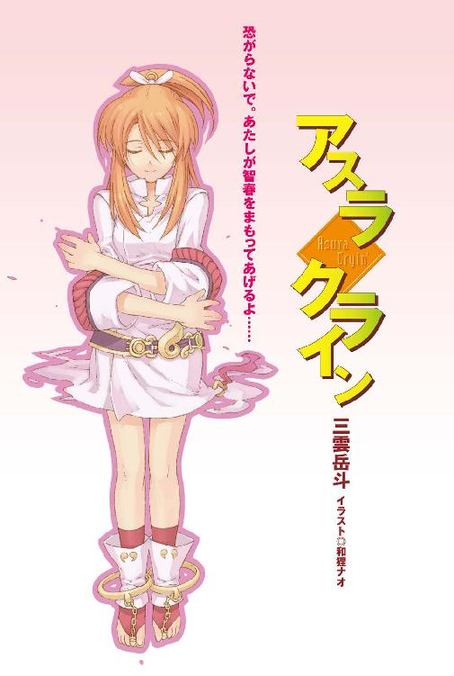
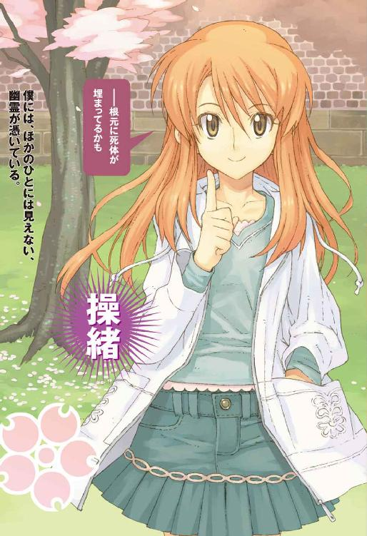

| アスラクライン (電撃文庫) | |
| 三雲 岳斗 & 和狸 ナオ | |



本書（電子版）に掲載されているコンテンツ（ソフトウェア／プログラム／データ／情報を含む）の著作権およびその他の権利は、すべて株式会社アスキー・メディアワークスおよび正当な権利を有する第三者に帰属しています。
法律の定めがある場合または権利者の明示的な承諾がある場合を除き、これらのコンテンツを複製・転載、改変・編集、翻案・翻訳、放送・出版、公衆送信（送信可能化を含む）・再配信、販売・頒布、貸与等に使用することはできません。
φ プロローグ
生まれて初めて飛行機に乗ったのは、三年前。
たとえば、幼いころから知っているなじみの少女の両親が、たまたまロンドンで働いていたとか。彼らから、娘と一緒に遊びに来てくれと、なかば無理やり招待されてしまったとか。
そんな感じで。
世の中には成り行きというものがあり、自分の意思とは無関係に飛行機に乗せられてしまうということもある。成田発メイデン・アトランティック航空ＭＳ九〇一便。ヒースロー行き。中学校の入学式を間近に控えた、春休みのことだった。
その日の僕には、ふたつの深刻な悩みがあった。
ひとつは、僕が重度の高所恐怖症であるという事実。
間近で目にした飛行機の印象は予想していた以上の鈍重さで、こんな不細工な機械が空を飛ぶなんてことには、どうにも納得が行かなかった。前日の夢見も最悪だった。入試に失敗するとか、崖っぷちで足を踏み外すとか、乗っていた宇宙船が大気圏で燃え尽きるとか。とにかくひたすら落ちる夢だ。面倒な手荷物検査やら出国管理やらの手続きでさんざん待たされ、指定された飛行機の座席にたどり着いたときには、僕はすっかり死を覚悟して、投げやりな気分になっていた。
そしてもうひとつの憂鬱の理由は、同行者である幼なじみが、やたらに不機嫌なことだった。
幼なじみの名前は、操緒という。
水無神操緒。双子座のＡＢ型。両親に会うのをあんなに楽しみにしていたくせに、今朝、僕と顔を合わせた直後から挙動が不審で、途中から完全にぶんむくれてしまった。理由を聞いても答えない。今日の服装をどう思うかと質問されて、ヘンじゃない、と言ったのがそんなにいけなかったのだろうか。しかし髪型もコートもいつもと同じで、ほかに答えようがなかったのに。幼稚園のころからわりといつも一緒にいたのだけれど、操緒がなにを考えているのか、僕にはいまだにわからない。
その操緒は、窓際に座る僕の隣でバリバリとチョコを喰っている。
「あのさ」
「............」
呼びかけると、彼女は無言で振り向いた。色素の薄い大きな目を、わざとらしく半眼に細めたままだ。操緒はそのころからけっこうな美少女で、そのぶん怒ると妙に怖かった。
「そのチョコレート、ぼくが買ってきたやつなんだけど。おじさんたちのおみやげに」
「だからなに？」
こんな感じで。
「......いや、あの、そういえば前の席に座ってた女の子、見た？」
「見てない」
「すごい美人なんだよ。中学生くらいなんだけど、背が高くて」
「だからなに？」
「......芸能人かも、って思ったんだけど。脚も長くて胸とかも」
「バカ、エロ、スケベ、セクハラっ」
怒鳴られた。
ほかの乗客が皆一斉に振り返る。前の列に座っていた美人も、ちらりと僕たちに視線を向けて微笑する。僕はますます気分が重くなり、操緒の機嫌もさらに悪化したようだった。
ボーディングブリッジを離れた飛行機が、誘導路をゆっくりと旋回する。飛行機の窓の位置は思っていたよりもずいぶん高く、見下ろした景色に僕は軽い眩暈を覚えた。
「あの......」
せめて通路側の座席に替わってもらおうと操緒のほうに向き直り、そしてようやく僕は気づいた。彼女のコートの襟元から、見慣れないネクタイがのぞいている。
「あれ？ 操緒、その服ってもしかして......」
チョコを貪っていた操緒の動きがぴたりと止まった。
ゆっくりと僕を見て、わざとらしく素っ気ない口調で、
「そう、中学の制服。パパたちにも見せてあげようと思って......」
そこまで言って、操緒は僕の顔をじっと見つめた。なにかを催促するように。ここで対応を間違うと大変なことになるというのを、僕は経験的に知っていた。
「あ......うん、似合う似合う」これでいいのかな。
「ほんとっ？」
操緒が満面の笑みを浮かべた。食べかけのチョコの半分を可愛らしい仕草で僕に差しだし、
「もう、気づくの遅いよ。はい、これあげる」
だからこれは僕が買ってきたおみやげなのだ。だいたいコートの下に着てる服のことなんて、わかるわけないじゃないかと思う。それよりも席を替わって欲しい。
「なに、もしかして飛行機が怖いの？ どうして？」
「僕が高いところダメなの知ってるくせに。飛行機って飛ぶだろ。飛んだら墜ちるだろ。兄貴に教えてもらったんだけど飛行機事故って離陸直後と着陸寸前がいちばん多いんだって」
「平気だよ。そんな簡単に墜ちたりしないってば」
操緒は柔らかな表情で微笑んで、冷え切った僕の手を強く握った。彼女の手は小さく温かく、少し懐かしい感じがした。僕はこのあと操緒とつないだこの手の温もりを、繰り返し思いだすことになる。何度も。そう、何度も。
「──だいじょうぶ、操緒がついてるよ」
彼女の言葉は正しかった。半分だけ。
その日、僕らの乗った飛行機は、海に墜ちた。
一章
母親が再婚した。
僕が一人暮らしをすることになった原因は、簡単にいえばそういうことだ。
といっても再婚のことで母と喧嘩したとか、無理に家を追いだされたというわけではない。
僕が小学生になる前に死んだ実の父親のことはおぼろげにしか覚えていなかったし、母の再婚相手というのがとにかく人の好さそうな小児科医で、反対する理由はなにもなかった。こんないい人がどういう因果でうちの母親なんかと結婚する羽目になったのかと、思わず哀れんでしまったほどだ。
籍を入れたあとで再婚の事実を知らされたのはさすがに唐突だった気もするが、それだって僕の高校受験に差し支えないように黙っていたのだといわれたら文句は言えない。
とにかく突然のことなので驚きはしたが、特に不満はなかったのだ。
だからといって、まったく問題がなかったかといえばそうでもない。
問題のひとつは、母の再婚相手の苑宮氏が新築のマンションを買った直後だったということ。
２ＬＤＫということはベッドルームの数はふたつで、両親が二人で一部屋使うと、あとには一部屋しか残らない。ローンがまだあと二十年近く残っているらしく、家族が増えたからといって簡単に買い替えることはできないのだそうだ。まあそれはそうだろう。
そしてもうひとつの問題は、苑宮氏には年頃の娘さんがいたということだ。
名を苑宮和葉。芳紀十四歳。
母親の再婚相手の娘ということは、僕にとっては妹ということになる。一歳違いの、血のつながらない妹だ。
血のつながらない妹。
期待しなかったといえば嘘になる。
なにしろ僕は二人兄弟の末弟で、いたのは色気もクソもない五歳年上の兄貴だけなのだ。ある日突然妹ができると聞かされて、期待しないほうがどうかしている。
なにも十八禁ゲームのような背徳的な関係になりたいと思ったわけではないが、二人で街を歩いている姿を同級生に目撃されて「違うよあれはただの妹で」的な言い訳をしたり、ガールフレンドを自宅に連れてきたら妹が焼きもちをやいて口をきいてくれなくなったり──そんなささやかな幸せを想像したとしても責められることではないと思う。
甘かった。
今でもはっきり覚えている。新しい家族の初顔合わせの日、苑宮氏に連れられてレストランに現れた苑宮和葉は、終始うつむいたきり、僕とは目も合わせようとしなかった。
私立の女子中学の白い制服に身を包んだ彼女は、小柄で色白で睫毛が長く、実は笑うとけっこう可愛いのではないかという気がしたが、僕にはそれを確かめるすべはなかった。
なにしろ僕が和葉の顔をまともに見たのは三時間近い会食の間にたったの二回きりであり、そのとき彼女が浮かべていたのは、電車内で遭遇した痴漢を見るような怯えと警戒心に満ちた表情だけだったからだ。
もちろん和葉を一方的に責めることはできない。彼女の母親が亡くなったのは、ほんの二年ほど前のことらしい。父親の再婚に関しては、いまだに割り切れない思いもあるのだろう。
おまけに見知らぬ男子と引き合わされて「こいつが今日からおまえの兄だ」といわれても、納得できないのは当然だ。苑宮氏は懸命に娘に話題を振ったり、あれこれ質問したりしていたのだが、正直、空回りしていた感はぬぐえなかった。
そして極めつけの事件は、僕たちがメインの食事を終えた直後に起きた。
両親の前ではできない話もあるだろうから、などという身勝手な大人の理屈によって、僕と和葉は二人きりで、レストランの個室に取り残されてしまったのだ。
まったく、あれは気まずいなんてものではなかった。
デザートのアイスを食べ終わるまでの十分ほどの時間が、冗談抜きで、恒星がその一生を終えるくらいの長さに感じられた。
部屋に立ちこめる重苦しい沈黙を解除するために、なにか喋らなければと僕は真剣に悩み続け、ようやく思いついた最初の言葉が、
「──幽霊って信じる？」
あれはまずかったと反省している。
ただでさえ息苦しかった場の空気は、そのひとことで完全に凍りつき、以後どんな手段を用いても常温に復帰することはなかった。それが三月の最後の土曜日のこと。
そして翌日、三月最後の日曜日が終わるころには、僕は、親元を離れて一人暮らしを始めることを心に決めていたのだった。
＊
ところで幽霊を信じるかと訊かれたら、僕はわからないと答えるだろう。
たとえば、そこに地縛霊がいると聞かされても今イチ信用する気になれないが、死者の残留思念を感じる、と説明されたら、そういうのもあるかもなと思ってしまう。まあ、その程度の認識である。普通普通。
それでは実際に幽霊なんかを見てみたいかというと、これはまったく別の話で、そんなのは絶対にお断りだった。僕はそういうオカルトめいたことが大嫌いなのだ。できれば一生かかわり合いになりたくない。怖いから。
操緒は言う。
『今さらなにを言ってるの、って感じだよね』
たしかに自分でもそう思う。
＊
幽霊の名は、操緒という。
中学生になる直前の春休み、僕の乗った飛行機が海に墜ちた。
けっこうな大事件で、もちろん新聞にも載った。生き残ったのは乗客の半分くらい。
僕にはその事故の記憶があまり残っていないのだが、救助されたあとで収容された病院のことはよく覚えていて、それはもうめちゃくちゃに恐かった。
外国の空港近くにある小さな病院だった。そこに何百人だかの犠牲者が一度に押し寄せたので、僕は全身を包帯でぐるぐるに縛られたまま、狭い病室の隅っこに一晩中放置されていた。
あちこちぶつけた身体はそれほど痛くなかった。それよりも、夜中に突然うめき声を上げるほかの患者や、言葉の通じない外国人の看護師たちや、老朽化した薄暗い病室そのものが怖かった。
そしてなにより怖ろしかったのは、ベッドの上で輸血の管や電極につながれた自分の身体を空中から見下ろしている自分自身に気づいたときだった。これがいわゆる臨死体験というものだというのは、小学校を卒業したばかりの僕にも本能的に理解できたから。
死ぬのかな。朦朧とした意識の中で、僕は漠然とそんなことを考えていた。
『へいき』
幽霊としての操緒の声を聞いたのは、そのときが最初だったと思う。
彼女がすでにこの世のものではないということはすぐにわかった。普通の人間は闇の中でぼーっと輝きながら、宙に浮いたりしていない。
そのときの操緒は普段よりも少し大人びて見えた。綺麗だと思った。怖くはなかった。乗っていた飛行機が落っこちて死にかけている人間が、今さら幽霊を見たぐらいで、なにをどう驚けというのか。僕は笑ったのだと思う。そう、彼女は本当に綺麗な子だ。
操緒は、だいじょうぶ、というふうにふわりと微笑んだ。
『怖がらないで。操緒が智春をまもってあげるよ。そのかわり──......』
まあ、そんな感じで、操緒は僕の守護霊になった。
または彼女に取り憑かれた、ともいう。
＊
そして今日は四月最初の木曜日である。
高校の入学式を翌日に控えた、春休み最後の一日だ。
段ボールが三箱と借り物のスーツケースがひとつ。
僕の荷物はそれで全部だった。
「じゃあな、智春。俺はまだ配達が残ってっから手伝えねえけど。引っ越し頑張れよ」
荷物を運んでくれた大原の親父は、そう言って『大原酒店』と書かれた汚いバンに乗りこんだ。ついでに温くなったコーラを二本、荷台から取り出して放ってくれる。
「ありがと、店長」
軽くお手玉しながらコーラを受けとり、僕は礼を言った。おう、と親父は豪快に歯を剥いて笑った。
「あとで杏のやつに差し入れ持っていかせるから」
最後にそれだけ言い残して、親父は運転席のドアを閉めた。おんぼろな音を響かせてエンジンを始動し、赤錆色の排気ガスをまき散らしながら荒っぽく走り去る。
僕たちは門の前に立ち尽くし、それをぼんやりと見送った。
季節は春。商店街の裏の坂道には、ちらほらと桜の花弁が舞っている。
「──あれが大原ん家の親父さんか」
大原酒店の車が見えなくなったころ、友人の樋口がぽつりとつぶやいた。僕の腕から勝手にコーラを抜きとり、呆れたように息を吐く。
「おまえさ、あんなおっかない人によく荷物運びなんか頼めるな。マジ尊敬するよ」
「なんで？ 親父さん、いい人だよ」
と僕。顔はまるっきりヤクザだけど。
うん、と操緒が隣でうなずいた。細い肩を揺らしてくすくすと笑う。
「それは智春が気に入られてるからだろ。山本なんか、今でもあの店の前は恐くて通れないって言ってるぜ」
「あれは山本のほうが悪いよ。先に殴りかかったのもあいつだって話だし」
樋口は黙って肩をすくめた。山本というのは同じ中学の同級生で、柔道初段。中二の時点で体重百キロを超えていた巨漢である。この男が、中学の制服を着たまま大原酒店に酒を買いに行き、親父さんと喧嘩になったことがある。
そのあとでなにがあったのか山本は多くを語らない。
ただ目撃者のほとんどは、顔をぼこぼこに腫らした山本が、なぜかパンツ一丁で泣きながら店を出ていったと証言している。事の真偽はともかくとして、以来、大原酒店の親父といえばこのあたりのガキどもにとっての恐怖の代名詞となった。
その結果、僕がひそかに有名な理由はふたつになった。ひとつはその親父の店でバイトしている恐れ知らずの変人として。もうひとつは幽霊憑きとして。
「まあいいや。さっさと荷物運んじまえよ」
コーラを先に飲み終えた樋口が、地べたに積み上げた段ボール箱を足で突いた。プルタブに指をかけたまま僕は動きを止めた。
「樋口は？」
「え？ 俺も運ぶのか？」
予想外だ、というふうに樋口は目を丸くする。だったらなにしに来たんだ、おまえは。
「手伝わないのなら帰れよ。コーラも返せ。だいたい今日は、こないだ告ってた二年生の子と映画に行くんじゃなかったのか？」
「ばっか、おめ。友達が噂の冥王邸に引っ越すってのに、映画なんか観てる場合じゃないだろ。この屋敷には、化け物の目撃情報が山ほどあるんだぜ？」
「人の下宿先に勝手に変なあだ名をつけるな。デマを流すのもやめろ」
「デマかどうかはちゃんと調査してみないとな。とりあえず、ここんちの庭にカメラ仕掛けていいかな？」
「くだらないこと言ってないで手伝えよ」
僕は樋口に向けて段ボール箱を放った。またフラれた、と言って樋口が泣きついてきても、今度は絶対に相手しないことにしよう、と心に誓う。
実際、樋口はよくフラれる。平均して年に五回ぐらいのペースで失恋している。樋口の場合、見た目だけならけっこうまともなので、会話の内容に問題があるのだと思う。樋口は重度のオカルトマニアなのだ。
今でこそなし崩し的に友人として振る舞っているが、樋口が最初に僕に近づいてきたのは、僕が幽霊憑きであるという噂を聞きつけてのことだった。
基本的に樋口の女の子との会話というのはオカルトネタばかりで、初めてのデートで妖怪やＵＭＡや宇宙人について延々と語り続けたら、いくら顔がよくても相手はひく。下ネタのほうがまだマシだろう。
「クソ重いな。なにが入ってんだこれ」
段ボール箱の底に手を掛けた樋口が、うえ、と唇を歪めて僕を見る。
「教科書とか辞書とか。先週の新入生ガイダンスでもらったやつ」
「それだけ？ 俺がプレゼントしてやった心霊スポットと都市伝説のガイドブックは？」
「速攻で捨てたよ、あんなの」
僕が答えると、樋口はあからさまに落胆の表情を浮かべた。恨めしそうに『みかん』と書かれた段ボール箱を睨み、
「だったらエロ本は？」
「ないよそんなの」
「智春ってそういうとこマジメだよな」
「べつにマジメってわけじゃないけど」
普通、教科書とエロ本は一緒にしないと思う。そもそも、幽霊憑きの人間に心霊スポットのガイド本をプレゼントするという樋口の神経はどこかおかしい。
『智春にはどっちも必要ないんだよね。あたしがいるから』
僕の頭の中に囁くように、悪戯っぽい声が聞こえてくる。
なんだそれ。誤解を招くようなことを言うな。
ため息混じりに声の方角を見上げると、操緒が素知らぬ様子で遠くを眺めていた。
今の操緒の見た目は、たぶん僕と同じ十五歳くらい。白いスプリングコートのポケットに、両手を突っこんだ美少女だ。
僕の視線に気づいて振り返り、操緒はゆっくりと微笑んだ。
不覚にも見とれてしまった僕をからかうように、べえ、と舌を出して目を細める。長く伸ばした髪の隙間を、桜の花弁がすり抜けていく。
「──しかし古い屋敷だよな」
錆びた鉄格子の門を開け、樋口が庭の石畳に足を踏みだした。
手入れのよくない庭木がまばらに植わった、殺風景な庭だった。短い石畳の突き当たりに、レンガ造りの洋館が建っている。樋口が言うようにかなり古い。なにかの歴史的な記念館だといわれても信じたかもしれない。築五十年くらいは余裕で経過してそうだ。古いというよりも、正直ボロい。
「こんなところに住むのか？ 大丈夫かよ？」
顔をしかめた樋口が、脅かすような口調で訊いてきた。
荷物を担いだまま、僕は玄関の鍵を探した。
「うちの兄貴が二年前まで住んでた家だから。中は意外にまともなんだよ。高校にも近いし」
ポケットの奥から出てきたのは、古びた真鍮製の鍵だった。キーホルダーのかわりに小さな御守りが結んであるのは、たぶん兄貴の趣味だろう。深い意味はないと信じたい。
玄関の鍵穴は錆びていたが、意外と簡単に鍵は回った。ホラー映画とそっくりな音を立てて、建てつけのよくないドアが開く。雨戸を閉め切った屋敷の中は、まだ昼間なのに暗かった。
壁は白い漆喰だが、あちこち剥げ落ちて灰色の地肌が剥きだしになっている。玄関からの光に照らされて、高い天井には不気味な影が浮かんでいた。吹きこむ風にカーテンがひらひらと揺れている。
「お、いいねえ......ほんとに幽霊出そう。けど絶対オンナとか連れこめねえな、これは」
埃まみれの廊下をのぞきこんで、樋口が面白そうに言った。
それを聞いていた操緒がくすくすと笑いだす。そして特に気分を悪くした様子もなく、
『幽霊も女の子も、もうここにいるのにね』
からかうような口調でそう言った。
心地よい楽器の音色ような彼女の声は、樋口の耳には届いていない。
自分の頬を指さした彼女の姿は、よく見るとほんのわずかだけ透けていた。舞い降りてくる花弁は、幻のように肩に積もることもなく彼女を通り抜けていく。
そうなんだよなと思いながら、僕は玄関口に荷物を降ろした。たしかに操緒で慣れていなかったら、僕としても、こんなところに住む気にはなれなかったかもしれない。
洒落た茶色のブーツを履いたまま、操緒は屋敷の中に上がりこむ。
彼女の足音は聞こえない。
廊下に影を落とす操緒の爪先は、ほんのちょっとだけ宙に浮かんでいる。
＊
水無神操緒と呼ばれていた少女が飛行機事故で行方不明になって、もうすぐ三年が経とうとしている。それはつまり、僕が操緒という名の幽霊に憑かれて三年が過ぎたということだ。
しかし幽霊になったからといって、操緒の性格にはあまり変化がなかった。むしろ彼女には、その状況を楽しんでいるフシがある。
見た目からして彼女は幽霊という感じではない。なんというか普通に「女の子」なのである。
全体的に色素が薄い感じはするが、よく見なければ透けていることには気づかない。足もある。出るべきところが出ているという感じではないが、スタイルだってそう悪くない。
事故直後の病院で出会ってから、僕が帰国して中学生になり、進級し──今現在、中学卒業時点まで。なぜか彼女は僕とほぼ同じペースで成長を続けていた。このあたりからして、すでに世間一般の幽霊というイメージからズレている。
成長する幽霊。なるほど、いいだろう。認めよう。
客観的に見ても愛らしいお子様だった守護霊さまは、成長して、とびきりの美少女になった。
それが幸福なことかと問われれば、そうだともそうでないとも言える。
たしかに操緒は可愛らしい。そんな子がいつも傍にいて、自分だけに話しかけてくれるのはうれしいことだ。
その一方で、どんなに手を伸ばしても触れられない場所に彼女がいるというのも事実で、ある意味これはものすごい不幸だと思う。
すらりとした手足とか、それなりに深い胸の谷間とか、白くて細い首筋とか、形のいい唇とか。そういうものをフルタイムで目の前に見せつけられて手が出せない状況というのは、思春期の男子としてかなりつらい。拷問に近い。
しかも操緒は自分の性的魅力についてはかなり無頓着で、何気なく唇を寄せてきたり、入浴中の僕にくっついてフロ場に入ってきたり、見えそうで見えない角度でスカートをはためかせていたりするのだが──もしかしてわざとやってますか、お姉さん？
そもそも幽霊なんて実在せず、操緒の存在は僕が作りだした妄想だという解釈もある。事実、操緒の姿は僕にしか見えず、操緒の声は僕にしか聞こえないのだから。
精神科医に相談したら、分裂した僕の自我の一部が操緒という別の人格を作りだしたのだ、なんてそれらしい理屈をつけてくれるのかもしれない。
それはそれで僕がかなりイタイ人間のような気もするが、残念ながら否定する根拠もない。
ついでに言えば僕には霊感など欠片もなく、操緒以外の幽霊には、生まれてこの方出会ったことがない。だから余計にそう思えるのだけれど──実際のところはどうなのだろう？
『んー、どうかなぁ？』
そう言って操緒は、ほれほれ、という感じで、わざとシャツの襟元を大きく開けて前屈みに僕をのぞきこんだりする。実にエロい。だからやめろって。
『──智春がそれで納得できるのなら、それでいいんじゃない？』
よくない。納得できない。そもそも僕は幽霊とかその手のオカルトや擬似科学が大嫌いなのだ。それでなくても幽霊憑きだという噂を立てられて、中学時代の同級生の一部は、いまだに僕のことを怖れて近寄ってこないのだ。このままでは高校に入学しても、まともな恋愛ひとつできないような気がする。
仮に操緒が本物の幽霊で、彼女の本体はやはりあの飛行機事故で死んでいるのだとしたら、すでに彼女は三年間もの猶予期間を過ごしたのだ。そろそろ成仏してくれてもいいのではないのかと思う。そのほうが操緒のためになるのではないのかと。
そんなことを思っていた。
今夜──彼女たちに出会うまでは。
＊
昼間から始めた引っ越し作業は、夕方にはあらかた片づいていた。
樋口が手伝ってくれたおかげという事実はまったくなく、とりあえず生活に必要な場所以外、掃除も片づけも後回しにすれば、という操緒の大雑把な助言に従ってみただけである。
なにしろこの鳴桜邸は広いのだ。全部の部屋を開けて掃除なんかしていたら、一週間かけても終わらなかったと思う。
「──これで家賃いくらだって？」
リビングに置かれた年代もののソファに寝そべって、樋口が訊いた。
開けっ放しの出窓から夕陽が射しこんで、壁際の柱時計を照らしている。
とにかく古い建物なので掃除したといってもくたびれた印象はぬぐえなかったが、慣れれば居心地は悪くなかった。十九世紀あたりのロンドンとかそんな感じ。探偵小説に出てきそうな雰囲気だ。または怪奇小説に出てきそうな雰囲気ともいう。ほんとに化け物が棲んでいそうだ。
家賃は......さて、いくらだろう？
「そんなに高くないと思うけど、よく知らない。払ってるのは兄貴だから」
留守中は勝手に使っていいと言われていたのだ。本気で僕が住み着くとは、兄貴も思ってなかっただろうけど。
「あー......智春の兄貴って今アフリカだっけ？」
「うん」
うなずきかけて、僕はふと考えこんだ。
「いや、どうなんだろ......こないだインドから絵ハガキが来てたけど」
「なんだそれ？ その前は南米から電話があったとか言ってなかったか？」
頭を上げた樋口が訝しげに眉を寄せて、
「......なんか、頭いい人の考えることはよくわかんねえなあ」
うん。まったく同感だ。
僕の兄の夏目直貴は、幼いころからとにかく頭が切れることで知られていた。
中学生のころからすでに懸賞論文に応募して何十万円だかの奨学金を受け取っていたし、大学生になってからは、それらを元手に株で儲けて家を飛び出し、あっさり海外に留学してしまったのだ。
それ以来、時折ふらりと一方的にかかってくる国際電話以外に、兄貴と連絡を取る方法はない。もしかしたら母にはメールアドレスぐらい教えているのかもしれないが、僕は知らない。
最初のころはそれをずいぶん不満に思ったものだが、最近は僕も少し考えをあらためた。
もしかしたら天才に生まれついた兄貴は兄貴なりに、凡才の弟に気を遣っているのかもしれない。兄弟としての距離の取り方を迷っているというか──いや、やっぱりそれはないか。あの男に限っては。
『杏ちゃん、来たよ』
雑巾を握ったままぼんやりしていた僕に、操緒が近づいてきて耳打ちした。少し遅れて妙に間延びした音でドアチャイムが鳴った。電池が切れかけているのかもしれない。
雑巾をバケツに戻して洗面所で手を洗い、実家から持ってきたスリッパをパタパタと鳴らして玄関に向かう。ギギィと蝶番を軋ませてドアを開けると、快活そうなショートヘアの少女が唇を尖らせて立っていた。中学の同級生だった大原杏だ。
「遅いよっ、智春！」
言いながら、杏は両手に持っていた荷物を僕の胸に押しつけてくる。おせち料理みたいな三段重ねの重箱とオレンジジュースのペットボトル。

「なにこれ。どうしたの？」
受け取った重箱はずっしりと重い。
「お父さんが晩ご飯持っていけって。引っ越し終わったの？」
まあいちおう、という僕の返事を待たずに、杏は勝手に家に上がりこんできた。
廊下に灯ったキャンドル型の電球を見上げて、あは、と感動したように息を吐く。
「すっごいね。話には聞いてたけど、古色蒼然って感じ。鳴桜邸っていうんだっけ？」
「うん。兄貴はそう呼んでた」
この洋館の名前である。そういえば中庭に一本だけ立派な桜の木があって、今も見事に花を咲かせている。
『──根元に死体が埋まってるのかも』
操緒が、僕の耳元で囁いてくすくすと笑う。僕は嫌な顔をして彼女を見上げた。だからそういうことを言うのはやめろって。ただでさえおまえは幽霊なんだから。
杏は特に恐怖を感じている様子もなく、時折「うわー」とか「ひゃー」とか声を上げながら廊下を進み、リビングをのぞきこんで、おや、という顔をした。
「あれっ、樋口じゃん！ あんたもいたの？」
「んあ？」
樋口もむくりと上体を起こして、特に感慨もない口調で、
「なんだ、大原か。今ごろなにしに来たんだよ。お子ちゃまは家に帰る時間だぞ」
こんなふうに意中の女子以外にはひたすら無頓着なところも、樋口が今イチもてない原因のひとつだと思う。
「なにその態度！ 人がせっかく食料の配給に来てあげたのにっ！」
「え、まじで──でかした大原。おまえ最高」
鮮やかなくらい態度を豹変させて、樋口はソファから飛び降りた。僕はそのままリビングのテーブルに食事を並べる。食堂はまだ掃除が済んでいないのだ。
「コップってあったっけ？」
樋口たちに聞こえないように、小声で訊く。操緒が、んー、と唇に手をあてて、
『コップは知らないけどビーカーなら見たよ。隣で』
ビーカーか。たしかにコップのかわりにならないこともない。変な薬品が入っていたやつでなければいいけど。
『だいじょうぶ。操緒がついているよ』
なんだそれ。理由になっていない。それに操緒は、ついててくれてるわけではなくて、憑いてる、の間違いなんじゃないだろうか。
操緒は昔からこんな性格なので、判断に迷ったときの僕は、たいてい彼女の意見に引きずられる。それで失敗して痛い目を見るのは自分だとわかっているのだが、一度固定してしまった役割を変えるのは難しい。あたしがついてるからと操緒に言われて、これまでに何度酷い目にあったことか。そんなことを口の中でぼそぼそとつぶやきながらも、僕は隣室に向った。
そこは、兄が趣味の工房として使っていた部屋らしかった。
殺風景な室内に本格的な工作機械や工具が置かれていて、壁の薬品棚には操緒の言うとおり大小様々なビーカーが並んでいる。そういえば兄はよくここで組み立てたラジコンヘリやここで改造したエアガンを持ちだしてきて、幼い僕を爆撃したり狙撃したりしていた。最悪だ。
僕は使い勝手のよさそうな中くらいのビーカーを、三個選んで取りだした。そのままリビングに戻ろうとして、ふと気づく。
工房の床面に奇妙な蓋がある。なんだろう、と少し興味を惹かれた。埋めこみ式の取っ手の下には鍵穴のようなものが空いていて、蓋というよりは扉のようにも見える。
『んー、地下室、かな？』
操緒が軽い口調で言う。僕は黙って首を傾げた。そんなものがあるなんて聞いてない。
特に理由はないのだが、ものすごく気になった。ただの物置ならいいのだが、ほんとに死体なんかが埋まっていたらどうしよう。または夜中に怪物の唸り声が聞こえてきたりしたら。化け物の目撃情報がある、という樋口の話は、いくらなんでもガセだと思うが。
「智春、なにやってんの？ 早く来ないと全部食べちゃうよっ！」
リビングから杏の声が聞こえてきた。
杏も女にしてはよく喰うほうだが、樋口は餓えた馬車馬のように飯を喰う。二人を放っておくと本当に僕のぶんまで食べ尽くされるかもしれない。僕への差し入れではなかったのか。
「待てよ！ ほんと、なにしに来たんだおまえら？」
僕はビーカーを抱えたまま、あわてて廊下へと駆けだした。操緒は無言でしばらく足元の扉を見下ろしていたが、やがて軽く肩をすくめて僕を追ってきた。
＊
それから三十分ほどの間に、新聞屋が二軒来た。
応対してくれたのは杏だった。商売している父親の背中を幼いころから見て育ったせいか、杏はこの手の交渉事が驚くほど上手い。人懐こい声で一方的に喋り続けたあげくに、洗剤と野球のチケットだけをぶんどって、あっさりと勧誘員を追い返してしまった。これも立派な才能だと思う。
杏は大原酒店の自称・看板娘だ。僕とは同級生であると同時に、バイト先の同僚という間柄になる。
無敵の体力を誇る大原の親父も、過去に一度だけぎっくり腰をやってしまったことがあり、そのときに杏に頼まれて以来、僕は大原酒店で週に三日ほど働いている。中学生が酒屋でバイトというのもどうかと思うが、同級生の実家の手伝いということで教師たちも大目に見てくれていたらしい。
「でも、智春がなにか部活始めるのなら、店のことは心配しなくていいってお父さん言ってるよ。せっかく高校生なんだから、高校でしかできないことをやっとけって」
鳥の唐揚げをむぐむぐと豪快に頬ばって、杏が言う。
「部活かぁ」
僕はアスパラベーコン巻を口に運びながら、うーん、と考えこんだ。コショウが効いていてなかなか美味い。
「智春、部活なんかやんの？」
樋口が不思議そうに訊いてきた。その横から杏が、
「あ、その卵焼き作ったのあたし。美味しい？」
「ちょっと甘すぎるかも......べつに入りたいクラブがあるわけじゃないけど」
しかし僕は無趣味なので、部活ぐらいやってないとバイトのない日に退屈を持てあますことになる。つき合っている彼女がいるわけでもないし。遊びに行くほど金もないし。
そして操緒は退屈するのがなにより嫌いなのだ。
僕に取り憑いている幽霊なのだから当然といえば当然なのだが、ヒマを持てあました操緒は自動的に僕にちょっかいを出してくる。無視しているともちろん怒りだす。操緒は力の弱い幽霊らしく、騒霊現象で暴れたり、祟ったりということはできないのだが、そのかわり昔の僕の恥ずかしい失敗などをよく覚えていて、そのことをさりげなく耳元で囁いたりしてくるのだ。できればそういう事態は避けたかった。
「なんでもいいんだったら、あたしと一緒に陸上部入ろうよっ。智春、足速いじゃん！」
まあ足だけは。僕が兄に張り合える数少ない得意分野のひとつだ。
「やめとけ、あんな汗臭いの。帰宅部でいいだろ、せっかくの一人暮らしなのにもったいねえ」
「こんなボロ家に一人で籠もってるのはヤバいよ。不健康だよ。古井戸の中の女とか、ベッドの下の男とかに殺されちゃうよ」
「ばっか、おめ。それがいいんじゃねえか。もともと智春には幽霊が憑いてんだから、今さら化け物の一匹や二匹増えてもどうってことねえって」
そんなわけあるか、と僕は思う。操緒が、イー、と白い歯を剥いて樋口に怒る。
「それって樋口が言ってるだけでしょ」
漬け物を噛みながら、杏が言う。杏は幽霊否定派だ。
守護霊といいつつ操緒には幽霊らしい能力がほとんどない。他人に憑依したり、呪ったりなんてことはもちろん無理。たぶん彼女の性格的な問題だと思う。そういう湿っぽい行為とは相性が悪いのだ。
ただ、ごく稀に写真やビデオには写ってしまうことがあって、僕が幽霊憑きだと噂になったのも直接的にはそのことが原因だった。どのみち根拠としてはその程度なので、僕は幽霊憑きとしては人畜無害なタイプに分類されており、杏のように幽霊の存在そのものを否定する友人も多い。
「だったら演劇部にしろよ、智春」
なんの脈絡もなく突然そんなことを言いだす樋口。
「俺の情報だと洛高の演劇部には今、男子部員が一人もいないらしい。苦労せず男役スターの座はいただきだ」
「駄目だよそんなの。智春に演技なんかできるわけないじゃん。王子役なんて絶対無理」
「王子じゃなくてもほかにもあるぞ。王女役とか死体とか」
「んー、王女様は見てみたいような気もするけどぉ」
絶対イヤだ。そもそも演劇部に入りたいなんて僕はひとことも言ってないのだが。
やはり陸上部だ、いや映研だ、などと勝手に言い争う樋口たちを無視して、僕が黙々と重箱の三段目に入っていたサンドイッチを食べていると、
『──智春』
操緒がふわふわと降下してきて、僕の肩に乗った。
『また誰か来たよ。なんだか変わった人』
「え......誰だろう？」
思わず声に出してつぶやいてしまい、樋口と杏が不思議そうに振り返った。彼らには操緒の声が聞こえていない。
幸い二人が怪訝に思うより先に、玄関から間延びしたドアチャイムが聞こえてきた。
「また新聞の勧誘かぁ？ おい、大原」
「おまかせっ」
樋口に指名された杏が嬉々として立ち上がり、玄関に向かって駆けだしていく。操緒は、腕組みして考えこんでいる。
『んー、新聞屋さんには見えなかったけど......』
だったら牛乳配達か生命保険の人かもしれない。町内会の役員かも。悩むほどのことだとは思えなかったが──そういえば杏が妙に静かだ。
「......智春、ちょっといい？」
しばらくして杏が戻ってきた。狐につままれたような憮然とした表情を浮かべて、廊下から僕を手招きする。
「お客さんみたいなんだけど」
誰だろう？ 僕が今日ここに引っ越してきたことを知っている人間は多くない。杏の親父と僕の母親と苑宮氏と──苑宮和葉。和葉が来てくれたのなら嬉しいが、しかしそれはあり得ない。彼女が訪ねてくる理由がない。それとも仲直りしにきてくれたのか──
やはり違った。
『うわあ......』
操緒が感心したように息を吐いた。
玄関口に立っていたのは、見たこともない若い女だった。
すらりと伸びた長身でスタイルがいい。踵のある靴を履いているせいで、たぶん僕よりも背が高い。
四月だというのに真冬のようなロングコートを着ている。コートの色は漆黒だ。肩あたりで真っ直ぐに切り落とした髪も黒いので、ほとんど全身黒ずくめである。魔女みたいだ。
彼女が身につけているもので唯一色がついているのは、美人ＯＬがかけてそうな赤いセルフレームの眼鏡で、なんとなくその部分だけが周囲から浮いている。
そして眼鏡の下の彼女の顔立ちは、なんというか掛け値なしの美女だった。
『綺麗な人だねー......智春、ああいうの好きでしょう？』
図星を指されて僕はうろたえた。出来のいい兄に虐げられて育った反動なのか、僕は年上の綺麗なお姉さんっぽい人に弱かった。対抗心を燃やしているのか、操緒の口調は明らかに不機嫌だ。
たしかに美人というだけなら操緒も負けてないが、操緒の場合はお姉さんというよりは双子の片割れみたいなものだし。幽霊だし。それになんというか、操緒には彼女のようなしっとりとした色気はない。
「こんばんは──それとも初めましてと挨拶するべきなのかしら。念のため確認させてもらうけど、きみ、直貴さんの弟くん、だよね？」
黒ずくめの女が口を開いた。
僕は、浮かれていた気分が急速に沈むのを感じた。なるほど。この綺麗なお姉さんは兄貴の知り合いだったわけか。面白くもなんともないオチである。
「あの、すいません。兄貴はまだ留学先から戻ってきてないんですけど」
べつに悪いことをしたとは思わないが、いちおう謝っておくことにした。
僕がこの屋敷に引っ越してきたせいで、直貴が帰ってきたのだと期待させてしまったのなら、それは申し訳ないことだ。
しかしお姉さんは特に落胆した様子も見せず、にこやかに微笑みながら僕のことをじっと見つめていた。
居心地の悪い気分を感じて僕は途方に暮れる。
この人、美人だけどどこか変わっている。とっつきにくいというかペースがつかめないというか。
「──知ってるわ」
「は？」
「あたしもね、直貴さんの知り合いなの。だから今日はあの人に会うのが目的ではないの。きみに用があって来たのよ、夏目智春」
「え、俺ですか？」
驚きのあまり思わず普段使いなれない「俺」なんて言葉を使ってしまう。女はうなずき、
「直貴さんに頼まれていたの。もしあなたがこの屋敷に引っ越してくるようなことがあったら、これを渡してくれって」
「はあ」
渡す。なにを。訊き返そうとして僕は気づいた。
黒ずくめのお姉さんの足元に、見慣れない銀色のトランクが置かれている。
旅行用のスーツケースくらいの大きさで、表面が独特の金属光沢を放っている。
「はい」
彼女はトランクを持ち上げて、困惑する僕の前に差しだした。
「あ、あの......うわ!?」
反射的にトランクを受け取って、僕はたまらずバランスを崩した。
お姉さんが軽々と扱っていたので油断していたが、めちゃくちゃ重い。両手でもぎりぎり持ち上げるのが精いっぱいだ。酒屋のバイトで鍛えているので、体力には自信があったのに。
「たしかに渡したわ。大事にしてね」
涼しげな口調でお姉さんが言う。僕はどうにか無事にトランクを足元に降ろして、
「ちょっと待って。これ、なんなんです？ それにあなたは？ 兄貴に頼まれたっていうのはいつの話なんですか？」
僕が知っている限り、直貴は一昨年の夏に日本を出て、それから一度も戻ってないはずだ。
その間、彼女はずっとこの荷物を預かっていたというのだろうか。それとも兄は戻って来ているのか。だったらどうして僕に直接手渡さずに、彼女に預けたりしたのだろう。
「それを絶対に手放してはだめよ。とても大切なものだから。それが、きみ自身のためにもなるからね」
僕の質問はきっぱり無視して、彼女は一方的にそう告げた。
そんなことを言われても、どうすればいいのかわからない。
渡されたトランクはただ重いだけではなく、ものすごく頑丈に作られていた。本体も取っ手も金属製で、ちょっと見ただけでは継ぎ目がわからないくらい、きっちり閉じ合わされている。
外観はメカニカルだが、ぶっといボルトを打ちこんだ表面にはうっすら錆びが浮いていて、あちこち茶色く変色している。いつごろ作られたものなのかさっぱりわからない。
ひとつだけはっきりしているのは、ものすごく高価そうということだけだ。中に札束が詰まっていたとしても驚かない。むしろその程度で済んでくれたらありがたい。この中身が拳銃や、危険な白い粉末だったらどうしようと想像して、僕は急に恐くなった。わざわざ海外に出かけてなにをしているのだろう、あの兄貴は。
「あの......ごめんなさい。やっぱりこれ返してもいいですか？」
おそるおそる訊いてみたのだが、
「だーめ。それはあなたが持っていなければ意味がないの」
そう言って少し恐い顔で睨まれた。
僕はますます混乱する。意味がないとはどういう意味なのだろう。ただ持っていればそれでいいのだろうか。つまり──時効が成立するとか。ほとぼりが冷めるとか。
「あの......これって、ほんとに兄貴のものなんですよね？」
僕はしつこく訊き返した。あまりにも情けない表情をしていたのだろう。お姉さんが、ふふっと口元を緩めた。笑ったのだ。
「違うわ」
ええっ。トランクを握る僕の指先が震えた。するとやはりこれって盗品なのだろうか。
愕然として彼女の顔を見つめ返す。
かすかな違和感。
目線が合わない。
赤いセルフレームの眼鏡の下の瞳は、僕の肩ごしに天井のほうを見上げている。
その先にいるのは──
『智春、この人──』
操緒が声を震わせた。黒ずくめの女の視線は、迷いなく真っ直ぐに操緒のほうへと向けられていた。僕以外の誰にも見えないはずの操緒へと。
「それは最初からあなたたちのものよ」
きっぱりと宣言して、彼女は僕たちに背中を向けた。コートの裾が魔女のマントのようにふわりと翻った。僕と操緒は、呆然と彼女の後ろ姿を見送った。
あとには銀色のトランクだけが残された。
＊
「ねえっ、今の人なんだったのっ？」
リビングに戻ってきた僕に、ソファの上に正座した杏が訊いてきた。
興味津々といった感じで、くりくり動く瞳はいつもと同じ。ただどことなく不安そうな表情を浮かべている。
「すげえ美人だったな。何者だ、あれ？」
同じく樋口も、欲望に目をぎらつかせながら訊いてくる。部屋からのぞいていたらしい。
「ねえねえっ、その荷物どうしたのっ。中身なに？」
「開けてみようぜ。べつにいいんだろ？」
矢継ぎ早に飛んでくる二人の質問を、僕はぼんやりと聞き流した。自分がなにひとつ答えられないことに気づいて、少しショックを受ける。そういえば彼女の名前を訊くのも忘れていた。兄貴の知り合いだという話は本当だろうか。
兄貴の知り合い。嫌な響きだ、と僕は暗い気持ちで思い出す。
中学生になったばかりのころ愚かにも、直貴に操緒のことを話してしまったことがある。
翌日、直貴は臨床心理学専攻の学生だという女子大生を三人ばかり連れてきた。彼女たちは僕を素っ裸にひん剥いたあげくに、改造手術に使うみたいなベッドに縛りつけ、全身の穴という穴に金属の器具を突っこんで電気を流しながら、全部「いいえ」で答えなければならない質問を五百個くらい訊いていた。僕はそれから半年くらい重度の女性恐怖症に陥った。
さらにその翌年、僕がイジメに遭ったと聞いて直貴が連れてきたのは、名も知れぬ怪しげな武術の達人だというおっさんだった。初伝とやらを習っている最中に十メートルほどぶっ飛ばされて、僕はそのあと三日間くらいの記憶がない。
とにかく昔から直貴の知り合いだと名乗る人物と出会って、僕がいい目を見たことは一度もないのだった。
杏たちに急かされて、僕はクソ重いトランクをリビングの床に投げだした。
見れば見るほど怪しげなトランクだ。アポロ11号が月の石を持って帰るときに使ったやつに似ている。でも見た目がもっとゴテゴテしている。
「細菌兵器とか入ってんじゃねえだろうな？」
冗談めかした口調で樋口が言うが、僕にはまったく笑えなかった。
いちおうトランクには放射線だのバイオハザードだのの記号は入ってないようだが、それだけで安心してもいいものかどうか。たった今、乱暴に投げ落としてしまったことが悔やまれる。
「ねえ、これってどうやって開けるの？」
ばんばん、とトランクを叩きながら杏が訊く。
そんな手荒に扱わないほうがいいと思うのだが、それを口にしてしまうと悪い予感が現実になってしまいそうで、僕はなにも言えなかった。
しかし杏の疑問はもっともな話で、のっぺりとしたトランクの表面には、ロックを解除するための金具やスイッチのようなものがどこにも見あたらなかった。鍵穴や、三桁の数字がグルグル回るダイヤルなんかもない。
「開閉するためのリモコンかなにかがあるんじゃねえの？」
無責任な口調で樋口が言う。杏が呆れたように笑い声を上げ、
「そんなカバンなんて聞いたことないよ。爆弾じゃあるまいし──」
途中でその笑い声が小さくかすれた。
そういえば以前ニュースでやっていた。核攻撃で本当に恐いのはミサイル攻撃なんかじゃなくて、スーツケースほどのサイズの戦術核をテロリストが国内に持ちこむことだとかなんとか。
「............」
白々とした沈黙が流れて、誰もが無意識にトランクから視線を外した。
僕はちらりと操緒を見上げた。幽霊である彼女なら、密閉されたトランクの中をちょっとのぞきこむくらい簡単にできるのではないかと思ったのだ。
『だめ』
しかし操緒はふるふると首を振る。どうやら操緒でも、このトランクの中には入れないようになっているらしい。それとも中が真っ暗で、のぞきこんでもなにも見えなかったのか。
僕は深くため息をついた。
「今度、兄貴から電話があったら聞いておくよ。なにが入ってるのか」
いつになるかわからないけどね、とは言わなかった。
中身が生ものでなければいいけど、と思う。南米あたりの特産品のフルーツとか。腐ってしまうときつそうだ。あとは使用済みの兄貴の着替えとか。ある意味、それは核爆弾よりもイヤかもしれない。
いつまでも謎のトランクを眺めているのが憂鬱になって、僕は再びそれをリビングから運びだすことにした。物置がわりに使う予定の北向きの部屋に運びこみ、役目を終えた引っ越し用段ボールの隣に立てかける。
そのとき間延びしたドアチャイムが鳴った。三軒目の新聞屋。
物置部屋のドアを閉めると、その風圧で畳んであった段ボールが一個転がり落ちた。
「みかん」と書かれたその箱がトランクを覆い隠し、僕はそのことにさえも気づかないまま、玄関へと向かった。窓の外はすでに暗い。春休み最後の一日が、間もなく終わりを告げようとしている。しかし今の僕は、自分の平凡な人生の最後の一日が終わろうとしているのだとは夢にも思っていない。今はまだ。
けれど事態は確実に動き始めていた。
二章
時計の針が十二時を回り、日付が変わった。
四月最初の金曜日──明け方近くになって僕はふと目を覚ました。
窓の外はまだ薄暗い。安物のカーテン越しに射しこんでくる街灯の光が、古びた部屋の中をうっすらと照らしている。
僕の右隣。ベッドの上空三十センチほどの空間に横たわり、操緒は安らかな寝息を立てていた。操緒が持っている数少ない幽霊らしい能力のひとつが自由に姿を消すことで、僕が彼女の寝顔を目にする機会はあまり多くない。それでも、たまに操緒の気が緩んだときなどには、こんなふうに無防備な寝姿をさらすことがある。
眠っているときの操緒は、たいてい布を巻きつけただけのような白くて薄っぺらい服を着ている。今もそうだ。どうやらそれが彼女の本来の姿らしい。
操緒が呼吸するたびに柔らかな曲線を描く胸が膨らみ、あらわになった背筋と肩胛骨が角度を変える。胎児のように背中を丸めて眠っているので、脚の付け根あたりまで白い太腿が剥き出しになっており、ものすごくエロい。
眠れない。
闇の中でぼんやりと光るアナログ時計の針は、三時半をさしている。草木も眠る丑三つ時。どうしてこんな時間に目が覚めてしまったのだろうと不思議に思う。
ミシ、と天井のあたりで音がした。
とにかく古い建物なので、ちょっとした湿度や気温の変化で木材が軋むのだ。それはわかっているのだが、慣れていないのでけっこう怖い。まるで誰かの足音みたいだ。
『ん......』
操緒が息を吐いてふわりと寝返りを打つ。くっきりした鎖骨と胸の谷間が、僕の視界に飛びこんでくる。薄っぺらい布ごしに彼女の身体の輪郭が浮かび上がっている。その下にはなにも身につけてないのではないかと思う。
こんなんで眠れるわけがない。
トイレに行くことにした。
昨夜届いたばかりの新品の布団から這い出して、僕はそっと廊下に出た。
僕が自分の部屋として使っているのは、東南に面した二階の角部屋で、屋根裏部屋っぽい雰囲気が気に入っている。難をいえばトイレが遠いことだ。眠い眼をこすりながら傾斜のきつい階段を降りていく。
四月とはいえ夜はまだ寒い。開けっ放しのリビングのドアから夜明け前の月光が射しこんで、冷え冷えとした廊下を照らしている。
その銀色の淡い光の中を、見知らぬ何者かの影が音もなく横切った。
「......え？」
声帯が間の抜けた声を吐き出すよりも先に、僕は勢いよく壁に叩きつけられていた。
声が出ない。身体も動かせない。これって金縛りなのかな、と寝ぼけた頭でぼんやり考える。
幽霊に取り憑かれているわりには僕には霊感など微塵もなく、金縛りを体験するのも実は初めてだったのだが、まさかこれほど強烈なものだとは思ってもみなかった。
息ができないし、壁にぶつけた後頭部も痛い。しかしこれは間違いなく金縛りだ。
その証拠に僕の目の前には、若い女の幽霊が立っている。
操緒に少し雰囲気が似ている。
そのせいかあまり怖くない。
だが操緒ではない。別人だ。操緒がこんな怖ろしい瞳で僕を睨みつけるはずがない。
闇の中に浮かぶ幽霊の瞳は、左右で色が違っていた。漆黒と、翠緑玉の底のような濃い緑。闇の中でなければ気づかないほどのわずかな差だが、はっきり普通とは異なっている。
やはり人間ではないのだなあ、と妙に納得する。
それにしても──さすがに物の怪だけあって、でたらめに綺麗な幽霊だ。操緒はどちらかといえばバタ臭い感じの美少女なのだが、こちらは純和風だ。鼻筋がすっきりと通って、睫毛が長くて和服を着ている。白衣に緋袴。初詣のときに神社で見かける巫女さんのような──
巫女装束。
なんだか、ものすごい違和感がある。
なにゆえ洋館に巫女さんの幽霊が出てくるのだ。
忘れかけていた恐怖が、じわり、と僕の背中を這い上ってくるのを感じた。
たしかに鳴桜邸は古い洋館なので、幽霊が出ても不思議ではない。その手の雑誌に紹介されたこともあるらしい。桜の木の根本には死体が埋まっているのかもしれないし、秘密の地下室には怪物が飼われているのかもしれない。だがしかし、巫女装束はどう考えても場違いだろう。
「......アスラ・マキーナは......どこ？」
その巫女姿の幽霊が、ぐい、と僕を壁に押しつけながら訊いてきた。
なにを言われたのかわからなかった。アスラマキーナ。初めて耳にする言葉だ。どこかの土地の名物料理だろうか。キーマカレーとかサータアンダギーとかそんな感じの。
それよりも驚いたのは、彼女の腕から伝わってくる強烈な圧迫感だった。
巫女もどきの細い指先が、信じられないほどの力で僕の喉元を絞め上げている。あまりの握力で、身動きがとれない。金縛りだと勘違いしたのもそのせいだ。
腕。握力。
酸欠気味の大脳皮質の表面に、ちかちかと警告信号が灯る。
僕の身体に彼女の腕が触れている。
彼女は実体だ。
幽霊では、ない。
「う、うわあああっ!?」
僕は情けない悲鳴を上げた。寝ぼけていた意識が一気に覚醒した。話が違う。僕が慣れているのは幽霊であって、そのほかの化け物一般には免疫がないのだ。
操緒以外の物の怪に出会うのは初めてだったし、そんなものに遭遇しているという現実が、そもそも信じられなかった。もうまったくワケがわからない。完全なパニック状態だ。
「イクストラクタを渡してください......あれは危険な存在です。危ないから持ってたらダメです」
なにを言われているのかさっぱり理解できなかった。
無数の疑問だけが頭の中をぐるぐると渦巻いている。この女は何者なのか。どこから入ってきたのか。なんでこんな恰好をしているのか。目的は──......
考えているうちに意識が薄れて目の前が暗くなってきた。酸素が足りない。僕の脚から力が抜ける。
「ああっ......あー......」
ぶっ倒れそうになった僕にようやく気づいて、巫女もどきがあわてて左腕を離した。
僕の全身を搦めとっていた圧迫感が、ふわり、と音もなく消滅した。とっさに僕は逃げようとしたが、脚がもつれて歩けない。
そのままうつ伏せに倒れそうになった僕を、巫女もどきが抱き止めた。
頬に柔らかな感触が伝わってきた。
服装のせいでまったく目立たなかったが、この女、半端じゃなく胸がでかい。ほっそりして見えたのに。しかし残念ながら今の僕にその感触を楽しむ余裕はなかった。むしろ余計に窒息してしまいそうだ。そして彼女のほうは、まさか僕がそんな形で窮地に陥っているとは気づいていない。
「アスラ・マキーナは......どこですか？」
まだ言うか。
僕よりも体温が低いのか、彼女の身体はひんやりとしていて、それでもじわじわと心地よい温もりが伝わってくる。彼女の髪は、得も言われぬいい匂いがした。酸欠のせいで頭の回転が鈍っている。もしかしたら、自分は夢を見ているのかもしれないと思う。真夜中に巫女装束の美少女が突然やってきて彼女の胸に顔を埋めて窒息なんて、あまりにも都合がよすぎる。いかにも思春期の男子が見そうな夢だ。
このまま眠りについたら、さぞ気持ちいいだろうと思う反面、非常にまずいという気もする。
明日の朝、操緒にバレれないうちに起きだして、一人でこっそりパンツを洗わなければいけなくなりそうな──
『──智春！』
操緒の叫び声が聞こえてきた。
朝礼中の居眠りを体育教師に叩き起こされたときのように、僕は一瞬で正気に戻った。
巫女もどきの腕を振りほどいて、跳びすさる。
彼女は僕を追わなかった。
廊下の天井をすり抜けて、操緒がふわりと舞い降りてくる。巫女もどきはその光景を、信じられないというふうに表情を凍りつかせて見つめていた。
黒と緑の双眸が、驚愕に見開かれて揺れている。
「あ......ああ──っ!? 射影体......!?」
声を裏返らせて巫女もどきが叫んだ。
『え!? なに？ 誰!?』
彼女の過剰な反応に、操緒のほうがびっくりしていた。
これまで、操緒を見て驚いた人間は誰もいなかったのだ。そもそも僕以外に操緒が見える人間がいなかった。昨夜の黒ずくめ女に次いで二人目だ。
操緒が困ったような顔で僕のほうを振り返る。しかし、そんなふうに見られても困るのだ。
巫女もどきの女も僕を見ていた。しかもなぜか今にも泣きだしそうな顔をしている。こんな綺麗な子に、そんな顔をされたのはもちろん初めての体験で、いくら相手が化け物とはいえ、それだけで僕はショックを受けた。
無限とも思えるほど長い一瞬が過ぎた。
ばっ、と巫女装束の袖で空気を叩いて、女が身体を翻した。
床板を踏み鳴らしてリビングに飛びこむと、彼女は閉めきった窓に向かって突進した。そして窓ガラスに激突すると思われた刹那、夜目にも白い左手を一閃する。
彼女の指先から伸びた爪が、薄闇の中に真紅の軌跡を描いた。
次の瞬間。
「うわっ!?」
突然の閃光と爆音に、僕は頭を抱えてうずくまった。びっくりした。
地鳴りのような震動で鳴桜邸のボロい建物が軋む。吹きこんできた生暖かい風が、寝乱れた僕の前髪を揺らした。ひび割れた壁の漆喰が、ぱらぱらと廊下に降り積もる。
『なに......今の？』
やがて震動が収まったころ、操緒が目を丸くして訊いてきた。
僕は黙って首を振った。
リビングの窓ガラスがすっぽりと消滅し、うっすら白み始めた明け方の空と、舞い散る桜がよく見えた。巫女もどきの姿は消えている。
僕はずるずると床に座りこんで、けほ、と軽く咳きこんだ。彼女の腕に押さえつけられていた場所が、うっすらと赤く、細い指の形に熱を持っている。
夢ではなかった。
鼻の奥には彼女の髪の甘い香りが、耳の奥には彼女の声が、今も残っているような気がした。
アスラ・マキーナ。イクストラクタ。射影体。
『ねえ、智春、なんで今の子と抱き合ってたの？』
操緒の声が、僕の頭の中に小さく響いてくる。
やっぱりあれは抱き合っているように見えたんだな、と僕は思った。もう少しで窒息させられるところだったんだ、とはやはり言えなかった。言っても信じてもらえそうになかったし、よけいに操緒を怒らせてしまいそうだ。微妙に貧乳気味なことを、操緒はけっこう気にしているのだ。べつにいいのに。幽霊なのに。
どうやって誤魔化そうかと僕が悩んでいると、操緒がからかうような口調で訊いてきた。
『──気持ちよかった？』
しかし口調とは裏腹に、操緒の目つきは不機嫌そうに細められており、拗ねたような仕草で僕の背中をつついている。
僕は、黙ってため息をついた。
＊
兄が残していった自転車は、放置されていた二年足らずの間に、塩酸にでもぶちこんだのかと疑いたくなるほど完全に錆びきっており、おかげで僕は、予定より三十分も早く家を出て遅刻ギリギリに学校に着くという、出遅れ感いっぱいの新学期を迎える羽目になった。
学校の名前は、洛芦和高校という。
ラ・クロアというのはフランス語で十字架を指すのだそうで、だからといって無理に学校名を漢字に直す必要があったとは思えないのだが、とにかくミッション系の共学校である。
それほど大きな学校ではない。学区内ではいちおう進学校だといわれているが、受験指導に特別熱を入れている様子もない。ミッション系とはいうものの聖書朗読の授業があるわけでもなく、まあ普通の高校である。強いていえば教会が援助してくれているので、私立のわりには学費が安いということと、制服のあちこちに十字架の紋章が縫いこまれていることくらいか。下校中に吸血鬼に襲われるような機会があれば、きっと役に立つと思われる。
僕の成績では偏差値がぎりぎりだったので、受験のときにはけっこう苦労した。合格発表のあとで報告に行ったら、よかったなあ、と中学時代の担任が涙を浮かべていたくらいなので、実はそうとう危なかったのだと思う。
そんな苦労をしてまで洛高にこだわったのは、ここが兄貴の出身校だからである。
兄貴と同じ大学に入るのは僕の頭では間違いなく不可能で、僕もそれについてはすっぱり諦めているのだが、なにしろ田舎の小さな町なので、高校まで格下だとご近所がうるさい。
アホな弟と呼ばれてバカにされるくらいならまだマシで、バイト先を訪れた見知らぬ客から「気を落とさずにがんばれよ」などといわれつつ、パチンコの景品のチョコをもらったりした日には、いくら僕でもへこむのだ。
『んー、被害妄想だと思うけど......でも、よかったよね。制服、可愛いし』
厳めしい鉄製の校門をくぐりながら、操緒が言う。
今朝の彼女は、真新しい洛芦和高校の制服に身を包んでいる。僕と二人で歩いている姿を誰かが見たら、仲のいい高校生カップルだと思うだろう。しょせん片割れは幽霊で、誰にも見えはしないのだが。
入学式の朝に幽霊と登校。さすがに少し気が滅入る。どうせこれからしばらくは、幽霊憑きの噂を聞きつけた先輩やよその中学の出身者に興味本位で声をかけられることになるのだろう。幸いというかなんというか、操緒はそういうのをまったく気にしない。むしろちょっとぐらい気にして欲しい。
洛高の女子の制服は、植民地時代の修道女だか聖歌隊だかの衣装をイメージして作られているらしく、レトロでゴス調な雰囲気がなかなか操緒に似合っている。とはいえ、こんなスカートの短い修道女がいるとも思えないが。
「操緒、その制服どうしたの？」
どこから持ってきたのか、というか。どういう仕組みになっているのだろう。操緒はいつも流行の可愛らしい服を着ているし、髪型だって服に合わせて変わる。これまではあまり気にしてなかったのだが、考えてみるとけっこう不思議だ。
操緒は、ふふ、と少し得意げに微笑み、
『ないしょ』
と言った。まあ幽霊だしべつにいいけど、と昨日までは深く考えることもなかったのだが、今朝は妙にそんな些細なことが気になった。
操緒のことが見える（らしい）、あの変な恰好の女たちのことを思いだす。
今朝の巫女もどきは、操緒のことを「射影体」とか呼んでいたか。そんな言葉は知らないと操緒は言っていたけれど。
「──おはよっ、智春！」
ループに入りかけていた僕の思考を断ち切ったのは、朝っぱらからやけにテンションの高い女子の声だった。杏だ。僕を見つけて、わざわざ校舎の中から走ってきたらしい。
「遅いよ、智春。クラス分け、見てないでしょ？ 七組だよ。あたしと一緒」
いかにもすごい偶然みたいな口調で杏は言うが、彼女と僕は芸術などの選択科目がまったく同じなので、一緒のクラスになるのもイカサマ賭博ぐらいの必然でしかない。
「なんか元気ないねえ？」
リアクションの薄い僕の顔を、杏が不満そうにのぞきこむ。
「寝不足なんだよ。杏は元気だな」
「べつに普通だけど。寝不足ってどうしてっ？ やっぱりなんか出たの、あのお屋敷？」
しょせん他人事だと思って、ものすごくうれしそうな顔で杏が訊いてくる。しかし彼女も、まさか僕が本当に、謎の巫女もどき女に殺されかけたとは想像していまい。
あまりにも荒唐無稽な出来事だったので、実は警察にもまだ届けていないのだ。被害らしい被害といえるのは窓ガラスが一枚きりで、なにも盗られていなかったということもあるのだが。
「じゃあ、友達を待たせてるから行くねっ。またあとで教室で」
杏は一方的にそう告げると、再び校舎へと駆け戻っていった。
『可愛いね、杏ちゃん』
操緒が微笑しながら言う。たしかに人懐こい小動物みたいではある。
洛高の特徴といえば植木だの芝生だのの緑がやたらに多いことで、新入生の僕には、校舎の位置関係が今ひとつわかりづらい。本当なら、校内のどこかに張りだされているというクラス分けの表を確認しておきたかったのだが、登校してくる新入生や父兄の集団にまぎれているうちに、いつの間にか昇降口までたどり着いていた。
仕方なくもそもそと靴を履き替えていると、背後からいきなり首を絞められた。
「智春！」
樋口だった。黙っていればそれなりにハンサムな顔に品のないニヤニヤ笑いを浮かべ、
「喜べ。また同じクラスだ」
もちろんこの男も選択科目が同じである。二人してなるべく楽そうな科目を選んでいったら、完全に被ってしまったのだ。
「佐伯や嵩月もいるぞ。あと大原のやつも」
「え......誰？」
僕は困惑して訊き返した。杏が一緒なのはわかっているが。
「佐伯玲子だよ。中二のときに同じクラスだったろ。去年、文化祭のミスコンで優勝した──」
知っている。樋口が過去に三回ぐらいアタックして、まったく相手にされなかった子だ。
「そうじゃなくて、もう一人の」
「ああ、嵩月か。北中出身のやつだよ。嵩月奏。こいつもすげぇ美人だぞ」
「......なんで北中の子を知ってるのさ？」
僕が訊くと、樋口は自慢げに唇を吊り上げ、
「情報網があるんだよ」
「ああ。写真部の......」
「おう」
納得がいった。
オカルト以外の樋口の唯一の趣味は写真撮影で、将来はプロのカメラマンになると豪語している。たまに写真雑誌のコンテストにも入選しているので、それなりに実力もあるのだろう。
意外なことに樋口が撮るのは主に都市の景観などで、女の子の写真は撮らない。樋口なりに、そのあたりはこだわりがあるらしい。しかし樋口の写真仲間には、女の子の隠し撮りを専門にしているやつらもいて、機材の貸し借りなどでそういう連中とも付き合いがあるという。
「でな──見ろよ。とっておきの情報だぜ」
そう言って、樋口は制服の内ポケットから一枚の写真を取りだした。
下校途中らしい女子高生が映っている。背景に映っているのはバス停だろう。季節はたぶん去年の秋ごろ。被写体の少女は洛芦和高校の制服を着ている。
『智春──この人！』
写真をのぞきこんでいた操緒が、声を高くして叫んだ。
「あ！」
僕も驚いた。少女の顔に見覚えがある。
モデルみたいな長身。肩のあたりで潔く切り落とした黒髪。整ったシャープな目鼻立ち。
昨夜、僕にトランクを持ってきた黒ずくめのお姉さんだ。眼鏡はかけていないが、間違いない。
「あんだけの美人だからな。訊いたら絶対に知ってるヤツがいると思ったんだよ。調べてみて正解だっただろ」
樋口が偉そうに胸を張る。しかし威張るだけのことはあった。たしかにすごい情報だ。もう二度と会えないかもしれないと思っていたのに。
「うちの学校の人だったんだ......まだいるのかな？」
「ああ。去年の新入生だっていうから、一コ上だな。今は二年にいるはずだ」
『......高校生だったんだね』
操緒が驚いたように言う。昨日会ったときは、もっと大人びて見えたのに。しかしこうして制服を着ていると、ちゃんと高校生に見えるから不思議だ。
「名前は黒崎朱浬。家は綾島のほうらしい。それ以上のことはよくわからんかった。悪いな」
「いや。すごいよ樋口」
僕は素直に礼を言った。
これは大きな手掛かりだ。いつになるかわからない兄の連絡を待つよりは、彼女に直接会ったほうが、間違いなく有益な情報が手に入る。あの銀色のトランクの中身や、兄貴と彼女の関係。それに操緒のこと。もし本当に彼女にも操緒が見えるのなら、訊きたいことがたくさんある。
「入学式が終わったら、二年の教室を回ってみようぜ。おまえなら話しかけても不自然じゃないだろ。あんな美人とお近づきになるチャンスはそうそうないからな」
樋口が真面目くさった顔で言う。
「え？ 樋口も来るの？」
「あたりまえだ。なんのためにわざわざ写真までもらってきたと思ってるんだよ!?」
なんだ。結局それが目的か、とは思ったが、まあいいだろう。樋口がめずらしく役に立った事実に変わりはない。
その樋口が、ふと真面目な表情を浮かべて小声で囁いた。
「あとな、智春。気をつけろ」
「え？」
意味がわからない。
「気をつけるって、なにに？」
「わからん」
樋口も首を振る。そして僕の手から、すっと写真を奪い返しながら彼は続けた。
「この写真をくれたやつに、そう忠告されたんだよ。気をつけろ。深入りするなってな」
はあ。
なんだそりゃ。
僕は操緒と顔を見合わせ、二人で首を傾げる。
写真の中の黒崎朱浬は、なにも答えず、僕たちを優雅な微笑みで見つめている。
＊
栄えある高校の入学式を、僕はほとんど寝て過ごした。壇上から、ごっつい顔の女性教師が睨んでいるのは気になったが、なにしろ眠い。化け物に襲われた直後に熟睡できるほどの図太い神経の持ち合わせはなかったので、今朝はあれから寝ていないのだ。
操緒もやはり寝不足だったのか、校長の退屈な訓辞が始まると同時に姿を消して昼寝を始めてしまった。幽霊のくせに寝不足というのも考えてみれば奇妙な話だが。しかしちょっとうらやましい。
校長と理事長とＰＴＡ役員と地元の議員とあと何人かの知らないおっさんの長い挨拶が終わっても、僕はまだ寝ぼけていた。途中、生徒会長と名乗る人間が三人くらい出てきたような気がしたが、夢を見ていたのかもしれない。
さすがにミッション系の学校だけあって、入学式の途中で賛美歌が流れたりする。小学生のころにお呼ばれした親戚の結婚式みたいだと思う。賛美歌を歌っている聖歌隊の上級生は、なかなかの美人揃いだったが、その中に黒崎朱浬はいなかった。
入学式が終わって、生徒たちはぞろぞろと教室に移動する。
その途中、樋口がトイレに行こうと言いだした。
洛高は十五年ほど前までは女子校だったのだそうで、今でも六対四くらいの比率で女子生徒のほうが多い。そのせいか普通の学校と大きく異なるところがある。男子トイレの数が極端に少ないのだ。
数少ない男子トイレの前には新型ゲーム機の発売日みたいな大行列ができており、僕は列から離れた場所でのんびりと樋口を待つことにした。
操緒はまだ戻ってきていない。
眠い。
不自然な姿勢で爆睡したせいか、首が痛む。関節をばきばきと鳴らしながら、僕はあくびのために大きく息を吸いこんだ。そして、
「──!?」
ぶは、と吸いこんだばかりの息をすべて吐きだしてむせた。瞬きすることもできなかった。
驚くべきものが目の前を歩いている。
女。
洛芦和の制服を着た女子高生だ。
群れて歩くほかの生徒の集団から少し離れて、新入生の女子が一人歩いてくる。
彼女の周囲だけ雰囲気が違う。派手ではないので目立たないが、よく見ると驚くほど綺麗な顔立ちをしている。しかし今はそのことは重要ではない。
彼女のことを僕は知っている。
忘れもしない。鳴桜邸で、僕を絞め殺そうとした巫女装束の女。巫女もどきだ。
瞳の色まではこの距離から判別できないが、あの小作りな顔と長い髪は間違いない。
それに制服の上からでもはっきりとわかる胸の膨らみ。あんな人を殺せそうな代物を、そうそう見間違ったりするものか。
「おまえっ」
頭で考えるよりも先に身体が反応した。通り過ぎようとしていた彼女の腕を、僕はとっさにつかんでいた。うわ、とそれだけで声を上げそうになった。手首が細い。
彼女は悲鳴を上げなかった。
ひゃ......と猫の子の鳴き声のような音を立てて息を呑んだだけ。
だが驚いていないわけではない。その証拠に、ただでさえ大きな目がこぼれ落ちそうなほどに見開かれている。どうやらここに僕がいたことは、彼女にとっても予想外だったらしい。
しかし彼女と間近で顔を突き合わせて、そこで僕は固まった。
彼女の腕をつかんだのはいいが、このあとどうするか考えていなかった。
今ごろになって、心臓がばくばくと音を立てはじめた。
明け方に僕を絞め上げたときの、彼女の異様な腕力を思いだす。もしかして彼女に武術の心得があったりするのなら、こうやって腕を握っているのはまずいのではないだろうか。
戸惑って顔を上げると、彼女と正面から目があった。
彼女の瞳は、両方とも黒い。
「......あっ、あの......離して」
彼女が言った。綺麗な声だった。たぶん聞き覚えがある、と思う。
しかし明け方に聞いた巫女もどきの口調とはずいぶん印象が違う。
「皆さんの通行の邪魔です......離してください」
ぼそぼそと気弱そうな声で繰り返す。彼女が焦っているのはよくわかるのだが、それが僕と再会したせいなのか、単に見ず知らずの男子にいきなり腕をつかまれたせいなのかはわからない。
彼女はびくびくと肩を縮こまらせて、怯えた眼差しで僕を見上げている。タチの悪いナンパ野郎にからまれている純真無垢な女子高生みたいな表情である。
これでは誰がどう見てもこっちが悪役だよなあ、と僕が考えた直後、
「ちょっと夏目！ なにやってるのよ！」
通りすがりの女子にいきなり怒られた。
同じ中学出身の佐伯玲子だった。嫌なやつに会ったなあと僕は思う。僕は彼女のことが苦手なのだ。なぜならいつも怒っているから。
「離してあげなさいよ。彼女、嫌がってるじゃない」
佐伯が僕を睨んで言う。やばいなあ、と僕は思う。怒りっぽい佐伯は自他共に認める女子の味方で、彼女の怒りの矛先はたいてい男子に向けられる。樋口なんかがハナにも引っかけてもらえなかったのも無理はない。一部ではレズではないかとも噂されている。
「違うんだって。これには事情があって」
「事情ってなによ？」
「えーっと、この子に訊きたいことが......」
「こんなとこでナンパ？ あんたはもうちょっとマシなやつかと思ってたのに、やっぱりあの樋口の同類ね」
だから違うってば。
佐伯の相手をしていてはラチがあかないと判断して、僕は所在なげに肩を縮こまらせている少女の顔を直接のぞきこんだ。
「あのさ......きみ、今朝うちにきた人だよね。なにか変なことを言ってたけど」
彼女は僕から、さっと目をそらして、ぶるぶると勢いよく首を振った。
「違うって言ってるじゃない」
佐伯が勝ち誇ったように言う。勝ち気そうなくっきりとした眉を吊り上げて、
「変なことを言っているのは、あんたのほうよ」
なにもそこまで言わなくても。
僕は、途方に暮れて黙りこむ。くす、と周りの誰かが小さく笑う声が聞こえた。
「あの......」
佐伯に庇われていた彼女が、細い声でおそるおそる訊いてきた。
「どうして......わたしがあなたのお宅にお邪魔したって思ったのですか......？」
「え、それは......」
僕は口ごもる。まさか、きみの胸を見て、とは言えまい。
自信がなくなってきた。間違いなく彼女が今朝の巫女もどきだと思うのだが、僕一人では、それを証明する方法がない。どうしてこんなときに限って操緒がいないのか。
ふと気づくと、廊下にいた大勢の生徒たちが、僕たちのほうを興味深そうに眺めていた。ひそひそと噂する声まで聞こえてくる。
両手を腰にあてた佐伯が、蔑むように僕を見上げ、
「気が済んだ？ 嵩月さん、こんなやつほっといて行きましょ」
そう言って彼女の肩に手を回し、教室に向かって歩きだす。佐伯に連れ去られる彼女を、僕は為すすべもなく見送った。
すれ違いざま、彼女は僕に、
「あの......わたし、気にしてませんから......」
まるで波風立つのを怖れているような、そんなセリフを言い残して教室に入っていった。
一年七組。僕と同じクラスである。
冗談だろ、と僕は思う。
今朝のあの妖怪じみた巫女もどきが、同じ高校のクラスメイトだというのか。しかもなぜか別人のようにおとなしく、控えめな人格になって。
なにがなんだかわけがわからない。
「おい、智春──」
暗い顔で立ち尽くす僕に、ようやくトイレから出てきた樋口が訊いてくる。
「おまえ、嵩月となにを喋ってたんだよ？」
その顔には、抜け駆けは許さん、とはっきり書いてあった。僕は訝しげに樋口を見返し、
「......嵩月？」
「おう。さっき話しただろ。北中出身の嵩月奏。おまえにしちゃ、えらく積極的だと思ったが、知ってて話しかけたわけじゃないのか？」
「嵩月奏......」
僕は首を振った。そういや、そんな名前を聞いたような気もするが。
「もしかして、あの子の家って神社だったりする？」
「神社ぁ？」
樋口は心底不思議そうな顔をした。
「うんにゃ、そんな話は聞いたことねえけど......なんでそう思ったんだ？ お祓いしてやるとでも言われたのか？」
うん、惜しい。お祓いしてくれるかどうかは知らないが、どうやら彼女には霊が見えるらしいのだ。
しかし神社の娘でもないのに、なぜ巫女装束だったのだろう。
そもそもあれは本当に巫女だったのか。
だとして、なぜ僕に会ったことがないというフリをしていたのか。それとも、やはり彼女は別人なのだろうか。
もやもやした疑問を抱えたまま、僕は教室に入っていった。
座席指定は男女混合の出席番号順になっているらしく、名字が夏目である僕には、中央列のほぼ真ん中という席が用意されていた。
そしてナ行の夏目の前にいたのは、タ。
タカツキカナデ。
冗談だろ、と僕は思う。
少し離れた席に座る佐伯玲子が、面白くなさそうな顔で、じろりと僕に一瞥をくれた。
ほかの同級生たちが落ち着きなく動き回っている中、嵩月奏は静かに着席して担任の到着を待っている。ピンと背筋が伸びているくせにやけに座高の低い彼女の背後に、僕はそろそろと腰を下ろした。
嵩月奏は振り返らなかった。
＊
『ふーん、そんなことがあったんだ』
操緒が戻ってきたのはホームルームが中盤を過ぎて、クラス全員の自己紹介が始まったころだった。僕の説明を聞いて、操緒も嵩月の顔をのぞきに行ったが、間違いなく彼女が今朝の巫女もどきであると主張する僕に対して、操緒の答えは『うーん、わかんない』だった。
『似てるけど、同じ人かどうかは......あたしのことも見えてないみたいだし』
または、見えているのに見えてないフリをしている、のかもしれないが。
操緒が巫女もどきを目撃したのは一瞬のことだったし、はっきりと顔を覚えていないのは、まあ仕方ない。
『脅かしてみようか』
脅すといっても、操緒にできるのは嵩月の目の前にいきなり顔を出すことぐらいしかないが。
「やめてくれ。教室で騒ぎになったらまずい」
僕は力なく首を振る。嵩月の目的が今イチはっきりしない以上、あまり彼女を困らせるようなことはしないほうがいいと思う。いちおうクラスメイトだし。なにより僕にとばっちりがくる可能性が高い。新学期早々、これ以上の騒ぎに巻きこまれるのはごめんだ。それでなくても、すでに佐伯に睨まれているのに。
『んー、それもそうか』
操緒が考えこむ仕草をした。
自己紹介の順番が近づいてくる。
僕の目の前で、小さくて形のいい嵩月の尻が立ち上がる。そんなに身長が高いわけでもないのに、腰の位置が信じられないくらい上のほうにある。うらやましい。
「北中から来ました。嵩月です」
一拍おいて口を開いた彼女を、クラスのほぼ全員が注目していた。熱心に見ているのはやはり男子が多い。なにしろ嵩月は美人なので、密かに狙っている人間も相当数に上ると思われる。
こうして見ているぶんには、たしかに彼女は普通の女子高生だ。
容姿だけだととっつきにくそうな印象があるのだが、ちょっとした仕草や表情の端々に気弱でトロそうな雰囲気が漂っており、佐伯みたいなタイプが彼女を気に入る理由はよくわかった。全体的にマジメで少し要領が悪そうな感じ。これが演技ならたいしたものだ。
しかしこれでは、嵩月に今朝のことを問いただすのは難しい。いくら席が近いといっても、会話するためには、まずは嵩月に振り向いてもらわなければならないわけで。下手に声をかけようものなら、再び佐伯がすっ飛んできて確実にさっきの二の舞になることだろう。
考えすぎで頭が痛い。
そして何気なく顔を上げた僕は、危うく悲鳴を漏らしそうになった。
自己紹介を続ける嵩月の前に、操緒がふわりと姿を現したのだ。
やめてくれ、と言ったのに。
操緒は正面から嵩月の顔をのぞきこみ、手を振ったり笑いかけたり、あまつさえ彼女の前で掌を打ち合わせたりした。猫だまし。
嵩月は無言のまま立っている。その沈黙が操緒の姿に驚いているせいなのか、単に自己紹介の続きを考えているだけなのかはわからない。同じような背恰好の美少女同士が、至近距離で顔を突き合わせている姿はけっこうな迫力で、見ているこっちがハラハラした。そして、
「趣味は特にありません。カガクが嫌いです」
そう言って嵩月は着席した。カガク......科学だろうか。いや、化学か──酸素と水素が反応して水になります、とかいうアレ。唐突な感じはするけれど、苦手な教科を公表するのは自己紹介として間違ってない。
彼女が座ったので、その場には操緒だけが残される。
操緒は黙って肩をすくめた。結局、嵩月からは目立った反応は得られなかったらしい。ほんとうに嵩月には見えていないのだろうか。
「次の人。夏目くん」
担任の柱谷という優男っぽい男性教師が、僕の名を呼んだ。
「あ......」
あわてて立ち上がる。
操緒の行動に気をとられて完璧に忘れていた。嵩月の次は当然、僕の順番だ。自己紹介の内容なんて、まったく考えていなかった。
結局そのあわてふためく様子だけでクラス中の笑いを誘い、名前と出身中学だけの最低限の自己紹介をする間に、僕は三回セリフを噛んだ。
「──どうしました？ 嵩月さんの後ろ姿に見とれていましたか？」
担任がカマっぽく微笑みながら言う。冗談のつもりなのかもしれないが、先生、まったく笑えません。
クラスのやつらの反応は様々だ。無邪気に笑っている者。嫉妬心を燃やしている者。さらし者になった僕の姿に自分の未来を重ねて、戦々恐々としている順番待ちの連中。
操緒が『ゴメン』と手を合わせている。
そして嵩月は、最後まで振り返らなかった。
＊
ホームルームが終わると、今日はもう帰っていいと言われた。世間には入学式の直後から授業が始まる忙しい学校もあるというが、洛高の場合はこんなものだ。
それでも上級生は普通に授業が行われていたので、僕たちは昼休みになるのを待って、二年の校舎を訪ねてみることにした。黒崎朱浬に会うためである。
「智春、おまえ、ちょっとやつれてないか？」
階段を上りながら、樋口が訊いてくる。
「そうかも」
とだけ答えておく。やつれの原因ははっきりしていた。嵩月のせいだ。
長くてどうでもいい内容のホームルームの間ずっと、嵩月は一度も背後を振り返らず、身じろぎすらしなかった。そのくせ僕のことを意識している気配だけはびんびんに伝わってきて、気疲れすることおびただしい。
もちろん口には出さなかったが、嵩月は僕のことを怖れているようだった。それが今朝のことと関係あるのか、それとも単に廊下で僕に問いつめられたことが原因なのかはわからない。
しかし今朝の巫女もどきと嵩月が同一人物だと仮定すると、殺されかけたのは僕のほうで、彼女が怯えるのは理屈に合わない。
実際、そのうち嵩月が妖怪の本性を現して再び暴れだすのではないかと、僕は内心ビクビクしていた。いつ暴れだすかわからない人に馴れない猛獣を、同じ檻の中で観察している気分だった。
疲れた。
その嵩月も今はいない。
彼女は、放課後になると真っ先に教室を飛びだして帰って行ってしまった。まるで僕に話しかけられることを怖れているみたいだった。教室を出る直前、一瞬だけ振り返って僕と目を合わせたような気がしたが、それも僕の気のせいかもしれない。
立ち止まった樋口が、平手で僕の背中をばしばし叩く。なんでこいつはこんなにうれしそうなんだろうか。
「嵩月に嫌われたことなら気にするな。気持ちはわかるが、どうせ嵩月が相手じゃ釣り合いがとれないって。世の中バランスが肝心だ」
そんなこと樋口にだけは言われたくない。それに嫌われたと決まったわけでもないし。
『あたし、あの子ちょっと苦手だな』
操緒が、つん、と顎を上げて言う。どうして、と僕が視線だけで訊き返すと、
『だって、あの子カン違いしてるっぽくない？ 自意識過剰っていうか周りの人の顔色ばっかり気にしちゃって。何様って感じ。そりゃちょっとは可愛いし、あたしよりちょっとだけ胸も大きいかもしれないけどー』
操緒が僕の前でこんなことを言うのはちょっとめずらしい。たしかに昔から性格はきついほうだが、普段ならよっぽどのことがない限り、ほかの女の子の悪口は言わないのに。どうしたんだろう。やはり自分が微妙に貧乳であることを気にしての嫉妬が──
『そんなんじゃないわよ！』
操緒はそう言うと、抗議の意志を表すように空気に溶けこんで姿を消した。
まあ、そのほうがいいかもしれないな、とも思う。これから会いに行く黒崎朱浬も、操緒のことが見えるみたいだし。出会い頭に騒がれても困る。
そして僕は唐突に閃いた。
嵩月が怖れていたのは僕ではなく、実は操緒のほうなのではないか。
もし嵩月に幽霊が見えるのなら、彼女が、操緒に取り憑かれた僕を避けようとするのは不思議ではない。
嵩月としても、自分には幽霊が見えます、なんてことは言いだしにくいだろうから、結果的に僕にもなにも説明できないことになる。
少しだけほっとする。やはりクラスで一、二を争う美人に、入学早々嫌われるのは気が重い。
とはいえ、今朝の巫女もどきと嵩月との関連性も、いまだによくわかっていない。嵩月とは、いずれ機会をあらためて話し合う必要があるだろう。
その方法を思いつかないから困るのだが。
「お、夏目か？」
ようやく二年生の教室がある校舎までたどり着き、昼飯時で騒がしい廊下を歩いていると、誰かに声をかけられた。でっぷりと横幅の広い男子生徒である。
「あ......先輩」
都合良く顔見知りに出会えて、僕は少しほっとした。樋口はどうだか知らないが、控えめな新入生の僕としては、知らない上級生ばかりの場所をうろつくのは緊張するのだ。
「誰だ？」
樋口が小声で訊いてきたので、中学の陸上部の先輩だ、と答えておいた。
「陸上部ぅ？」
樋口があからさまに疑わしげな表情を浮かべた。たしかに、理想的なアンコ形の体型をしたこの先輩を見たら、そう言いたくなる気持ちもわからないではないが。この人はハンマー投げの選手なのだ。
うむ、とでぶの先輩はうなずいて、
「どうした、夏目？ 二年の教室になんか用か？ そうだ、このあと陸上部のミーティングをやるから、おまえも見学に来いよ。まだどの部に入るか決めてないんだろ？」
「はあ......それはいいんですけど、先輩。その前にちょっと訊きたいことが」
「おう、なんだ？」
「黒崎朱浬って女の先輩、何組にいるかわかりませんか？」
そのときの先輩の表情の変化を、僕は一生忘れないと思う。
ふくよかな頬が凍りつき、ほんのりと赤みがかった彼の顔色が一瞬にして青ざめた。血色のよかった唇が、紫色になって震えている。まぎれもなく恐怖の相である。
「せ、先輩？」
僕は驚いて、彼の顔をのぞきこんだ。
先輩は、怯えたように二、三歩後ずさった。
「夏目......おまえ、黒崎と知り合いなのか？」
かすれた声で訊いてくる。ますます相撲取りのようだ。
「はあ。いちおう」
正確には兄の知り合いなのだが。
しかし先輩は、ひ、と短い悲鳴を上げ、迷わず僕に背を向けた。
「せ、先輩？」
「知らん！」
はい？
「俺はなにも知らん。じゃあな。すまんが、先を急ぐ」
「え、あの......陸上部のミーティングは？」
先輩は一瞬だけ足を止めて振り返り、哀れむような顔で僕を見た。その瞳が、おまえはいいやつだったよ、という感想を言外に告げていた。
それきりなにも言わず、彼は自分の教室へと戻っていく。
「なんだ、あれ？」
両腕を頭の後ろで組みながら、呆れたように樋口が訊いてきた。
僕は黙って首を傾げた。
＊
黒崎朱浬の居場所はほどなく判明した。
樋口が話しかけた通りすがりの女子生徒が、
「黒崎さん？ 彼女なら二年四組だけど、この時間なら化学準備室のほうにいるかもね」
と親切に教えてくれたからだ。
なぜ昼休みに化学準備室にいるかといえば、彼女は科學部の部員だからなのだそうである。
科学部ではなくて科學部だ。字面からすると歴史ある由緒正しいクラブのような感じだが、それにしてはハンマー投げの先輩のあのビビりっぷりが説明できない。とはいえ、黒崎朱浬のことを誰もが怖れているというわけでもないようで、そのことに僕は少しほっとした。変人は嵩月奏だけで十分だ。
そんなわけで僕たちは化学準備室へと向かっていた。
洛高の校舎は僕が通っていた中学なんかに比べると、ひとつひとつの建物が小さく、かわりに数が多い。化学準備室は理科教室棟と呼ばれる、なにやら研究所っぽい校舎の一階にあるらしかった。ずいぶん古い建物で、研究所といってもあまりハイテクな感じはしない。むしろ怪しげな気配すら漂っている。
化学教室に隣接した、細長い部屋だった。
壁際に薬品や教材を収めた戸棚が並んでいて、中央に教員用のスチール机が置かれている。それだけなら、わりとまともな教室に見えるのだが、奇怪なのは部屋の奥にある意味不明のオブジェだった。
「うお、すげえな」
オカルトマニア樋口が、にんまりと口元に笑みを浮かべている。
樋口が喜ぶのも無理はない。そのオブジェは、悪魔を崇拝している邪教集団の祭壇にしか見えない代物だったからだ。雛壇みたいな階段状の棚に黒いベルベットを敷いて、その上にわけのわからない道具がいくつも積み重ねられている。
『なに、これ？』
いつの間にか戻ってきていた操緒が、僕の肩ごしに身を乗りだして訊いてきた。僕は黙って首を振る。
小学生の発明コンクールか、それともデパートでやってる古代文明展の展示会場か、という雰囲気である。原始的な歯車や、板バネを剥きだしにした不恰好なオブジェ。それがおそらく機械だということはわかるが、なんに使うのかさっぱりわからない。ゴミの山にも見えるのだが、もしかしてこれが科學部の備品なのだろうか。
「......お？」
僕たちが準備室の前で立ち止まっていると、奥の扉が開いて、よれよれの白衣を着た男が姿を現した。お湯をそそいだカップ麺の容器を手に持っている。
年齢はたぶん二十代の後半くらいだろう。身長だけがひょろりと高く、目がほとんど隠れてしまうくらい、前髪を長く伸ばしている。どうやら化学担当の教師らしい。
「──見ない顔だな。新入生か？」
カップ麺の容器を机の上に置いて、男は僕たちを手招きした。そして無言で余りもののパイプイスを指さした。座れ、ということらしい。
僕は樋口と顔を見合わせ、どちらからともなく準備室に足を踏み入れた。見慣れない造りの教室を、操緒が興味深そうに見回している。
「一年の樋口です。こいつは夏目」
「市原だ。よろしくな」
そう言って男は、む、と唇を曲げた。怪訝そうに眉を寄せ、僕の顔をじろじろと眺める。
「......夏目？」
「はい。そうですけど」
あの。なにか？
箸を割りながら、男は面白そうに訊いてきた。
「──もしかして夏目直貴の弟か？」
びっくりした。
「兄を知ってるんですか？」
「知ってるもなにも、あいつも洛高の卒業生だからな。俺の教え子だよ。かわいげがないくらいデキのいい野郎だったけどな」
そう言うと市原は、完全にほぐれる前のカップ麺をうまそうにすすった。そして麺を口に含んだまま僕を見上げ、
「おまえも科學部に入りに来たのか？」
唐突に話が飛んだ。僕はきょとんと目を瞬いた。
「おまえもって......え、どうして？」
「あれ。なにも聞いてないのか？ 科學部は直貴のやつが作ったんだぜ。正確にゃ復活させたっていうのかな、あれは」
「兄貴が、ですか？」
初耳だった。そういえば僕は、兄貴が高校でどんなことをしていたのか、なにも知らない。
「あれ......じゃあ、黒崎さんが兄貴のことを知ってたのは......」
「なんだ、黒崎とも知り合いなのか」
たいして驚いた様子もなく、市原が言う。
ようやく話が見えた気がした。科學部を作ったのが夏目直貴で、黒崎朱浬は科學部の部員。年齢が離れているので二人が同時期に洛高にいたわけではないが、同じクラブの先輩後輩なら、なんらかの接点があってもおかしくはない。それだけで謎がすべて解けたわけではないが。
「......だったらよけいにおまえらも入部してくれると助かるんだがな。なにしろ黒崎のやつは中身はアレだが、見てくれだけはいいからな。夕方遅くまで一人で残したりすると、色々と俺も気を遣うんだよ。対外的に」
「あれ......科學部の部員って黒崎さんお一人なんスか？」
樋口が、ぬっと身を乗りだして訊いた。わかりやすいやつ、と僕は呆れる。あんな美人と、二人きりで放課後居残りの部活動。しかも怪しげなオカルト調オブジェ付きである。たしかに樋口には魅力的な条件だろう。
「ほかにあと一人いるんだけど、入院中なんだよ」
市原はそう言って、ずるずると汁をすすった。あまり触れたくない話題らしい。
「入部する気があるなら、こいつにクラスと名前を書いて黒崎に渡してやれ。今はあいつが部長代理だ」
事務机の引き出しから出てきたのは入部届と書かれた半ぺらの紙で、市原は、顧問の承認欄にペタペタと赤いハンコを押した。ずいぶんいい加減な管理である。
「どもども」
うやうやしく両手を差しだして、樋口がそれを受け取ろうとする。
「本気で科學部に入るのか？」
僕は樋口の脇腹をつついて訊いた。べつに僕が心配することではないが、こんなやつをあの美人と二人きりで居残らせても大丈夫なのか、さすがにちょっと不安になる。
「なんだよ。べつに問題ないだろ？」
「そりゃ僕は構わないけど。もしかしたら、このあと、ほかにもっとまともな新入部員が増えるかもしれないのに」
「それはそんとき考えればいいだろ」
明らかになにも考えていない口調で、樋口が言った。
そのとき僕たちの背後で、からからと音を立ててアルミサッシが開いた。
振り返ると、一人の女子生徒が化学準備室に入ってくるところだった。
『──出た』
操緒の囁きに、僕はうなずいた。制服姿だったが、すぐにわかった。昨夜、鳴桜邸を訪ねてきた黒ずくめのお姉さん──黒崎朱浬だ。
昨日は二十歳くらいに思えたのに、制服を着ているとちゃんと女子高生に見える。
あのときの眼鏡はかけていない。
「あら」
僕に気づいて、朱浬はちょっと感心したように笑った。
「昨日の今日で、もう科學部までたどり着いたんだ？ すごいね。さすがは直貴さんの弟くん、だね」
「はあ......」
こんなところで兄貴を引き合いに出されても、まったく褒められた気がしない。しかし彼女の言葉から、僕にもわかったことがあった。
朱浬は、僕がこうして自分を訪ねてくることを予想していたのだ。それがわかっていて、彼女はあのトランクの中身や、自分の所属についてなにも語らなかった。僕を試したのだ。なんの手掛かりもなしに、ここまでたどり着けるかどうか。
「はいはい。俺です。あなたのお名前と科學部のことを調べたのは俺！」
完璧に無視された形になった樋口が、勢いよく手を挙げて立ち上がった。
しかし朱浬は、不思議な生き物を見るような視線をそちらに向けただけだった。
「きみ、誰？」
「樋口です。一年七組、樋口琢磨」
「そう」
朱浬は素っ気なくつぶやいた。賭けてもいいが、彼女の記憶に樋口の名前が登録されたという事実はないだろう。そして固まったままの樋口に嫣然とした微笑みをくれると、朱浬は、樋口の指先から入部届の用紙を抜き取った。二枚まとめて、それを僕に押しつけてくる。
「ようこそ科學部へ、トモハル。歓迎するわ」
非常識なまでに整った天使のような顔に笑みを浮かべて、朱浬が言った。その笑顔に、なぜか身の危険を感じたのは気のせいだろうか。
樋口はかくんと顎を落として立ち尽くし、市原はカップ麺を口に含んだまま苦笑している。
操緒は無言だ。朱浬も、操緒のことが見えないように振る舞っている。それとも今は本当に見えていないのか。
「あの......ちょっと待ってください。僕はべつに科學部に入部しにきたわけじゃ──」
「──お兄さんのことを知りたくないの？」
僕の言葉を、朱浬が冷ややかに遮った。はい？
「昨日渡したトランクのことと、あと、きみに憑いてる可愛い彼女のことも。科學部に入って、あたしの助手になれば教えてあげるよ。手取り足取り」
「手取り足取り......」
樋口がそこにだけ反応する。
僕は呆れて言葉もない。
なにを言ってるんだこの女。科學部に入れば教えてあげる。ということは、入部しなければ教えないということか。
『脅迫だね』
操緒がため息のような声で言う。脅迫。まったくそのとおり。入学式が終わった今、たしかに各クラブは新入部員勧誘の季節だが、それにしたってこんなやり方は聞いたことがない。
唖然としている僕たちを無視して、朱浬はつかつかと準備室の奥へと進んだ。
そして彼女がロッカーから取りだしたのは、一着の黒いマントだった。
ハロウィンの仮装衣装みたいなそのマントを、朱浬はおもむろに制服の上に羽織った。正直、似合わないわけではないが、なにを考えているのかさっぱりわからない。なにゆえ高校の昼休みに、そんな魔女みたいな恰好をしなければならないのだ。もしかしてここは笑うべきところなのだろうか。しかしマントはしっとりと彼女のシルエットに馴染み、普段から着慣れている様子が伝わってくる。
「あの......なんなんスか、それ？」
樋口が遠慮がちに質問した。うん、それはいい質問だ。
「きみたち、科學部の活動目的がどんなのだかわかってる？」
朱浬は色っぽい表情で僕たちに微笑みかけながら訊いてきた。質問を質問で返すのはマナー違反だが、そんな些細な反則などものともしない奇妙な迫力があった。
僕たちは揃って首を振る。
そういえば科學部の活動とはなんだろう。天体観測とか水質調査とか化学実験とか、そういうのを引っくるめてやってるものだとばかり思っていたのだが。
しかし朱浬は、全然そんなものとは違うのだ、と言わんばかりに首を振り、
「あのね。古来、科学というものは魔術と一体だったのよ。天文学は占星術とともに発達したし、錬金術が存在しなければ今日の化学は生まれなかったわ。数学だって数秘術やカバラという形で魔術と深い関わりを持っている」
僕は唖然として、朱浬の唐突な演説に聴き入った。
それはつまり、そういう科学の発展の歴史を調べるのが、科學部の活動内容だということか。
それであんなワケのわからないオブジェが置かれているのか、と納得しかけたのだが、
「だからって魔術のことなんてどうでもいいの」
どうでもいいのかよ。
「現代の科学は魔術なんかとは別物だし、実際に昔の人が思い描いていた奇跡みたいなことが、今の技術では実現できる。だけど今の科学は、たったひとつの大統一理論ってやつを目指して進んでいる。科学的に真理といえる公理はひとつしか存在しないことになっている。そんなの、おかしいとは思わない？」
べつにおかしくはないと思う。大統一理論とやらはよくわからないが、真理とか公理とか、面倒な理屈はなるべく少なくまとめてもらいたい。ただでさえ僕の成績はぎりぎりなのだから、これ以上、覚えることが増えても困るのだ。だがしかし、
「科学の母体になった魔術には、本来、ふたつの相容れない勢力が存在するはずなのよ」
「あ......」
なんとなく話が見えてきた。
魔術の根幹を成す普遍的な思想のひとつ。
二つの対立する勢力。陰と陽。有と無。０と１。男と女。光と闇。白と黒。
「白魔術と黒魔術......？」
樋口がなにやら半眼になってつぶやく。オカルトマニアにしてはひねりのない回答だったが、朱浬は、よくできました、というふうにうなずき、
「そうそう。だとすれば、魔術を母体として生まれた科学にも、白科学と黒科学の系譜が宿命的に存在するはずなのよ」
僕は軽い頭痛を感じてきた。ふと見れば、市原はなにやら難しげな表情を作って、むっつりと腕を組んでいた。黙って見てないでこの部長代理の妄想を止めてやれよ、と僕は思う。あんた、いちおう顧問だろ？
しかし、なぜ黒崎朱浬がマントを羽織っているのか、その理由については納得がいった。
科学者の白衣に対抗するための、黒科学者の黒衣というわけだ。
そして朱浬はきっぱりと言い切った。
「──つまり我が科學部の活動目的は、黒科学の探究なの。わかったよね」
わかったよね、と言われても。困る。
操緒が、たまりかねたように、くすくすと笑いだした。僕は笑うこともできずに軽く唇を引きつらせただけだ。
活動目的は黒科学の探究。
なんだそれ。
まさか生徒会にも、そんなふうに報告しているのだろうか。
よくもまあ予算が出るものだ。言っちゃなんだが、これなら幽霊憑きの僕のほうが、まだ常識的な存在という感じがする。やはりここで笑うべきなのだろうな、と思ったが、僕に微笑みかけている朱浬のまなざしは真剣で、とても冗談を言っている雰囲気ではなかった。
市原は、無責任なことに寝たふりをしている。
樋口はものすごく真面目な顔で考えこんでいる。どうやら朱浬の話には少なからず感銘を受けたらしいのだが、彼の愛するオカルトと、朱浬がいう黒科学とやらの線引きをどこにするのか悩んでいるらしい。どいつもこいつもアホばかりだ。
そしてなにより、そのアホな部を作ったアホの親玉が、自分の実の兄であるという事実が、僕をいたたまれない気分にする。
気づけば昼休みは残り十分ほどで、朱浬は、そろそろ教室に戻ると言いだした。
しかし、まだ黒マントを脱ぐ気配はない。部活中はその黒マントを羽織っているというのが、どうやら彼女のポリシーらしい。もしや科學部に入部したら、僕もそれを着せられることになるのだろうか。かなりイヤだ。
「もちろん、入部してくれるよね。トモハル」
朱浬が媚びるような口調で訊いてくる。なにが「もちろん」なのかわからない。普通に考えれば、こんな怪しいクラブへの入部など、金を積まれてもお断りである。
しかし朱浬には、情報という切り札があるのだ。
科學部というロクでもないクラブで、兄貴がなにをしていたのか、気にならないといえば嘘になる。訊いたところで本人が教えてくれるはずもない。つまりこの機会を逃したら、僕は永久にその情報に接する権利を失うのだ。もちろん、あの銀色のトランクの中身も気になる。
そしてなにより操緒のこと。
どうして朱浬には操緒が見えるのか。その謎が解ければ、操緒の存在そのものについても、なにかわかるかもしれないのだ。
危険を冒してでも入部するべきか。それともやはり断るべきか。
ほかに、なんと答えればよかったのだろう。
僕はがっくりと肩を落として、弱々しくつぶやいた。
「──しばらく考えさせてください」
三章
操緒と二人、なぜか異様に疲れて帰宅したあと、もたもた夕食の支度を始めていると電話が鳴りだした。電話口から聞こえてきたのは、やけにハイテンションな女の声。
『──おっす、息子、元気かー。憧れの高校生一人暮らしはどんな感じよ？ 寂しいからって、お兄ちゃんの身分証使ってアダルトビデオとか借りまくってちゃだめよー......って、アンタにンな度胸ないか、あっはっは！』
よっぽどこのまま叩っ切ってやろうかと思った。
『──お母さま？』
操緒が苦笑しながら訊いてくる。僕はうんざりと首肯した。この母親の脳天気な声を聞いているだけで、疲労が倍増したように感じられた。母の職業は看護師なのだが、職場でも普段からこの調子なのだそうで、これでよく患者から苦情がこないものだといつも不思議に思う。
窓の外はまだ薄明るい。勤務時間中のはずなのに、仕事をさぼってなにをやっているんだか。
「なんの用だよ？」
僕は声を低くする。この母親は、息子が一人暮らしを始めたくらいで、心配して電話してくるような殊勝なタマではない。それがわざわざ仕事を抜けだして電話してきたのだから、実は緊迫した用事なのかもしれない。
だがしかし彼女から帰ってきた答えは、
『へっへっへー......なんだと思う？』
「......切るぞ」
『わっ、こら、ちょっとぉ。もう、なんでよ!? シャレのわからない子ねえ。どこで育て方を間違ったのかしら──どこだと思う？』
無視することにした。
そもそもこの母親から教育らしい教育を受けた記憶はあまりない。仕事が忙しくて、あまり家に居着かなかったせいである。だからといって兄貴が世話を焼いてくれたわけでもないので、我ながらよくこれまで生きてこれたものだと思う。もしかしたら操緒がいてくれたおかげなのかもしれない、と考えて、僕はひどく虚しい気分になった。幽霊以外に家族らしい家族がいないというのは、ものすごい不幸のような気がする。
『やっぱあれかねー、飛行機事故。それとも、幼稚園のときに神社の階段から転げ落ちたやつかなあ。やー、あんときゃびっくりしたわ。ビデオに撮ってればテレビ局の秘蔵映像特集に送りつけてやったのに。あんたは昔からぼーっとした鈍くさい子だったわね』
「............」
なにやら電話口の向こうで好き勝手な推論を述べている母親を放置して、僕は夕食用のもやしを炒め始めた。階段落ちはともかく、飛行機事故は僕の性格とは無関係だと思う。
一般に上手な炒め物のコツといえば、強い火力で一気に仕上げることである。温めたフライパンから湯気が立ち上り、油の焦げる香ばしい匂いが漂ってくる。と、
『──そうそう。それでさ、さっき直くんから連絡があったんだよね』
「え!?」
唐突な母の言葉に、僕は危うくフライパンを落っことしそうになった。
兄貴から連絡？ めずらしい。
受話器に耳を寄せていた操緒が、目を丸くしながら指で四角形を作る。あのトランクのことかなあ、と言っているのだ。
「兄貴が、なんだって？」
『ふっふーん、教えて欲しい？』
勢いこんで訊き返す僕をからかうように、母が言う。僕はイライラと奥歯を噛みしめる。
「早く教えろよ。てか、アイツは今どこにいるんだ？」
『知らなーい。訊くの忘れちゃった、あっはっは。まあ元気そうだったし、べつにいいでしょ』
よくねーよ、と僕は思った。こっちはあの男に訊きたいことが山のようにあるというのに。
『智春も意外に元気そうね。もっと一人で悶々としてるかと思ったのに。あ、心配しなくても、和葉ちゃんとは楽しくやってるから。昨日は一緒にお風呂入っちゃった。やー、最近の子は、スタイルいいわねー。脚も長くて、胸なんかもあのつるんぺたんした感じがたまんないわ──あ、今アンタなんか変な想像したでしょ、やーらしー』
「してないっての」
『ノリの悪い子ねえ......和葉ちゃんにはアンタのこと色々訊かれたわよ。学校のこととか子どものころの話とか好きな食べ物とか好きな女の子とか。アンタが家を出てったのは自分のせいじゃないかって気にしてたわよ」
「え？ なんで？」
てっきり彼女には嫌われたものだと思っていたのだが。
そんな疑念が声に出ていたのか、電話回線の向こうで母が深々とため息をつき、
『ばっかねー、だからアンタはモテないのよ。ほんと女心がわかってないわねこの童貞野郎は』
余計なお世話だ。
『ま、いいわ。じゃ、そういうことで。次の週末には苑宮の家にもちゃんと顔出しなさいよ』
「ちょっと待てよ、なに綺麗にまとめてんだ。兄貴の話はなんだったんだよ！」
『あ、そっか、忘れてたわ』
母がけらけらと笑い声を上げる。僕としても、なんかもうどうでもよくなってきた。早くこの電話を切りたくて仕方がない。兄貴が海外に出てったきり戻ってこないのも、もしかしたらこの母親のせいではないだろうか。
『えーとね、直くんからの伝言。鳴桜邸の中のものは勝手に使ってかまわないけど、大家さんには、いちおう挨拶しておけって』
「......大家さん？」
『そう。北有紗の潮泉さんって人。実はあたしも会ったことないんだけどさ。そのあたりじゃ有名な地主さんみたいよ』
「へえ」
少し意外な感じがした。あの兄貴が、大家に挨拶しておけ、なんて常識的なことをわざわざ外国から知らせてくるとは思わなかった。しかし兄貴の言うことももっともだ。
「わかった。ほかには？」
『ないわよ』
「え？ それだけ？ トランクとかアスラ・マキーナのことは？」
『なにそれ？ アスタ・マニャーナ？ スペイン語だっけ？ とにかく直くんの伝言はたしかに伝えたからねん。じゃあねー。このあと、先生とデートなの。フランス料理のフルコースよ。うらやましいか、あっはっは』
母の高笑いだけを残して、電話は一方的に切れた。僕は電話機を握ったまま、その場でしばらく固まっていた。息子がもやし炒めを喰ってるときにフルコースですか。くそ。まあ、べつにいいけどな。
そのもやし炒めを指さして、操緒が言う。
『──智春、焦げてる。もやしもやし』
「うわ」
炒め物のコツは短時間で仕上げること。くっきりと焦げ目がついて黒っぽくなったもやしを見下ろし、僕は嘆息した。あの母親が余計なことばかり喋っていたせいだ。結局なんだったんだ、今の電話。兄貴は兄貴で肝心なことはなにも言わないし。
北有紗の潮泉さん？
ふむ。
＊
消し炭風味になったもやし炒めをおかずに僕が夕食を終えたころ、ガラス屋がやってきた。壊れた窓の修理を頼んであったのだ。
大原酒店の常連客として僕と顔なじみのガラス屋は、今朝の巫女もどきが壊したリビングの窓を一瞥するなり、ほっほう、と感心したように息を吐いた。
「派手にやったねえ。こりゃ、サッシごと交換だよ。けっこう高くつくよ」
「......マジっすか」
僕は落胆の声を出す。ただでさえ高校生の一人暮らしで貧乏なのに。ガラス一枚だけ入れ替えれば済むものだと思っていた。
「見てみなよ、これ。完っ璧に窓枠が熔けてるでしょ。ちょっとライターなんかで炙ったぐらいじゃ普通ここまでならないんだけどねえ。なにやったの？ ガスバーナーでも振り回した？」
「いや......ちょっとした事故があったみたいで......」
僕は曖昧に言い訳した。破壊された窓をこうして間近で眺めてみると、素人の僕にも、これが尋常な状態ではないということはよくわかった。なにしろ破片すら残さずガラスが融解してしまっているのだ。溶接用のアセチレントーチを使っても、ここまでやるのは簡単ではないはずだ。そう思うと、今朝の巫女もどきはますます化け物めいてくる。
『んんっ......ほんとに嵩月さんがやったの、これ？』
逆さまになって宙に浮かんだ操緒が、腕を組みながら訊いてきた。僕は黙って肩をすくめた。そんなことわかるわけがない。仮にこれが嵩月の仕業だとしても、いったいどんなトリックを使えば、あの一瞬でこんなふうに窓を熔かし尽くすことができるのだろう。
「──とりあえず窓枠は取り寄せだね。本社に戻れば在庫があると思うから、明日には届くよ。悪いけど、今夜はこのままで我慢しておくれ」
「ええっ......じゃ明日まで、穴、あきっぱなしですか？」
不用心だなあ、と僕は不安になった。しかしガラス屋は、かっかっと笑って、
「大丈夫だよ、天気予報じゃ明日も晴れだって言ってたし。言っちゃなんだけど、泥棒だって、わざわざこんなボロ家に入りゃしないよ」
「まあね、そりゃそうなんですけどね......」
泥棒は入らなくても、妖怪は入ってきたりするのだ。
だが、まあいいか、と僕は思い直す。ガラスなんかあってもなくても、あの巫女もどきが相手では関係ないという気もするし。
『また来るかな？』
ものめずらしそうな顔で熔けたガラスを見つめながら、操緒が訊いた。僕は、わからん、と首を振った。あの妖怪が嵩月奏と同じ顔をしていたせいで、あまり切迫した恐怖を感じていなかったのだが、実はけっこう危険な状況なのかもしれないとも思う。
またあんな死にそうな目に遭わされたら、今度は助かるかどうかわからない。なにしろ相手は、アルミ製の窓枠を一瞬で熔かしてしまうような化け物だ。
「──でも、あの巫女もどきの正体が嵩月なら、もう、あんなふうに襲ってきたりはしないと思うんだよ。自分の素性も知られちゃってるわけだしさ」
僕は言葉を選びながらぼそぼそと告げた。高校のクラス分けが発表されたのは、今朝の入学式の直前のこと。つまり昨夜の時点では、嵩月は僕が同じクラスであることを知らなかったはずなのだ。だからこそ、あの巫女もどきは顔も隠さずに僕を襲撃してきたのだと想像できる。
『んー......じゃあ、似てるだけの別人だったら？』
操緒の厳しい突っこみが入る。
「それでも今日はもう襲ってこない気がするな」
『どうして？』
「操緒を見てびっくりしてたから」
むしろ怯えていた、というべきか。あの巫女もどきは、明らかに操緒を見て逃げだした。
理由はよくわからないが、あれほどまでに幽霊を怖がる人間（ではないかもしれない）が、再び操緒に遭遇する危険を冒してまで鳴桜邸に戻ってくるとは考えにくい。
『へえ。だったら、あたしのおかげなんだ。感謝してね』
「......それよりも、自分がそのくらいおっかない存在だってことを自覚しろよ」
『なにそれ!? どういう意味？』
「なんか言ったかい？」
窓の採寸をしていたガラス屋が、振り返って訊いてきた。操緒との会話が漏れ聞こえていたらしい。
「いえ、べつに。なんでもないんです」
僕はへらへらと曖昧な笑みを浮かべて言った。ただでさえ幽霊憑きだと噂されている身の上なので、気をつけないと本気で怖がられてしまうのだ。幸い、ガラス屋は僕が独りごとを口にしていただけだと思ってくれたらしかった。
「それじゃあ、また品物が届いたら連絡するよ」
「あ、よろしくお願いします」
僕は丁寧に挨拶して、店に引き上げるガラス屋を屋敷の前まで見送りに出た。
『智春、さっきの話だけど──』
ふわふわと僕のあとをついてきながら、操緒が言った。
『あんまり操緒に期待されても困るよ。また次も驚いてくれるって保証はないし、ちゃんと追い返す方法を考えておいたほうがよくない？』
「方法って？」
『んー......痴漢撃退スプレーとか』
そんなんで追い返せる妖怪なんて聞いたことがない。あれの主成分はたしか唐辛子エキスかなにかのはず。せめてニンニクならば吸血鬼には効いたかもしれないのに。
「アスラ・マキーナってやつを探してたんだから、それを渡せば帰ると思うんだよ」
怪談としては、わりと新しいパターンだと思う。自分の生首や、斬り落とされた腕を求めて現れる物の怪というのはよく聞くが、なんでまたそんな新種のＩＴ用語みたいな代物を探して迷い出てきたのだか。そもそもアスラ・マキーナというのはなんだ？
『①この屋敷のどっかに隠された財宝、②黒崎先輩が持ってきた謎トランクの中身、③その他──さて、どれでしょう？』
操緒が微笑みながら訊いてくる。
難しい問題だ。兄貴がらみだと考えれば一番が怪しいが、その場合、今朝になってわざわざ彼女が襲ってきた理由がわからない。僕が引っ越してくるまで、この鳴桜邸は一年以上も空き家だったのだ。家捜しなら、その間にいくらでもできたはず。
となると二番か。これも怪しい。しかし黒崎朱浬が謎トランクを持ってきたのは昨日の夜で、それから半日も経たない間に、トランクの在処を突き止めて襲ってきたと考えるのはちょっと苦しくないだろうか。しかも朱浬は、あの荷物は僕たちのものだったと言った。そして僕たちにはアスラ・マキーナとやらの心あたりがない。
『直接、本人に訊いてみたら？』
「本人って？」
訊き返そうとした僕の脳裏に、一人の同級生の顔が思い浮かんだ。
嵩月奏。
同級生なのだから、彼女の住所も電話番号もわかっている。明日は土曜日で学校は休みだ。たしかに人目のある教室なんかよりも、学校外のほうが、この手の込み入った話はやりやすいかもしれない。だがしかし。
「──嵩月が無関係だったらどうするんだよ」
その場合の嵩月の反応を想像して、背筋にちょっと冷たいものが走る。
ただでさえ今日の廊下での接触で不審がられているのに、この上、嵩月の自宅にまで押しかけていったら、ほとんどストーカーだ。佐伯あたりがそれを知ったら、また怒り狂うのは目に見えている。入学早々、変態扱いされるのだけはなんとしても避けたい。それでなくても妖怪がらみの怪しげな用事なのに。
しかし操緒は唇を人差し指でふわりとなぞりながら、
『んー、智春が一人で会いに行ったらそうかもしれないけど』
「あ......」
操緒が言わんとしているところに気づいて、僕は思わず声を上げた。前を歩いていたガラス屋がふと足を止め、少し気持ち悪そうに僕を振り返る。気を抜いていたわけではないのだが、知らず知らずのうちに操緒との話し声が大きくなっていたのかもしれない。ガラス屋の表情に、嫌なものを見てしまったなあ、という感想がありありと浮かび上がっている。
「あー、見送りはもうここでいいよ。じゃあ、ちゃんと届いたら連絡するから」
心なしか早口でそう言うと、ガラス屋は靴をつっかけて玄関から出て行った。僕が会釈する暇もなかった。鳴桜邸の古びた玄関ドアが、ギィ、と重々しい音を残して閉ざされる。
これでまた変な噂が広まってしまうのかもしれない。
そんなことを思って僕は軽くため息をついた。
ま、慣れてるけどな。
＊
翌日の土曜日は晴れていた。
リビングの窓の裂け目から吹きこんでくる花弁混じりの春風に誘われ、僕は寝坊気味に目を覚ました。巫女もどきの再襲撃を怖れて眠れなかったはずが、知らない間に熟睡してしまっていたらしい。時刻は午前十時を過ぎている。
今さら朝食を作る気にもなれなかったので、適当な私服に着替えて僕は家を出た。行き先は、鳴桜邸の近くの商店街だった。端から端まで歩いても十分ほどの、どんな町にでもありそうな普通の商店街である。灰色の石畳が目立つその商店街のちょうど中央あたりに、大原酒店の店舗がある。
「あれっ、智春？」
カウンターで伝票を睨んでいた杏が、僕に気づいて、黒目がちの瞳を大きくした。スポーツブランドのジャージ・ワンピースに、酒屋エプロンがよく似合っている。
「どうしたの？ 今日はバイトの日じゃなかったよねえ？ あ、コーヒー飲むっ？ 試供品でもらったやつなんだけどさっ」
言い終えるよりも早く、杏が缶コーヒーを放り投げてくる。僕はどうにかそれを胸でトラップして受け止めた。大豆プロテイン味とかいう、あまり売れそうにない銘柄だ。
「そういや智春たちって昨日の放課後どっか行ってた？ 帰るとき、いなかったよね？」
杏がちらりと上目遣いに訊いてきた。プルタブをこじ開けながら、僕はうなずく。
「樋口と一緒に、科學部ってとこに寄ってた」
「......科學部ぅ？ 樋口と智春が？」
露骨に懐疑的な表情を浮かべた杏に、僕は慌てて補足する。
「そこの部長代理の黒崎って先輩が、一昨日うちにトランクを持ってきた例の女の人だったんだよ。あのトランクのことを教えてもらおうと思って──」
ふーん、と杏はますます怪訝な顔になって、
「......黒崎って、もしかして黒崎朱浬のこと？」
「え、なんで知ってるの？」
「だって有名人だもん。そうか、あの人が黒崎朱浬なんだ。あ......ってことは、直兄も黒崎朱浬の知り合いってこと？ はー......なるほどっ、ふーん、ふーん」
杏は一人で納得しているが、僕にはわけがわからない。ふと見上げると、操緒も困ったように肩をすくめている。
「有名人ってどういうこと？ 何者なんだ、あの人？」
「あれっ？ 智春、直接会ってきたんじゃなかったの？」
「会ったよ。いちおう会ったんだけどさ......」
「うん？」
昨日、化学準備室で市原や朱浬に聞かされた話を、僕はかいつまんで説明した。
洛高に科學部を復活させたのが直貴だということ。そして科學部の活動内容。直貴の過去やトランクの秘密を知りたければ科學部に入れと脅されたこと。朱浬に操緒が見えるかもしれないということだけは黙っていたが、話の辻褄を合わせるのはそれほど苦労しなかった。
「へえ。黒科学かぁ......なるほどぉ」
杏はなにやら感心した様子で何度もうなずいている。
「それは知らなかったなあ。あたしが聞いてたのは、ただの噂でさっ。洛高の先輩にすっごい美人の悪魔祓い師がいるって話だったの。警察あたりにも顔が利いて、難事件を何コも解決してるらしいよっ」
「......それが黒崎朱浬？」
「そうだよ」
「悪魔祓いって......そんな職業ほんとにあるんだ？」
そもそも警察に協力して難事件を解決するのは名探偵のやることで、悪魔祓いとは関係ない気もする。どっちにしたって、教会も警察も、一介の女子高生に助勢を頼むほど人手不足ではないだろう。
「まあねー、ただの噂だからさ。でも、なんかすごく納得しちゃったよ。そっかぁ、あの人が黒崎朱浬だったんだ。ふーん、それで智春は本気で科學部に入るの？」
「いや......とりあえず保留中」
「なにそれ」
はっきりしないなあ、という非難を言外に滲ませて杏が言う。
「仕方ないだろ。入部しないとこっちの質問に答えてくれないって言うんだから」
「質問って、トランクの中身のこととか？」
うなずく僕を見て、杏はちょっと考えこむ仕草をした。僕は黙ってプロテイン風味コーヒーをすする。『美味しい？』と操緒に訊かれて首を振る。不味い。ハンパじゃなく不味い。
「ちょっと思ったんだけど、それって直兄の作戦なんじゃないのかなっ」
「作戦？」
「そうそう。ほら、科學部って、今、黒崎先輩一人しかいないんでしょ。定数不足で同好会に格下げになっちゃったりするんじゃないのっ？」
まあそうかもな、と僕はうなずく。このまま新入部員が一人も入らなければ、部として存続できるかどうかも怪しい。
「だからさ、智春を科學部に入部させようとしてるんじゃないのかな。直兄と黒崎先輩が共謀してさっ」
「え......だったら、あのトランクの中身って......」
「うん、実はたいしたものじゃないんだよ。だけど直兄からの預かりものってことにしておけば智春は気にするでしょ。で、その秘密をエサにして智春に入部を迫るって作戦。きっと黒崎先輩が直兄に相談したんだね。新入部員を確保するいい方法はありませんかー、とかって」
「......なるほど」
僕は真面目に考えこんだ。言われてみれば、ものすごくあり得そうなことに思えてきた。
直貴が背後で糸を引いていたのなら、いくつかの疑問は氷解する。朱浬が一昨日の夜になって急にタイミングよく僕の前に現れることができた理由や、彼女が操緒の存在を知っていたことについても。なにより、そういう小細工が直貴は大好きなのだ。
『杏ちゃん、すごい......』
操緒も感心してうなずいている。しかし杏は、己の推理をことさらに誇ることもなく飄々と、
「ねっ、そう考えたら、あのトランクが開かなかったのも納得できるでしょ」
「......たしかに」
あのトランクは開かないのではなく、開いては都合が悪かったのだ。だから、あんな古くて重くて頑丈な作りになっていた。なるほど。
『んー......あたしのことが見えるみたいに振る舞ってたのも演技だったのかなあ。直貴さんが絡んでるんなら、そのくらいのことはやるかもしれないけど』
操緒は空中でぷかぷか回転しながら考えこんでいた。しかし彼女も、有効な反論は思いつかないようだ。そして杏は、ふと思いだしたように真顔になって僕を見上げた。
「あれ、智春、そういえばなにか用事があってきたんじゃなかったの？」
そうそう。忘れていた。
「地図を見せてもらおうと思って来たんだよ。北有紗の潮泉さんって人の家に行かなきゃいけないんだけど、住所も番地もわからなかったから」
大原酒店には、配達のときに使う大きな住宅地図があるのだ。世帯主の名前まで載っている詳細なやつだ。
「潮泉さんって地主の潮泉さん？ もしかして鳴桜邸って、潮泉さん家の持ち物だったの？」
ふーん、と杏が一人で納得する。説明する手間が省けて助かった。しかし杏まで名前を知っているとなると、潮泉という人はよほど有名な土地持ちらしい。
「あったよ。これ」
杏がカウンターの上に広げた住宅地図の一ページを指さした。うわ、と僕は小さくうめいた。
北有紗という地区は市内でも知られた高級住宅街なのだが、中でもずば抜けて広大な屋敷が一軒あって、そこが目的の潮泉邸だった。なるほど。これは有名になるわけだ。どう見ても洛高の敷地の倍はある。個人の邸宅にあるまじき広さである。
『......智春』
操緒が僕の背中にぴったりと張りついて、急かすように言った。
僕は居心地の悪い気分でがりがりと髪をかき上げる。
大原酒店に立ち寄ったのは、実は地図を見る以外に、もうひとつ理由があった。嵩月奏のことである。僕が単独で嵩月の自宅に押しかけたら警戒されるのが目に見えている。なので杏に、クラスメイトのよしみで一緒に来てくれるよう頼みにきたのだ。
最初に思いついたときはいい考えだと思ったのだが、実際に杏を目の前にすると、予想外に言いだしにくいものである。操緒のことを黙ったままだと、嵩月に会いにいくための説得力のある理由を思いつかない。それどころかよけいな誤解を招きそうだ。
「道わかった？ 書き写すなら書くもの持ってくるよっ？」
杏が、ぬっと僕の前に顔を突きだしてくる。彼女には操緒は見えてないのだが、僕の主観では前後をぴったりと女の子に挟まれているわけで、なんというか非常に落ち着かない。
「あのさ」
なにも考えないまま、その場の勢いだけで僕は口を開きかけ、
「──いらっしゃいませっ」
ほとんど同時に杏がそう叫んだ。
振り向くと、店の入口の自動ドアが開いて白っぽいコートを着た男性客が店内に入ってくるところだった。変な客だ、と僕は思った。そもそもこんな朝っぱらから酒を買いに来るというのがめずらしい。たまにいたとしても、それは料理酒を切らしてしまった近所の主婦か、花見に出かける直前の買い出し組ぐらいだろう。
しかし白コートの男は、そのどちらとも雰囲気が異なっていた。
目深に被った帽子のせいで、男の表情はわからない。コートには金色の縁取りが施されており、彼の胸元には馴染み深い形の首飾りが鈍く輝いていた。十字架だ。
『......旧教会の神父さん？ 若いね。なんだか頼りなーい』
操緒が少し驚いたようにつぶやいた。たしかに操緒の言うとおり、やけに若い神父だった。単純に童顔なのかもしれないが、高校生といっても通用しそうだ。それにしてもいちおう幽霊なんだから、もう少し聖職者を敬えよ。
「赤ワインですか。でしたらこちらに」
客好きのする笑顔を浮かべて、杏が客を保管庫に案内していく。僕はすることもないので、神父が輸入ワインを買って出ていくまで、店の隅で不味いコーヒーをすすっていた。
店を出る直前、その僕に気づいて神父が軽く目礼してくる。操緒がそれに答えて手を振ったとき、一瞬、神父が足を止めたように思えたのは僕の気のせいだろうか。白いコートの隙間から見えた服は、どことなく洛高の制服に似ていた。
「──ここ最近、たまに見かけるんだよねっ。神父さんのお客さん」
ワインの代金をレジにしまいながら、杏が言った。とりあえず、へえ、と答えておく。世話になってるバイト先の売り上げに貢献してくれているのだから、僕としてはべつに不満はない。ついでに昨日の巫女もどきみたいな、妖怪変化も取り締まってくれるともっと有り難いのだが。
「それでなんだっけ？ さっき、なにか言いかけなかった？」
邪気のない目で僕を見上げて、杏が言った。しっかり聞こえていたらしい。
「や、ちょっと杏に頼みたいことがあって。今日の店番っていつまで？」
「お父さんが配達から帰ってくるまでって約束なんだけど。頼みってなに？」
「ああ、うん......それがちょっとややこしい話なんだけどさ、昨日の──」
「──あら、智春くん？」
ぼそぼそと言いかけた僕の声を遮ったのは、おっとりとした女性の声だった。
店の奥から、花柄のワンピースに身を包んだ杏の母親がひょっこりと顔を出す。杏と一緒に町を歩いているとほぼ確実に姉妹に間違われるという、小柄で童顔の女性である。彼女は僕の顔を見るなり、なにかを思いだしたように、うふふふ、と口元を押さえて笑った。
なにを言いだすつもりなのかと思ったら、
「智春くん、好きな女の子ができたんですって？」
「──は？」
なんだそれ、と僕は驚いて杏を見る。
どこからそんな脈絡のない噂が、大原母の耳に入ったのだろう。杏はぶるぶると首を振り、眉を吊り上げて母親のほうを振り返った。声を上擦らせて早口で叫ぶ。
「ちょっと、お母さん！ 変なこと言いださないでよ」
「なによぅ。杏が騒いでたんじゃない。同じクラスにすっごく可愛い子がいて、智春くんが、その子のことを気にしてるみたいだって」
「あたし、べつに騒いでなんか──」
「あらー、そうだったかしら。ふーん？」
大原母が、わざとらしく頬に手をあてて独りごとのように言う。いつになくうろたえた様子の杏を見ているうちに、大方の事情は読めてきた。
同じクラスの可愛い子というのは、たぶん嵩月のことだろう。そりゃたしかに嵩月のことを僕が気にしていたというのは嘘ではない。しかし大原母の今の話ぶりからすると、どうやら杏までもが、僕が嵩月に一目惚れしたと勘違いしていたらしい。
『なんかややこしい話になっちゃったね......』
操緒が、にゅう、と唇を曲げてつぶやく。僕は黙って天井を見上げる。
このタイミングで、嵩月に会いに行くからついて来てくれなんて杏に頼んだら、さらにややこしい状況を招くのは目に見えていた。
嵩月には幽霊が見えるかもしれない、と今さら言ったところで杏は信じてはくれないだろう。せめて杏が、樋口のような幽霊肯定派だったら、説明するのも少しは簡単だったのだが。
「──あ、そうだ」
緊迫感に充ち満ちて、それでいて妙にほのぼのした生ぬるい沈黙を破ったのは杏だった。
「智春さ、北有紗まで行くのなら自転車乗っていきなよ。貸してあげるよ」
言うが早いか、杏は身を翻して店の奥へと消えていく。自転車の鍵を取りに行ったのだろう。
「そうね。それがいいわね。よかったら、また夜はうちにいらっしゃい。お夕飯を一緒に食べましょう」
大原母が、にこやかに微笑んで言う。母という言葉から真っ先に僕が連想するのは、うちのアホな母親ではなく彼女のこの笑顔のほうだった。大原母は、杏が消えていった方角をちらりと振り返り、それから僕のほうを見て意味深に笑った。
「杏には内緒だけど、わたしは応援してるからね」
「はあ......応援？」
なんのことだ？
「嵩月さん、だっけ？ うまくいくといいわねぇ」
「いや、だからそれは違いますって」
にこやかにそんなことを言われても困るのだ。
しかし大原母はさらに楽しげに目を細め、
「でもよかったわぁ。実はちょっと心配してたのよぅ。ほら、智春くんには可愛い幼なじみの幽霊が憑いてるっていうでしょう。智春くんはその子のことが好きだから、生身の女の子には興味がないんだと思ってたわ。智春くんも普通に男の子だったのねー」
んな、と僕は絶句する。いきなりなにを言いだすんだ、この人は。
その大原母の左斜め上空に浮かんだ操緒は、わ、と驚いたように口を開けている。それからなぜか顎をくすぐられた猫のように目だけで笑った。どういう意味があるのかわからない。
「はい、鍵──二人でなに話してたの？」
なんとも形容しがたい表情を浮かべていた僕に気づいて、戻ってきた杏が不思議そうに訊いた。僕は無言。大原母は、うふふふ、と笑って煙に巻く。
「じゃあ自転車借りるな」
杏から鍵を受け取って、僕は逃げるように店を出た。近場の配達に使う業務用チャリは、店の裏手の駐車場に置かれている。前輪の横にしゃがみこんで鍵穴と格闘していると、杏が僕を追いかけるようにしてやってきた。
「あのねっ、智春」
めずらしく息を切らしている。顔が赤い。
「さっきお母さんが言ったことは気にしないでねっ」
「おばさんが言ったことって？」
少しどきりとした。操緒のこと。これまで一度もそんな話をしなかったので、てっきりあの人は僕が幽霊憑きであるという噂を知らないのかと思っていたのだ。なのに、それがどうして、僕が幽霊なんかを好きだって話になってしまうのか。操緒が調子に乗るのでやめてもらいたい。
しかし杏は、
「ほら、あたしが騒いでたとか、なんとか──ほんと、そんなんじゃないからねっ」
なんだそっちか、と僕が思う間もなく杏は、じゃねっ、と踵を返して店に駆け戻っていった。僕は特に感想を抱くこともなく、その後ろ姿を見送った。どうして杏がそんなことをわざわざ言いに来たのかわからなかった。不本意ながら、僕は知らないところでよくない噂を流されることに慣れており、その手の攻撃には強い耐性があるのだ。嵩月が美人で、昨日の僕が怪しい行動をとっていたことは客観的な事実であり、杏が母親に学校であった出来事のひとつとして話したとしても、まあそれぐらいはするだろうと思う。
「なんだ、あいつ？」
僕は操緒を見上げてつぶやいた。操緒はどこか遠くを見つめたまま、なにも答えない。
ぎしぎしと軋む業務用チャリに跨ると、操緒はふわりと荷台に横座りした。さっきと同じように目を細くして笑い、うっすらと透けた幽体で僕の腰にしがみついてくる。もちろん彼女の腕は、なんの感触も残さず僕の身体をすり抜けただけだった。しかし操緒は満足げに笑う。いつになく上機嫌な様子。
僕は黙って、自転車を漕ぎだした。一人分だけの体重を載せて、業務用チャリは石畳の道をするすると加速していった。
＊
地図で見たときに覚悟はしていたが、潮泉氏の邸宅は想像を上回る巨大さだった。
道なりに延々と続く武家屋敷のような白塗りの土塀と、広大な庭に邪魔されて、外からでは建物の姿を拝むことすらできない。門をくぐると、どこの寺院の総本山かと思うほどの石畳の参道が真っ直ぐに伸びていて、それは背後の小高い山まで続いていた。
ご家庭の敷地内に「山」である。尋常な感覚とは思えない。
『うーん......さすがに化け物屋敷の大家なんかやってるだけはあるよねえ』
操緒が身もフタもない感想を漏らす。たしかになあ。
堂々と正面から来ないで、裏口から入ればよかったかもと少し後悔する。しかし裏口というのはいったいどこにあるのだろう？ 文字どおり表門の反対側にあるというのなら、山ひとつ越えていかなければたどり着けないことになってしまう。
しばらく迷ったあと、僕はあきらめて門の脇にあったインターホンを鳴らした。ほどなく、スピーカーから女の人の声が聞こえてきた。
『──夏目智春様ですね。承っております。中へどうぞ』
予約を入れてきたわけでもないのに、承っている、とはどういうことなのだろう。僕は困惑して操緒を見上げたが、操緒も当然、わかんない、と首を振った。
『直貴くんが根回ししておいてくれたんじゃない？』
「そうかもな」
ほかに考えようがない。薄気味悪い予感にあえて目を瞑りながら、僕は自転車を門の脇に寄せ、徒歩で潮泉邸へと入っていった。庭と言うよりも森林といったほうが正確に思える広大な庭園を横切って、たどり着いたのは趣のある古い日本家屋だった。
玄関の前に一人の女の人が立って、僕を出迎えてくれている。ジーンズに薄いカーディガンというラフな服装の若い女性だ。どうやらこの家の娘さんらしい。そのことが少し意外に思えた。家のサイズからして使用人の十人や二十人は雇っていてもおかしくないのに。
「あなたが直貴の弟さん？ なるほどね」
彼女は僕を見ると、そう言って笑った。なにが、なるほど、なのだろう。
「......兄を知っているんですか？」
「うん、だって有名人でしょ。こっちよ。ついてきて」
どうとでも受け取れる曖昧な返事を残して、彼女は歩きだした。屋敷に入るのかと思ったらそうではなく、向かったのは裏山に通じる道だった。石造りの巨大な鳥居をくぐって、彼女は石段を上り始める。果てしなく続くのではないかと思える長い長い石段だ。
「ここって、神社なんですか？」
軽く息を弾ませながら、僕は訊いた。
「昔ね。そうだったみたい」
ジーンズ姿の彼女は、まったく重力の影響を感じさせず、平然と石段を上り続ける。単純に慣れているだけなのか、それとも過酷な訓練を受けたアスリートなのか、どっちだろう？
「だいぶ前によその神社に合祀されちゃったからね。今も残ってるのは能楽堂くらいかな......ごめんね」
「え......なにがです？」
「こんなところまで来させちゃって。うちのお爺ちゃんは今はもう、ほとんど誰とも会わないのよ。食事も孫のわたしかカナが持っていかない限り食べないし。だから正直、きみに会うって言いだしたときには家族一同びっくりしたのよ」
そう言って彼女はくすくすと笑う。少しなれなれしい感じの喋り方が、奇妙に魅力的に感じられる雰囲気が彼女にはあった。大人びて見えていたが、実際の歳はうちの兄貴と同じくらいだろう。こういうお姉さんが兄貴と結婚して義姉になってくれたらいいのにと思う。それにしても、ちょっと引っ越しの挨拶に来ただけなのに、そんな大層な爺さんと面会させてもらっていいのだろうか。
「ここよ。入って」
彼女に案内されてたどり着いたのは、山の中腹にある小さな建物だった。ログハウスと言えば聞こえはいいが、その実体はただの丸太小屋だ。とても大地主の住処とは思えない。
しかしこれでも外見はまだまともだったのだ。小屋の中に足を踏み入れて、僕はそのことを思い知らされた。悲鳴を上げずに済んだのは上等だった。
『なに......これ......』
操緒が怯えたようにつぶやいた。
そこにあったのは無数の渦巻きだった。
小屋の壁紙、天井、絨毯、タンスの上の置物や、窓枠にぶら下がった風鈴まで──部屋の中にあるのはすべて渦巻き模様で統一されていた。カーテンの模様はもちろん渦巻き。机の上に置かれた古いパソコンのスクリーンセーバも渦巻き。金属製のベッドの脚は、ロココ調の渦巻き模様。絶対にまともな神経の持ち主の部屋ではない。見ているだけで目がちかちかする。
ベッドに敷いた渦巻き模様の布団の上で、渦巻き模様の浴衣を着た老人がクラシック音楽を聴いている。コンポにかけられた音源は、アナログ式のレコード盤だった。渦巻き形の溝が刻まれているアレである。徹底している。そこまでやるか。
「お爺さま。夏目智春様をお連れしました」
潮泉家の孫娘は、そう言ったきり部屋の中に入ろうとはしなかった。どうやら、この渦巻き愛好家の老人の相手を僕に押しつけるつもりらしい。
潮泉老人は、壊れかけの茶運び人形のようなぎくしゃくした動きで僕のほうを向いた。干物と見間違いそうなしわくちゃの老人だが、愛嬌のある瞳が印象的だ。
「──美しいとは思わないかね」
部屋の中を埋め尽くす渦巻きを見回して、その老人が口を開いた。意外にしっかりした口調だったので、僕は少しだけほっとした。
老人は螺旋状にねじれた煙管に火をつけ、淡い煙を吐きだした。部屋に流れている音楽は、ラヴェルのボレロ。繰り返される単調な旋律に乗って、紫煙がゆったりと広がっていく。
「螺旋とは、この世界の根幹を成す存在だ。世界そのものの相似だといってもいい。気象、生命、天体の運行、すべての法則は螺旋の中にある。理論物理学者の中には、この宇宙そのものすら光速で回転する螺旋の残像に過ぎないと主張する者もいるそうだよ──どう思う？」
「え？」
どう思う、とか、そんなこと訊かれても困ってしまう。うちの兄貴なら気の利いた答えを返すことができたのかもしれないが。
しかし老人は僕の返事を待たず、
「ようこそ、夏目智春くん──きみに会えてうれしいよ」
「はあ......」
僕は途方に暮れながら老人を見つめた。そしてものすごく不安になった。
金持ちには変わった人間が多いのだろうと想像していたが、これは予想を上回る変人っぷりだ。こんな爺さんから借りた家が、化け物屋敷と呼ばれているのはむしろ当然。怪しい仕掛けがないほうがおかしいんじゃないかとさえ思えてくる。
「少しつまらない話をするがつき合ってくれたまえ。老い先短い爺いの戯れ言だ」
脂の削げ落ちた薄い唇を開いて、そんなことを言う。これでは断りようがない。
僕がなにも言わないでいると、それを同意の証と受け取ったのか、老人は深々と煙を吸いこんで言葉を続けた。
「螺旋──自然界が直線ではなく螺旋で構成されているのは、そのほうが効率的に優れているからだと考えられている。後付けの理屈かもしれんがね。しかし空間そのものが螺旋によって派生したものならばそれは当然の帰結だろう。そして空間が螺旋的な存在であるのならば、時間もまた同様の存在であるはずだ」
いきなりなにを言いだしたのかと思った。
僕と操緒は、ぽかんと間の抜けた表情のまま、渦巻き浴衣の老人を見つめた。
なにやら小難しい単語を並べ立てているが、要するに、あれだ、この爺さんは、螺旋は素晴らしいということを僕たちに説明しているだけではないのだろうか。
もしかしたら爺さんは、螺旋教かなにかの信者なのかもしれない。渦巻き模様の布団や浴衣を使っていると、宝くじにあたったりガンが治ったり重力の影響が弱くなったりすると本気で信じているのかもしれない。その挙げ句、扱いあぐねた家族の手によって、こんな丸太小屋に閉じこめられてしまったのかも。だとすれば、それはそれで可哀想な老人だ。
だからといって、どうして僕たちが、その老人の相手をしなければならないのか。
しかし老人の話はまだまだ続く。
「時間が過去から未来へと直線的に流れているものだとすれば、実のところ過去や未来を改変できる可能性はほとんどない。シーケンシャルな時空内の現象を修正しようとすれば、必然的に発生するパラドックスから逃れられないからだ。だがしかし──」
言いながら、老人は痩せさらばえた腕を伸ばした。そして、
「時間が我々の認識できる時間軸に対して螺旋状に進行しているものだと仮定すれば、このようなことも可能になる」
突然、鳴り続けていたレコードプレイヤーを横から殴りつけた。
悲鳴のような短い摩擦音を上げて、レコードの針が飛んだ。それだけだ。老人は何事もなかったかのように、またベッドの上に戻っている。変化があったのはＢＧＭだけ。ボレロ終盤の豪勢な弦楽器の演奏が、再び序盤の単調な木管楽器の演奏に戻っている。針が横滑りしたせいだ。
もしかして、これで時間が巻き戻ったとでも言いたいのだろうか？ そりゃたしかにカセットテープやデジタルオーディオではそんな無茶はできないが。
「これで二度目の演奏が始まった──しかし、この演奏ははたして過去と呼べるものなのか。螺旋とは繰り返す過去と、流れていく未来の融合体だ。あたかもメビウスの輪の表裏のように、それらは互いに不可分であり、そこにパラドックスは生じない。すなわち我らは未来からの干渉を受けたことで、ここに存在する。時間遡行による袋小路に陥るのではなく、我らには再び選択の機会が与えられたということだ」
そこまで一息で言い終えて、老人はゆっくりと煙を吐いた。身体に悪そうな煙管の吸い方だ。
「──私の話はこれで終わりだ」
老人が、長く伸ばした鼻の下の髭を、くるくると指先で巻きながら言う。
終わってくれてほっとしたというのが僕の正直な気持ちだったが、結局なにを言われているのか最後までわからなかったので不安でもあった。しかし老人は、そんな僕の感想などまるでお構いなしに、
「きみが鳴桜邸に住むことを許そう、夏目智春。きみの判断で好きに使ってくれてかまわない」
がらりと口調を変えて、嗄れた声でそう言った。
よくわからないまま、僕はどうも、と頭を下げた。どうなることかと思ったが、僕の訪問の目的はちゃんと伝わっていたわけだ。よかった。渦巻き模様の布団を十万円で買いなさいとか言われたらどうしようかと思っていた。だがしかし、
「おそらくきみは、間もなくひとつの選択を迫られることになるだろう」
お礼を言って辞去しようとした僕の背中に、老人は予言とも脅迫ともつかぬ言葉を投げかけてきた。反射的に振り返った僕に向け、顔中をしわくちゃにして薄く笑う。
「──きみがきみにとって正しい選択を為すことを祈っているよ」
僕はひどく落ち着かない気分になりながら、無数の螺旋が渦巻く小屋をあとにした。しばらく目がちかちかしていた。
＊
僕が謎の渦巻き時空から通常空間に復帰したとき、小屋の外には誰もいなかった。老人の孫娘は僕を案内してきただけで、役目を果たしたとばかりに帰ってしまったらしい。
彼女には色々訊きたいことがあったのだが、この家の人間とはあまり深く関わらないほうがいいのかもしれないとも思う。とりあえず大家に挨拶するという目的だけは果たしたことだし、なんというか早く帰りたい。
『ちょっと面白かったね』
操緒が羽根のような軽いため息とともに言う。僕は大きく肩をすくめた。まあ、笑い話のネタにはなるだろう。樋口あたりなら喜びそうだ。
案内されていたときには気づかなかったが、老人の小屋は、意外に森の深い場所にあった。
上ってくるときには一本に見えた山道も、実は途中の何カ所かで分岐していたらしい。山を下りようと歩きだして、いくらも経たないうちに、僕は自分が道に迷ったことを悟った。
山の中というのは慣れない人間にとってはどれも同じような景色に見える。密集した竹林や、緑の濃い木々に邪魔されて視界も利かない。あの長い石段も見あたらない。
「操緒、帰り道はわからないか？」
『えっ、知らない。智春はわかって歩いてたんじゃないの？』
操緒が呆れたように訊き返してくる。僕は黙って唇を歪めた。
いくら広いと言ってもここは個人の邸宅の中であり、適当に歩いていても、どこかにたどり着くと思っていたのだ。まさか人ん家の庭先で遭難する羽目になるとは考えてもみなかった。
「ちょっと上空から偵察してくれないか？」
『えー』
操緒が、うにゅう、と唇を尖らせて叫ぶ。この手の幽霊らしい能力を僕が利用しようとするのを操緒は極端に嫌っている。普通に女の子として扱わないと怒るのだ。しかし今回のこれは不可抗力だと思う。
「えーと......お願いします」
『しょうがないなあ......ちょっと待ってて』
短いため息をひとつ残して、操緒の霊体がふわふわと宙に浮かんでいく。浮上する彼女を、僕がなにも考えずに眺めていると、
『こら、のぞくな！』
せくはらっ、と怒られた。短いスカートを両手で押さえながら、操緒はヘリウム風船のように僕の頭上数メートルあたりまで上昇して止まる。僕に憑いている霊である彼女は、僕から離れてあまり遠くまで行けない。そのあたりが彼女の限界なのだ。
「なんか見える？」
『んー、ダメ。木が邪魔でよくわかんない......あ！』
「なに？」
『建物発見。大きいよ。この先をまっすぐ五十メートルくらい下りていったところなんだけど』
「五十メートルって......崖じゃんか」
この先は行き止まりになっていて、黄色く変色した竹で簡単な柵が作ってある。
『絶壁ってほどじゃないよ。竹藪だし、どうにか下りられるんじゃない？』
「他人事だと思って......」
僕は文句を言いつつも、崖っぷちまで歩いていった。まばらに植わった竹藪を透かして、たしかに建物の屋根が見えた。けっこうでかい。ちょっとした神社の本殿くらいありそうだ。
操緒が言うとおり、絶対に下りられないほどの断崖ではない。スキー場の上級者コースくらいの傾斜だろう。足がかりになりそうな植物も多く生えている。
「なんとかいけそうだけど......」
タケノコ泥棒に間違われそうだなあ、と思いつつ僕は柵を乗り越えた。誰にも踏み固められていない柔らかな腐葉土に、靴がのめりこむ感触が伝わってくる。まずい、と思ったときには、僕は足を滑らせていた。とっさにつかんだ竹は腐りかけていたらしく、僕の手の中であっさりと折れた。
「うわっ」
反射的に悲鳴を上げてみたものの、それほどたいした落下速度だったわけでもない。僕は、わざとやっているのではないかと思われそうなほど派手な後転を繰り返しながら崖を滑り落ち、木の枝にぶつかって息を詰まらせながら地面に落下。そのまま何メートルか転がって、建物の壁にぶつかってようやく止まった。
『......生きてる、智春？』
操緒が、ゆらゆらと空中から降りてくる。僕はあちこち擦りむいた全身をさすりながら顔を上げる。そして、そのままの姿勢で固まった。
目の前に、古い土蔵がある。
僕の身長の倍ほどもある巨大な扉が、大きく両側に開かれている。
虫干しの途中だったのか、土蔵の中に収められていた品が、射しこむ陽光に照らされて闇の中に浮かんで見えた。僕はその光景に目を奪われた。
最初は機械の残骸かと思った。だが違った。
脱進機、遊星歯車、発条、行戻、重錘、円錐滑車──それらは極めて精巧に作られた機械細工の集合体だった。
『......人形？』
操緒が静かな声でつぶやいた。それはたしかに人形だった。身長三、四メートルほどもある巨大な絡繰り人形が、土蔵の壁にもたれるようにして置かれている。
木材と金属の補強、そして動物の皮や腱。ひどく古風な作りの人形である。
ただの飾りものではなく、実際に使われて動いていた痕跡が残っている。しかし、今はもう動かないのだろう。部品があちこち欠けているし、手入れもされてないようだ。
住宅地の中とは思えない緑深い山中。古い土蔵。野鳥の鳴き声と、舞い散る桜。
穏やかな春の光に照らされて濃い影の中にたたずむ壊れた人形には、どこか時間を超越した荘厳さがあった。僕と操緒は、その光景に目を奪われて立ち尽くす。
そのとき背後で空気が動いた。
最初に反応したのは操緒。音もなく踊るようにくるりと回転した幽霊の少女は、そのまま表情を凍りつかせて動きを止めた。
「──誰？」
声がした。綺麗だが、どこか怯えているような頼りなく硬い声。
僕は万引き現場を見つかった不良少年のような気分で、ゆっくりと振り返り、
「あ」
息を呑んだ。
相手も同じように目を見開いたまま固まっていた。驚きのあまり声も出せないという表情だ。
そこにいたのは長い黒髪の少女だった。眉がくっきりとしていて肌が白い。ものすごく整った顔立ちをしている。着ているのは白衣に緋袴の巫女装束。胸の前で竹箒を握っている。
激しく頭が混乱する。どうしてこんな場所に彼女がいるのかわからない。
しかし、この状況で見間違うはずがなかった。この女だ。
昨日の朝、僕を殺そうとした巫女もどきだ。
そして嵩月奏の顔をしている。
「あっ......」
声を上げたのは、その巫女服の少女だった。僕の顔をまじまじと見つめていたかと思うと、はっ、と思いだしたように自分の服装を見下ろし、
「あああっ！」
なぜか胸元を両腕で覆って、耳まで顔を真っ赤にする。巫女服でうろついているところを僕に見られて、恥じらっているのかもしれない。好きで着ているのかと思ったら、そういうわけでもないらしい。それきり彼女はうつむいてしまい、あうあうと困ったような声を漏らし続ける。やはり嵩月奏の声だ。
困惑がさらに勢いを増す。状況がまったく理解できない。
ここは下宿先の大家の家ではなかったのか。それとも、あの渦巻き爺さんによってタチの悪い白昼夢でも見せられているのだろうか。
しかし僕の目の前にいるのは、どう見ても、鳴桜邸のガラスを一瞬で熔解させたあの妖怪で、そして嵩月奏でもある。
操緒が、僕を庇うように僕たちの間に割って入る。細い肩を怒らせて、猫のように相手を威嚇している。その姿が見えているのかいないのか、少女は黙ってうつむいたまま。
まったく気まずいなんてものではなかった。
このまま放っておいても、少女はなにも話してくれそうにない。この場所に立ちこめる重苦しい沈黙を解除するために、なにか喋らなければと僕は必死で悩み続けた。
説明しなければならないことも、聞きたいことも山のようにあった。僕がここにいる理由。彼女がここにいる理由。彼女は僕を殺そうとした妖怪と同一人物なのかということ。そして、彼女がほんとうに嵩月奏なのかどうか。それから操緒のこと。彼女には操緒が見えるのか──
「あ、あのっ」
あまりにも多くの質問が同時に浮かび上がって、なにから尋ねればいいのかわからない。
少女がふいに顔を上げる。僕の頭の中が真っ白になる。そしてなにも考えることができないまま、僕は思い浮かんだ最初の言葉を口にした。
「──幽霊って信じる？」
どこか遠くで、ウグイスが鳴いていた。
四章
嵩月奏の住まいは、数寄屋造りの小さな木造建築だった。
もともとは能楽堂に隣接して建てられていた茶室だったらしい。言われてみれば、趣のある古風な建物だ。文化財に指定されていてもおかしくないと思える侘びた佇まいである。
彼女に連れていかれた浴室で、僕は泥まみれになった顔や手足を洗った。
案内されたのでなにも考えずに来てしまったのだが、同級生の女子の自宅の風呂場である。もしかして自分は今ものすごい場所にいるのではないかと思ってしまう。
借り物のやけにいい匂いのするタオルで顔を拭きつつ、嵩月が使っているシャンプーや洗顔フォームの銘柄を眺めていると、
操緒に怒られた。
『こらそこっ、じろじろ見ない！』
そんな大声を出さないで欲しい。もしかしたら嵩月には、操緒の声が聞こえるかもしれないのに。僕がそう言うと、操緒はジト目で、
『......だから、なに？』
拗ねたように素っ気なく顔を背けてしまう。どうも嵩月と出会ってから、操緒の機嫌はあまりよくない。だからといって対処する方法など思いつくはずもなく、僕は軽い胃痛を抱えながら浴室を出た。
嵩月の自室は畳敷きの和室だった。小さな文机と卓袱台だけが置かれた、殺風景なくらい簡素な部屋だ。知らない間に私服に着替えた嵩月が、お茶を淹れた湯飲みを、少し危なっかしい仕草で運んできてくれる。
普通ならもう少し浮かれてもいい状況だと思うのだが、なにしろ嵩月の正体は不明なままで、しかもお互いの不安と警戒心が交錯する緊迫した雰囲気が部屋中に満ちている。
こんな状態でお茶の味などわかるわけもなく、僕は差しだされた湯飲みの中の液体を、ただ機械的に口に流しこむだけだった。
「......今朝は、マイの練習をしていたのです」
緊張気味に座っていた嵩月が、前触れもなく突然そう言った。彼女がなにを言っているのか理解するまでに、しばらく時間がかかった。
「マイって......舞？ 日舞とか？」
「巫女神楽、です。潮泉の奥様に教わって」
嵩月がぽつぽつと小声で言う。非常に断片的でわかりにくかったのだが、嵩月は、どうして自分が巫女装束でいたのかを説明しているらしかった。
そういえば、この隣には能楽堂があるのだったか。すると、あの人形は能に使う小道具か。
僕が来る前に舞の練習をしていたので、嵩月はあんな服装をしていたと。なるほど。神社でなくても巫女さんがいるということはあるんだなあ、と思う。
「え......じゃあ昨日のは？」
僕の質問に、嵩月がびくりと顔を伏せた。昨日の朝、鳴桜邸を襲撃してきたときはなんだったのだろう。あれも神楽の練習のついでだったのか？
「......舞踏は武闘の源流だから」
嵩月は短くそれだけを言った。
しばらく待っていても、それ以上はなにも答えない。嵩月としては、手持ちの中であれがもっとも戦闘に適した服装だった、とでも言いたかったのかもしれない。剣道や合気道でも袴を着用するから、まあそれと似たようなものか。あまり深く考えないことにしよう。
「あのさ──」
そう言いかけて少し迷った。どうして僕を襲ってきたのか。彼女が探していたアスラ・マキーナとはなんなのか。どうやってあの一瞬でガラスを熔かしたのか。疑問ばかりがいくつも同時に湧き上がる。結局、口をついて出てきたのは、いちばん訊きたいことだった。
「嵩月には、僕に憑いている幽霊が見えるの？」
その瞬間、二人の少女は動きを止めた。
嵩月は背筋を伸ばした綺麗な正座で。操緒は僕の背後の壁に無表情にもたれたまま。
息苦しい沈黙のあと、先に動いたのは嵩月だった。
黒水晶のような嵩月の瞳が、正面からじっと僕を見据えた。形のいい唇を何度か開きかけ、やがて彼女は意を決したように言葉を発した。
「夏目くんは、悪魔の存在を信じますか？」
「は？」
完全に虚を衝かれた。見事な肩透かしを喰らったとでもいえばいいのか、その瞬間の僕は、我ながらかなり間の抜けた表情を浮かべていただろうと思う。
アクマ。信じる。意味がわからない。幽霊を信じるか、などと僕が言いだしたことへのお返しのつもりなのだろうか。操緒がむっと眉を寄せているのが見える。
しかし嵩月の表情は真剣だった。わずかに僕のほうに身を乗りだし、所在なげに右手を上げ、さも重大な打ち明けごとをするように瞳に力をこめ、
「──悪魔、なんです。わたし」
嵩月はきっぱりとそう告げた。
僕はまじまじと彼女の人間離れした美貌を見つめ返す。
は？
悪魔と呼ばれる存在は、過去から現在に至るまで人類の社会の中に溶けこんで、ひっそりと生活してきたのだ、と嵩月は言った。
「悪魔、ですから、人間と取り引きして代償を得たり縄張りをめぐってほかの悪魔と争うこともありますけど......よく言われてるみたいな命の取り合いとか、まっとうな生活を送っている人々と関わることは......」
「ない？」
少しドキドキしながら訊いてみる。嵩月はしばらく考えて、
「あー......滅多に」
微妙な答えが返ってきた。僕はとりあえず沈黙する。こんな話、どんな顔をして聞けばいいのだろう。
嵩月はがちがちに緊張していたが、それは悪戯を告白して叱られるのを怖れる子どもと同じタイプの緊張に見える。僕の出方をじっとうかがっているが、自分の話を信じてもらえないとは夢にも思っていないらしい。
嵩月が腰を上げ、ほとんど減っていない僕の湯飲みにお茶をそそぐ。長い黒髪を今は三つ編みにまとめており、そのせいか普段より少し幼く見える。
それにしても悪魔ときたか。
幽霊憑きの僕が言うのもなんだが、信じられない。しかし、嵩月がこんな状況で冗談を言うタイプだとも思えない。話があまりにも飛躍しすぎていて、逆に妙な信憑性がある。操緒も、嵩月が冗談か本気か判断できずにいるようだ。
「操緒のことが......僕に憑いている幽霊が見えたのは、嵩月が悪魔だからってこと？」
「射影体、のことなら、そう。たぶん」
「......射影体？」
そういえば、あのときも嵩月は操緒のことをそう呼んだ。こくり、と嵩月はうなずいて、
「操緒さんと仰るのですね。綺麗な名前です」
まあ、そうかも。きみもね、とか言ってあげられればよかったのだろうが、そんなことをすれば操緒が怒りそうだったし、もちろん今の僕にそんな精神的余裕はない。
「今もここにいるんだけど......見えるの？」
嵩月は首を振る。
「わたしはあまり感応力の強い悪魔じゃないから昼間はちょっと......擬態を解かないと」
今は人間に擬態しているから見えないと、そういうことなのだろうか。そういえば昨日は、彼女の左目が緑色に輝いていたのだったか。今の嵩月は両目とも黒い。
「射影体ってのは？」
僕の言葉に、嵩月は小首を傾げ、
「あー......生き霊、みたいなもの、だと思います。アスラ・マキーナに封じられている贄の」
「贄？」
「人柱です」
「......」
なにを言われているのか、さっぱりわからない。薄々わかってきたことだが、嵩月はものすごく説明が下手だ。嵩月自身あまり射影体とやらに詳しくないのかもしれないが、それに加えて人づきあいにあまり慣れていないという印象を受ける。
しかし、なんの説明もなく聞き慣れない単語がぽんぽん出てくるあたり、彼女が嘘をついているとも思えない。でなければ、よっぽど強力な電波を受信しているのか。どっちだろう。
「じゃあ、アスラ・マキーナってのはなに？」
それがどこにあるのか、と嵩月は僕に訊いてきた。少なくとも彼女は、アスラ・マキーナとやらの正体を知っているはずだ。
嵩月は上目遣いにじっと僕を見ていた。しばらくして、僕が知っててとぼけているわけではないと判断したのだろう。適切な言葉を探すように視線を彷徨わせ、そして言った。
「アスラ・マキーナは、機巧魔神です」
「......」
意味不明すぎる。
さすがに嵩月もそれではわからないと思ったのか、
「あの......機巧魔神は兵器、です。悪魔と戦うための」
「兵器？ そんなのがどうしてうちにあるって......」
言いかけて、僕ははっと思いだす。黒崎朱浬が持ってきた謎の荷物。拳銃なんかが詰まっていても、まったく違和感のないクソ重いトランク。
「家に出入りしている人たちが言ってたのです......紬町の化け物屋敷に機巧魔神が運びこまれたからカチ込みをかけなきゃ、って」
「カチ込み？」
「そんなことになったら、よくない、と思ったから......その前にわたしが......」
「こっそり盗みだそうと思った？」
こくり、と嵩月はうなずいた。
僕は黙りこくって操緒を見上げた。どう思う？
『んー......いちおうスジは通ってるよね......ね？』
不機嫌そうな声のまま、操緒は難しい表情で言う。まあ、たしかにそう言われてみればそう。
嵩月が言うには自分は悪魔で、機巧魔神というのはその悪魔と戦うための武器。それが僕の下宿先に運びこまれたから盗みだすために忍びこみ、操緒に出会ってしまったから逃げた。
なぜなら操緒は、機巧魔神とやらの人柱だから。
スジは通っているかもしれないがワケがわからない。嵩月の説明を理解するためには、彼女が悪魔であるということを信じなければいけないわけで、そんなこと言われてもなあ、という感じだ。せめて彼女に操緒が見えていれば、少しは信憑性があったのだが。
「そういえば家って？ 嵩月、なんでこんなところに住んでるんだ？」
ふと気になって、僕は彼女の部屋を見回した。
品のいい古風な和室だが、最低限の家具しか揃っていない寒々しい部屋だ。テレビもパソコンも暖房器具すらも見あたらない。ここに嵩月は一人で暮らしているのだろうか。どうして？
「......潮泉のお爺さまにお願いしたの......家督を継ぐのが、いやだったから」
「家督？」
実家の商売のことなのだろうか。そういえば爺さんのところまで案内してくれたお姉さんが、自分のほかにもカナという孫娘がいるようなことを言っていた気がする。カナ──奏。
それにしても嵩月のこの断片的な喋り方はどうにかならないのか。
「わたしの実家は、悪魔の元締めだから......」
「はあ」
それはいったいどんなお仕事をやってらっしゃるのでしょうか。僕がそう言いかけたとき、嵩月が、はっ、表情を硬くして窓の外を見た。
地響きのような低い排気音が、ゆっくりと近づいてくる気配がある。
車、と操緒が僕に耳打ちした。車種は？
『ベンツ』
「え？」
僕は小さく腰を浮かせて、嵩月たちの視線を追った。
操緒の言ったとおりだった。黒塗りのでかいメルセデスが、車一台がようやく通れるだけの山道を強引に上ってくる。窓にはスモークガラスが嵌めこんであり、乗っている人間の顔はわからない。後ろ暗いところのないただの金持ちは、あんな真っ黒のベンツには乗らないのではないかと思う。
やがて低い排気音の余韻を残して、黒ベンツは嵩月の茶室の前に停止した。
嵩月は、これまで僕たちに見せたことのない厳しい表情を浮かべて、窓の外を睨んでいる。
強く引き結んだ唇が白い。
ベンツの助手席のドアが開いて、降りてきたのはスキンヘッドの大男だった。
純白のスーツにエナメルの靴。このご時世に信じられないくらいのわかりやすい極道スタイルである。運転席から降りてきたパンチパーマも、体格では負けていなかった。スーツの懐に手を突っこんだまま、油断無く周囲を見回している。
続いて後席のドアが開き、仕立てのいいスーツに身を包んだ三十前後の男が降りてくる。痩せているし、物腰もむしろ穏やかだったが、僕はなぜか、その男がいちばん怖ろしいと感じた。
長身で整った顔立ちをしているが、左のこめかみから額にかけて深い傷痕が残っている。
絶対にまともな職業の人間ではない。
そして。
男たちに護衛されて最後に車から降りてきたのは、着流しの和服に身を包んだ角刈りの男性だった。年齢はたぶん四十代の後半くらい。体格はそれほどでもないのに、ものすごい威圧感がある。下っ端なんかではあり得ない。おそらく名のある組長クラスだ。
『借金取りかも』
操緒が不安そうな声でつぶやいた。僕はその可能性を検証する。嵩月の両親が借金をして、その取り立てから逃れるために彼女はこんなところで一人暮らしをしている。
いかにもありそうなことだった。それ以外には説明がつかない。
借金のカタに娘を連れていくなんてことが今どき本当に行われているのかどうか知らないが、少なくとも嵩月なら高く売れるのだろうな、と思う。たとえ自称、悪魔でも。
嵩月が本当に借金取りに追われているのならば、当然、助けなければならないと思った。親の借金があるとはいえ、人身売買なんて許されるはずがないし、警察に逃げこめばたぶんどうにかしてくれるだろうと。しかし実際に男たちの姿を見てしまった今となっては、それがいかに甘い考えだったか、僕は身をもって思い知らされていた。
警察なんかじゃ相手にならない。あんなやつらから逃げきれるはずがない。面倒なことに巻きこまれる前に、嵩月を置いてここから離れたほうがいい。
それがわかっているのに、僕は逃げだすことができなかった。
男たちの一人が、茶室の躙り口を乱暴にノックする。
僕は無意識に一歩前に出て、嵩月を庇う位置に移動する。嵩月が驚いたように瞬きを止めて僕を見た。しかし僕には嵩月のために行動しているという意識はない。虚勢と意地と嵩月に対する無自覚な独占欲が、こんな愚かな行動をとらせているのだと思う。
躙り口の狭い扉が開いて、角刈りの男がぬっと顔を突きだした。その瞬間、
嵩月は唇を震わせ、静かにつぶやいた。
「お父さま......」
は？
＊
能楽堂の正面の坂を真っ直ぐに下っていくと、やがて見覚えのある石畳の道に出た。
靴底に伝わってくる硬い感触に、僕はほっと安堵の息を吐く。
ものすごい遠回りをしてしまった。図らずも潮泉家の裏山を螺旋状に半周してしまったことになる。時計を見ると午後三時を過ぎていた。
ひどく疲れた。肉体的にも精神的にも。
『疲れたねー......』
ほんの少し身体を斜めに傾けたまま、操緒が僕のあとについてくる。
こんなふうにいかにも幽霊っぽく浮かんでいるのは、たいてい彼女が手を抜いているときだと僕は経験的に知っている。疲れたというのは本当らしい。無理もない。あんな色々あったあとでは、きっと幽霊だって消耗する。
『ね、智春』
その操緒が、背後の山をちらりと見上げて訊いてきた。彼女の視線の先にあるのは、嵩月の住んでいる茶室である。
「なに？」
『嵩月さんが言ってた悪魔って、もしかしてどっかの方言だったりする？』
「方言？」
『んー......ほら、落語でもあるでしょ。江戸っ子は「ひ」と「し」の区別がつかないとか』
秘密のことを「しみつ」と発音したりするあれのことか。
「それってもしかして......嵩月が育った地方じゃ、ヤクザのことをアクマって発音するんじゃないかってこと？」
僕は呆れて首を振る。そんな馬鹿な。「ク」しか共通してないではないか。それに嵩月の普段の口調に訛りはない。多少喋りはトロいが、発音だけは綺麗なものだ。
『でも彼女、お父さんたちも悪魔だって言ってたよね？』
んー、と唇を指でなぞりながら操緒が指摘する。たしかに、悪魔の元締めだと言っていた。しかしあの親父さんは、どう見てもアクマというよりヤクザ屋さんだ。
嵩月が継ぎたくないと言っていた家督というのは、つまり、その組織や縄張りのことか。
今イチ実感がわかない。というより話の飛躍っぷりに正直ついていけなかった。どうして僕が、そんなことに巻きこまれなければならないのだ。
すっかりよれよれになってしまったＴシャツの襟元に触れて、ため息をつく。それは嵩月の親父さんに絞め上げられた場所だった。
──うちの娘の部屋に上がりこむとはいい度胸だな。ええ？
嵩月の親父さんは、茶室に入ってくるなりそう言った。
大きな声ではなかったが、そのことが余計に怖ろしかった。僕の返答次第では、今この場で死なす、という決意に裏打ちされているから、余計な恫喝をしないのだとわかったからだ。
彼を制止したのは、嵩月だった。ずびしっ。
嵩月が、問答無用で親父さんの横っ面を張り飛ばしたのだ。
情け容赦のない一撃だった。
僕も驚いたが、親父さんが受けたショックはそれ以上にでかかったらしい。呆然と目を見開いてうろたえる彼に、嵩月は、
なにしに来たの......？
抑揚のない声で冷ややかに告げた。
うわあ、と操緒が目を細めた。僕は息もできずに固まっている。いくら娘とはいえ、この強面のおっさんにそんな態度をとって大丈夫なのかと不安になる。しかし嵩月はさらに追い打ちをかけるように、
──帰って。もう来ないで。夏目くんになにかしたら許さないから。
なぜそこで僕の名前が出てくるのだ、と思う。
庇ってくれる気持ちは有り難いのだが、誤解を招きそうなことを言わないで欲しい。
嵩月の親父は、殺気だった眼差しで一瞬僕を睨んだが、娘に睨まれてすぐに視線をそらした。獰猛に血走った彼の目が、かすかに潤んでいるように見えたのは気のせいだっただろうか。
抜き身の短刀に触れているような血も凍る沈黙は、そう長くは続かなかった。
帰るぞ、と嵩月父は連れの男たちに告げた。
それきり彼は振り返らずに茶室から出ていき、振り返らずに黒ベンツに乗りこみ、頬傷の男が後部座席のドアを閉めた。スキンヘッドとパンチパーマが深々と嵩月に頭を下げて車に戻り、動きだした車が見えなくなるまで嵩月は身じろぎせずに窓の外を見ていた。
僕と操緒は、その間ただひたすら立ち尽くしていた。
そのあと、僕がなんと言って嵩月の住処から辞去したのかは覚えていない。
嵩月はただ無言でうなずき、僕が帰るのを引き留めようとはしなかった。ただ下りていく僕の姿を、茶室の表に立って黙って見送っていた。
いつまでも見送っていた。
『──智春！』
ぼんやりと石畳の上を歩いていた僕を、操緒が呼んでいる。僕はのろのろと視線を上げる。目の前にあるのは潮泉家の裏門だ。コンクリートの門柱にもたれて、一人の男が立っている。
スーツ姿の長身の男。
嵩月の親父が連れていた、あの頬傷の男だった。
まるで僕のことを待ち構えていたみたいに、表情ひとつ動かさずにこちらを見つめている。
逃げだしたいのに立ち止まることもできない。僕は重力にとらわれて落下する燃料切れの人工衛星のように、為すすべもなく男へと引き寄せられていく。
僕が門を出た瞬間、男は半歩だけ前に出た。圧迫感を与えず、それでいて僕の行く手を防ぐ絶妙の位置。僕は感電したように動けなくなったまま、男を見上げた。
「少しお話したいことがあります。これから少しお時間をいただけないでしょうか」
男は丁寧な口調でそう告げた。
断ることなど、できるわけがなかった。
男は待たせていた車に僕を乗せた。
さっき見かけたのとは違っていたが、やはり高級そうな黒ベンツである。専属の運転手もついている。これだけの車を自由に使えるあたり、この人もかなり偉い人なのだろう。若頭、というやつなのかもしれない。
「知り合いがやってる店で申し訳ありませんが──」
そう言って連れていかれたのは寿司屋だった。
店構えは小さいが、でたらめに高級そうな雰囲気が漂っている。支度中という札がかかっていたが、頬傷の男は気にせず店の中に入った。休憩中だったらしい板前は、男の姿を見るなり、立ち上がって丁寧に頭を下げた。
「これは、八伎さん──いらっしゃいませ」
八伎さんというのが、頬傷の男の名前らしい。
「突然ですみません。座敷をお借りします」
慣れた仕草で店の奥に入っていく八伎さんに、僕はぎこちなくくっついていった。怖ろしく場違いな場所に来たような気がした。居心地が悪いことこの上ない。
『智春......こんなとこに入っちゃって大丈夫？』
操緒が心配そうに訊いてくる。それは僕が知りたいことだった。こんなところで寿司なんか喰ったりしたら、いくらぐらいとられるものなのか想像もつかない。素っ気なく魚の名前だけを並べたお品書きには、値段が書かれていなかった。
「こちらの彼には、美味しいところをお任せで。私にはお茶を」
給仕の店員に八伎さんが告げ、それだけで僕はうろたえた。このおっかない人が茶をすすってる目の前で、寿司なんか食べられるはずがない。新手の嫌がらせなのかとさえ思う。
男は正面に座ったまま、黙って僕を見つめている。
その視線が、時折さりげなく僕の背後に向けられることに、なんとなくだが気づいていた。
この八伎という男性には、操緒のことが見えている。
操緒もそれに気づいているのだろう。さっきから沈黙を守っている。
それだけで胃が痛くなるような静寂の時間がゆっくりと流れ、
「お待たせしました」
ついに僕の前に豪華な握り寿司が届けられた。どうぞ、と八伎さんに進められ、僕はほとんど自棄になって真っ先に目についたシマアジを口に運んだ。
味なんかわかるわけがないと思っていたが、とんでもなかった。死ぬほど美味い。この寿司は、できればもっと平和なときにゆっくり味わって食べたかった。
「夏目さん、と仰いましたか」
八伎さんが不意にそう言った。
この人の怖さの理由が少しだけわかった。彼の動作は常に唐突なのだ。動きだしの気配が感じられない、とでも言えばいいのか、予備動作がまったくない。
彼が僕の目の前で拳銃を抜いても、撃ち殺されるまで僕はそのことに気づけないのではないかという気がする。どうして僕は、こんな凄腕の暗殺者みたいな人と差し向かいで寿司を食っているのだ。
「失礼ですが、夏目直貴の御血縁で？」
「え？ 兄貴を知ってるんですか？」
またあいつか、と僕は思う。実の弟の知らないところで、なにをやっているんだあの兄貴は。
「兄......なるほど、直貴の弟さんでしたか。それで、射影体を連れていながら奏お嬢様と......」
八伎さんが表情を動かさずに言う。
僕は寿司を口に含んだまま、ぎくりと硬直する。背中を冷たい汗が伝う。やはりこの人には、操緒の姿が見えているのだ。もしかして、彼は僕をここで始末するために来たのではないのだろうか。それでこんな美味い寿司を御馳走してくれているのかも。
操緒も同じことを考えていたのか、冗談を言おうとして冗談にならなかったという感じで、
『そういえばアメリカの刑務所でも、死刑執行の日には死刑囚にいい食事を出してくれるって』
いつも守護霊ぶってるくせに、そういうこと言うのはやめて欲しい。
「あ、あの......」
とりあえずなにか言おう、と僕は口を開いた。このままでは僕の心臓がもたない。しかし、なにを言えばいいのかわからない。
言いよどむ僕を八伎さんは静かに眺めていたが、しばらくして彼のほうから訊いていた。
「──奏お嬢様から、私たちの正体については、お聞き及びなのでしょうか？」
「はあ、まあ」
僕は曖昧にうなずいた。しかし言ってもいいのだろうか、あんなこと。
「あの......彼女は自分のことをアクマだって......」
「はい。嵩月組は市内のほぼ全域を取り仕切っている、由緒正しい悪魔の結社です」
八伎さんはあくまでも生真面目な口調で言った。やはり聞き間違いではなかったらしい。ということは、アクマというのは、そっちの業界の隠語かなにかでやはり暴力団の構成員のことを指しているのだろうか。
「嵩月組っていうことは......嵩月、さんは......」
「奏お嬢様は社長の娘さんということになります」
「はあ......」
社長。なるほど。薄々そんな気はしていたが。
「私は奏お嬢様がよちよち歩きのころから、社長の下で働かせてもらっております」
八伎さんが無表情のまま告げる。どうでもいいが、この人の口から「よちよち歩き」という可愛らしい単語が出ると壮絶な違和感がある。
「残念ですが、お嬢様は嵩月の家業がお嫌いのご様子。気持ちはわからないでもありません。お嬢様はお優しい方ですが、あのように生まれついたために、これまでの学校でも友人らしい友人を作ることもできず──ですから先ほどあなたを見たときは驚きました」
そう言って八伎さんは僕を見つめ、よく見なければわからない程度の微笑を浮かべた。ようやく彼が見せた人間らしい表情だった。そんな顔もできたのか、と思う。
「入学して早々に、ご学友がお嬢様のお宅に遊びに来てくださるとは......あんな楽しそうなお嬢様の姿は、これまで見たことがありません。社長にもそれはわかっています。ですから、あなたに危害を加えることはありません」
「......」
僕はなにも答えられない。べつに遊びに行ったわけじゃない、なんてことを、とても言いだせる雰囲気ではなかった。あれで嵩月は楽しそうにしていたのだろうか。
別れ際、僕をいつまでも見送っていた彼女の姿を思いだす。
「実は、あなたにお願いしたいことがあるのです」
八伎さんはスーツの懐に手を入れながら、そう言った。
死んでもらいます、などと言われたらどうしようと思ったが、彼が取りだしてきたのは拳銃ではなく、ピンクのリボンがかかった包みだった。
「奏お嬢様の入学祝いです」
あ、と操緒がつぶやいた。
『もしかして、社長さんが嵩月さんのところに来た理由って......』
操緒の声が聞こえていたのか、八伎さんは無言でうなずいて、
「今すぐとは言いません。いつか機会を見て、これを奏お嬢様に渡してやってもらえませんか。あなたから」
僕は思考停止状態のまま、八伎さんが差しだしてきた包みを受け取った。中身は、たぶん腕時計か万年筆あたりだろう。ちょうどそのくらいの大きさの細長い包みだ。ロレックスやブルガリのロゴではなく、可愛らしいネコの模様が入った包装紙。
あの強面の嵩月父が、どんな思いでこれを買ったのだろうと思う。あの場に僕がいなければ、少なくとも彼は嵩月にこれを渡すことができたのかもしれない。
八伎さんは、なにかもの問いたげに僕のことを見つめていた。しかし彼はなにも言わず、
「奏お嬢様のことを、よろしくお願いします」
そう言って深々と頭を下げた。
＊
自宅まで送る、と言う八伎の申し出を丁寧に断って、僕は駅前の繁華街で降ろしてもらった。
杏から借りた自転車を置いてきてしまったことに気づいたが、まあいいか、と思い直す。大原酒店の従業員で、あの自転車を使うのは僕だけなのだ。それにあの馬鹿でかい屋敷の前で、チャリを盗む度胸がある人間がいるとは思えない。明日にでも引き取りにいけばいいだろう。
今は嵩月が住んでいるあの土地に、近づく気分にはなれなかった。
八伎さんから預かったちっぽけな包みが、やけに重い。
今は、そのことを考えたくない。
駅前の噴水に腰掛けて、僕はバスが来るのを待つ。
入学早々、とんでもないことに関わってしまったと思う。
もちろん嵩月が悪いとはいわない。悪魔だのなんだのというのはちょっとアレだが、彼女自身は大人しく性格もよく、しかも文句なしの美少女だ。どんな形であれ、彼女みたいな同級生と親しくなれたのは喜ぶべきことなのかもしれない。
だからといって、あのおっかない親父さんや暗殺者みたいな兄貴分がもれなくついてくるとなると話は別だ。このまま嵩月とつき合っていると、なし崩し的に嵩月組とやらに連れていかれて鉄砲玉にさせられたり、箔をつけるために刑務所にぶちこまれたりするのではないのか。絶対にないと言い切れないところが怖ろしい。
思い知った。たとえ中学までの嵩月が学校で孤立していたとしても、僕には彼女の同級生を責める権利はない。組長の娘とつき合うというのは、半端な覚悟ではできないのだ。たとえ嵩月の関係者が見逃してくれても、敵対組織との抗争に巻きこまれるということもあるわけで。
それはそれとして、嵩月の親父さんも八伎さんも、そんなに悪い人ではなかったと思う。
奢ってもらった寿司も美味かった。
そのせいで、僕が彼らに隠し事をしているのが少しつらい。
黒崎朱浬が持ってきた謎トランク。あの中身が、彼らが探している兵器だとしたら、それを僕が持っているということを教えておいたほうがよかったのだろうか。
八伎さんたちが、あの謎トランクを求めて殴りこんできたらと想像すると、鳴桜邸に帰るのが少し怖ろしい。僕は噴水の水飛沫を数えながら、バスが行き過ぎるのを待っている。
嵩月のこと。黒崎朱浬のこと。科學部のこと。謎トランクのこと。機巧魔神のこと。
考えることが多すぎて、その重圧に押しつぶされてしまいそうだ。
鉛を呑みこんだように、身体が重い。
『──ね、智春』
ふと気づく。操緒が、うつむく僕の前に屈みこんで、悪戯っぽく見上げている。
嵩月のこともトランクのこともなにも言わず、操緒は、ふわりと立ち上がって背伸びした。
土曜日の夕方。街は人々で賑わっている。夕焼けの空を背景にして、操緒はスカートを翻しくるくると踊る。
『デートしよ』
「え？」
僕は訝しげに顔を上げる。操緒は、年の離れた姉のような、なにもかも見透かした感じの微笑を浮かべ、座っている僕に腕を絡めてきた。そして、
『平気だよ。操緒が智春と一緒にいてあげるから』
と言った。なにが平気なのかよくわからない。幽霊にそんなことを言われてもなあ、と思う。だが、まあいいか、とも思う。たまには、彼女が傍にいてくれてよかったと感謝する日があってもいい。操緒がいつか消えてしまう前に──一日だけでも。
『──とりあえず服が見たいな。春物のコートとスカートと、あと靴も。それから映画かな。ディズニーのアニメがいいな。それかホラー。怖いやつ』
「全然違うじゃないか。どっちだよ」
『じゃあホラー。もちろんチケットは二枚買ってね。あたしのぶんも智春が払うのよ』
「なんでっ!? 操緒はタダで入れるだろ！」
僕が言うと少女の幽霊は、ちっちっ、と指を振り、
『デートってそういうものでしょ。それとも智春は、あたしが隣の知らない男の膝の上なんかに座っちゃっても平気なの？ ちゃんと二人ぶん席を確保してよね』
僕に顔を寄せて、操緒が命令する。
やっぱり納得がいかない。
だけど、操緒の言うとおりかもしれない。デートというのはそういうものだ。たとえ他人の目には、僕が映画の約束をすっぽかされた哀れな男に見えるとしても。
子どものころと同じ笑顔で、少女の幽霊が笑っている。
それを見ているうちに、色々どうでもよく思えてきた。とりあえず嵩月には学校で、八伎さんから預かった入学祝いを渡そう。黒崎朱浬とはもう一度交渉して、それでもなにも教えてくれないようなら、あのトランクを突き返してしまってもいい。それで終わりだ。
たぶんどうにかなるだろう。そう思うことにした。
結論から言えば、それは大いなる間違いだったのだが。
＊
鳴桜邸に帰り着いた。
時刻は午後十時を過ぎている。ファッションビルのテナントを冷やかして、こじゃれたカフェで夕食を済ませ、スプラッタ系のホラー二本をハシゴ。途中、女物の下着売場に迷いこんで変な目で見られたり、カフェで綺麗な女子大生と相席になって操緒がむくれたり、映画の途中で気持ち悪くなったりしたが、基本的に普通のカップルのような時間を過ごしたと思う。思ったよりも楽しかった。おかげで財布はすっかり軽くなってしまったが。
最初に異変に気づいたのは、操緒だった。
『なんか......静かだね』
言われてみれば、そんな気もした。だが、もともと人通りの多い道ではないし、時間も遅い。繁華街に長くいたせいで、余計にそう思えただけかもしれない。
庭の桜が、音もなく花弁を散らせている。
リビングの窓は破れたまま、青いビニールシートが貼ってある。
玄関の鍵もちゃんとかかっている。なにしろ昨日、怪しげな侵入者に殺されかけたばかりなのだ。多少は戸締まりにも気をつけようというものだ。むしろ静かでほっとしたくらいだ。
そんなことを思いながら扉を開け、中に入る。
照明をつけようと、僕は手探りでスイッチを探った。
その腕が、突然誰かにつかまれた。
操緒の悪戯かと思ったが、そんなはずはない。悪意すら感じる強烈な圧迫感。腕が折れるのではないかと思う。
「う、うわっ......」
悲鳴を上げようとした口が、背後から伸びてきた腕にふさがれた。テープかなにかを貼られて声が出せない。そのまま僕はものすごい勢いで玄関の壁に押しつけられた。脇腹に硬い棒のようなものが突き立てられる。伝わってきたのは、ひやりとした金属の感触だった。気配だけで、それがなんなのか見当がついた。銃口だ。
「動いてはいけません」
僕の背後に立っていた男が、訛りのある日本語で低く言った。
そんなことわざわざ言われなくても、腕が変な方向にねじ曲げられていて動けない。
屋敷の中に隠れていた男は一人ではなかった。僕から見える位置にいるだけであと二人。
全員が白いスーツの上に白いコートを羽織って、白いフェルト帽を被っている。夜だというのにミラーコートのサングラス。そして肩にサブマシンガン。嵩月の親父とは雰囲気が違うが、絶対にこいつらもまともな人種ではない。マフィア映画を見ているようだ。
『と、智春......!?』
ただでさえ色素の薄い操緒の頬が、さらに蒼白になっていた。
こんな弱々しい表情の操緒を見たのは初めてだった。今にも子どものように泣きだしそうだ。
しかし僕は、振り向いて彼女と目を合わせることもできない。恐怖で、全身が鉛で覆われたみたいに、がちがちに固まってしまっている。
そして男たちは思いがけない行動をとった。
操緒が浮かんでいる位置を正確に見上げ、単調な声で言ったのだ。
「──射影体を確認。タイプＭ。干渉強度Ａプラス。個体名の識別不能。未登録です」
操緒が驚いたように振り返り、僕は息を呑む。にわかには信じられなかった。
これまで誰にも見えなかった操緒が、彼らにも見えているというのだろうか。朱浬に嵩月に八伎さんに、こいつら──この数日で四組目だ。
しかし正確には、この白コートの集団は、操緒が見えているわけではないらしい。
彼らがかけているサングラスのレンズが、ちかちかと赤く発光している。赤外線カメラで写した映像のように、操緒の輪郭だけがぼんやりと映しだされているのだ。どんな原理なのかは知らないが、彼らは操緒の存在を、そのサングラスで機械的に感知しているらしい。
「ふん、報告どおりですね」
僕に銃を突きつけている男が、短く鼻を鳴らした。
そして彼は僕の耳元に顔を近づけ、ゆっくりと訊いた。
「夏目智春くん──私たちはあなたと友好的な対話を望んでいます。これから、あなたの口をふさいでいるテープを剥がしますが、決して大声を出さないように。私の言うことが理解できたなら、静かに右手を挙げてください。素直に指示に従ってくれれば危害は加えません」
さっきも似たようなことを言われたな、と思いつつ僕は右手を挙げる。このあたりの発想は、伝統的なヤクザも新興のマフィアも同じらしい。
「よろしい」
男がうなずき、彼の仲間がテープを乱暴に剥がした。ついでに貼りついていた髪の毛も何本か持っていかれる。痛っ、と僕は声を上げかけたが、男たちが構えている銃口を見てあわてて悲鳴を噛みつぶした。危なかった。テープでふさがれていた唇の周りがまだ少しひりひりする。
約束どおり黙っている僕を見て、男は満足げにうなずいた。
やけに表情の変化が少ない外国人の男だった。年齢は四十前後だろうか。外見や口調だけなら教会の神父あたりに通じる雰囲気がある。しかし、微笑んでいながらも、目元の筋肉がぴくりとも動かないのがめちゃくちゃ怖い。
「繰り返すことになりますが、私たちはあなたの友人になりたいと思っています。このような手荒な真似をするのは本意ではありません。ですが、あなたもご存じのとおり、我々には敵対する勢力があります。やつらを出し抜くには、遺憾ながら、ほかに手段を選べなかったのです」
そう言って、神父ふうの男は僕の脇腹に、さらに強く銃口を押しつける。友人になりたいと思っている人間のすることとは思えない。もちろん文句を言う気力はなかったが。
「敵対勢力って......悪魔、ですか？」
なにか訊きたそうにしていたので、とりあえず僕は言ってみる。薄い唇で彼は笑い、
「そのとおり」
冷淡な仕草でうなずいた。ふざけているわけではないらしい。
「やつらは狡猾で凶暴です。私たちはあなたを彼らから護るために、こうして命がけで行動しているのです。だから、あなたも素直に質問に答えて欲しいのですよ」
「質問？」
どう考えても命がかかっているのは僕のほうだと思うのだが。
「心配しなくても、知っていることを素直に話してくれればいいのです。ですが、もしあなたが嘘をついていると私たちが判断した場合には......」
神父ふうの男がわずかに首を動かして仲間を見た。その仲間の手には、変な形の注射器が握られていた。針の部分が太くて短く、胴体部分には毒々しい緑色の薬液が詰まっている。
「自白剤ですよ。ただし、ちょっとばかり副作用が強くて、脳に悪影響が残るかもしれません。役所はたぶん認可してくれないでしょうね」
僕を脅すように告げてくる。そんなことわざわざ言われるまでもない。あんな合成着色料まみれの液体を注射されたら、それだけで病気になってしまうと小学生でもわかる。
「では質問をはじめましょう」
芝居がかった大げさな口調で、偽神父が言った。そんなにもったいぶらなくても。訊かれることはだいたい予想できているのに。
「──機巧魔神はどこです？」
ほらやっぱり、と僕は思う。
そして突然なにもかもがどうでもよくなった。朱浬には大事にしろと言われたし、兄貴がわざわざ寄越したものだが、これ以上のトラブルに巻きこまれるのはうんざりだ。あれを渡してケリがつくなら、さっさと持っていってもらおうと思う。
「銀色のトランクなら、この廊下の先の、奥から二番目......右側の部屋に」
「トランク？ イクストラクタのことですか？」
偽神父は怪訝そうに眉を寄せた。見てこい、と仲間の一人に命令する。どうやらこの神父ふうの男が、ここにいる人間ではいちばん偉いらしい。組織の幹部といったところだろうか。
僕の口からガムテープをはがした大柄な男が、物置部屋に向かって歩いていく。せめて靴は脱いでいって欲しかった。それにしてもでかい男だ。全体的に動作も緩慢で顔が四角い。まるで妖怪ぬりかべのようだ。
「電気はつけるな。敵に気づかれるかもしれん」
偽神父が低い声でぬりかべに呼びかける。電気もつけずに家の中をうろついているほうが怪しいような気がするのだが。しばらくして部屋の中から、ぬりかべの声がした。
「見あたりません」
ほう、と偽神父が眉を動かし、僕は、ええっ、と悲鳴を上げた。注射器を持った不健康そうな顔の男が、掌の中の緑の液体に視線を落とす。
「そんなはずないですよ。えっと......たしか出窓側の壁際に......」
冷や汗がだらだらと僕の背中を濡らした。偽神父は無言で僕を見下ろしていたが、
「来なさい」
銃口で僕を突きながら歩きだした。
靴を脱がせてくれ、と言える雰囲気ではなかった。
操緒が硬い表情のまま僕のあとについてくる。その様子も、男たちにははっきり見えているらしい。余計な動きはするな、と操緒のほうを見上げて偽神父が言う。
たどり着いた物置は、僕が引っ越し荷物を乱暴に放りこんだままの状態だった。誰かが先にトランクを盗んでいったわけではないと知って、僕は少しほっとした。
「あの、そこです。その『みかん』の段ボール箱の下」
「......みかん？」
銃を構えたままそんな可愛らしい単語を発音されると、どう答えていいものかけっこう迷う。その間にぬりかべが、段ボールの空箱をどけて銀色のトランクを発見していた。
「なるほど」
少し感心したように偽神父が言う。
「木を隠すには森の中、か......稚拙だが、有効な偽装だ。夏目直貴の弟だけのことはある」
「いや、あの」
絶対になにか勘違いしていると思う。
しかし偽神父は、なにやら思慮深げに考えこみ、
「するとそのトランクが罠ではないという保証もない、か......では、あなたに開けてもらいましょう。夏目智春」
「え？ いや、でも、僕にはそれの開け方がわからなくて」
「そんなはずはありません。それが真にイクストラクタなら、あなたはそれを開けられるはずだ」
なんでだ、と叫びたい衝動にかられたが、押しつけられた銃口のことを思いだして自制する。
とりあえずやってみるしかないのだろう。駄目でもなんでも、とにかくいじり回していれば納得してもらえるかもしれない。
床に置かれたトランクの前に屈みこみ、僕は弱々しく嘆息する。
一昨日の夜も確認したのだ。このトランクには、留め金も鍵穴もなにもない。どっち向きに開くのかさえわからない。この薄暗い部屋の中で、開けろと言われて開ける方法など思いつくはずがない。しかし背後からは無表情な男の瞳と、ぽっかりと開いた銃口が僕を見つめている。流れだした汗で目がかすむ。このまま気が遠くなりそうだ。
『呪文じゃない？』
僕と同じように切羽詰まった声で操緒が言ってくる。彼女なりに一生懸命考えたのだろうが、ふざけているとしか思えない。
そんなはずないだろ、と言いかけて僕はふと気づく。音声認識。パスワード。絶対にあり得ない話ではない。
早くしたまえ、と偽神父が言う。
普段ならこんなこと、恥ずかしくて絶対に人前では試せない。しかし迷っている場合ではない。僕は息を吸いこんで、頼りなくかすれた声で言った。
「──開け」
がちゃり、と。
どこかで金属が擦れるくぐもった音がした。しゅうしゅうと空気が漏れている。トランクの蓋と蓋の合わせ目に、かすかな隙間が開いている。
あまりにも簡単すぎて信じられない。馬鹿馬鹿しすぎて笑う気にもなれない。
「どきなさい」
僕を横から押しのけて、偽神父がトランクの蓋に手をかける。重い金属製のトランクの蓋は、さしたる抵抗もなく男の手によって持ち上がった。
ぬりかべが懐中電灯を取りだし、トランクの中身を照らしだす。そして、
「これは......!? これがアスラ・マキーナだとでも......!?」
つぶやいて、偽神父が僕を睨め上げた。彼が手にした拳銃が、驚愕のあまり震えていた。
『うそ......』
操緒が呆然と目を丸くする。
僕はトランクを見下ろしたまま、声をなくしていた。まったく予想外の光景だった。
物置部屋の真っ暗な天井を見上げて、僕は軽い眩暈を覚える。
兄貴、聞こえていたら教えてくれ。あんたはなにがしたかったんだ──？
トランクの中身は──空。
そこには、なにも入っていなかった。
五章
むふう、と神父ふうの男がため息をついた。僕の背中を気持ち悪い汗が濡らしていく。開放されたトランクの中は、本気でどうしようもなく見事なくらい空っぽだった。
誰かが僕の背中側に移動する気配がした。
振り向くと、注射器を構えた男が薄ら笑いを浮かべて立っていた。牛タンのような分厚い舌を出して、男は注射器の針先をぺろりと舐める。不潔なのでやめてもらいたい。
「これが......イクストラクタだと？ ふむ......」
ねっとりとした口調でそうつぶやき、偽神父はトランクの横に屈みこんだ。トランクの内側には黒いクッション材が貼られているだけで、それ以外はなにもない。確認するまでもなく空である。しかし偽神父は妙に真面目な表情で、
「私にはなにも入っていないように見える、が......どう思うかね、夏目智春くん？」
なんという嫌味なおっさんだ。
「空、ですねえ」
ほかに答えようもなく、僕は情けない声でそう言った。背後で再び注射器の針を舐める気配。無意識に肌が粟立っていく。
「......や、やっちまっていいですか、奥沼の旦那？」
うれしそうな声で注射器を持った男が言う。偽神父は、無言でその男を睨みつけ、
「馬鹿者。旦那ではなく執事と呼びなさい」
異様に真剣な声でそう言った。執事、というのが、奥沼とやらの通り名か、コードネームのようなものなのだろう。注射器の男は少し困ったような表情になって、
「は、はあ......」
「自白剤の投与は少し待ちなさい」
偽神父改め、奥沼が、ようやく彼を制止した。トランクの蓋を閉め、奥沼は、僕の全身を舐め回すように見つめてくる。
そして彼はおもむろに、握っていた拳銃でトランクを撃った。
がつん、という轟音が部屋中に響き渡り、激しい火花が闇に慣れた目に突き刺さる。
トランクの表面で跳ねた弾丸が部屋の壁をえぐり、さらにそこから跳ね返って天井に小さな穴を穿った。建材の破片がぱらぱらと操緒の頭上に降りそそぎ、操緒が呆然とそれを見上げている。僕は全身を硬直させたまま、弾丸を跳ね返したトランクを見た。
うっすらと錆びた年代物のトランクには、傷ひとつ残されていなかった。
「──契約天使級聖別被甲の弾丸でも傷をつけられないとは......単なるダミーのトランクというわけではないようですね。イクストラクタ......案外、本物ですか」
そう言って、奥沼は不機嫌そうにトランクの表面を撫で回した。そして、まだうっすらと硝煙を立ちのぼらせている銃口を、警告も無く僕の太腿に押しつけてきた。
「しかし中身が空であることには変わりない──最初の質問に戻りましょう、夏目智春くん。機巧魔神は、どこです？」
「だ......だから知らないんですってば」
僕は心の中で自分の不幸を呪いながら後ずさりした。奥沼が鳴らした銃声に度肝を抜かれて、まともな思考力が蒸発している。間近で体感した大口径拳銃の威力は、半端じゃない感じに怖ろしかった。操緒が傍にいなかったら、土下座して泣いて謝っていたかもしれない。
「このトランクは、うちの兄貴からの預かりものだからって言われて渡されただけで。今まで一度も開けてないんですから、中になにが入ってたかなんて──」
「私が自白剤の投与を待てと言ったのはね......」
僕の説明を無視して奥沼が、うっすらと蛇のように笑う。
「あの薬を使うと、きみの痛覚が少しばかり鈍ってしまうからなんですよ。麻酔成分が含まれていますからね。それでは拷問にならないでしょう？」
「ご、拷問って......」
冷や汗がどっと噴きだした。
『だめ！』
操緒が僕を庇うように銃口の前に立つ。奥沼はそれに気づいているはずだが、構えている拳銃はぴくりとも動かない。本気で撃つつもりらしい。
「ちょ、ちょっと待って。ほんとに知らないんですって。機巧魔神だかなんだか、悪魔を倒すための武器だって言われてもそんなもの」
僕は顔面を蒼白にして言った。奥沼は引き金にかけた指をわずかに動かしたが、かろうじて撃つのは思いとどまってくれたらしい。サングラスの隙間から、鋭い瞳で僕を睨む。
「とぼけるのはおやめなさい。射影体を連れているあなたが、あれのことを知らないはずがない。仮にこのトランクが本物のイクストラクタだとして、この中に封印されていたはずの──夏目直貴が我々から奪った機巧魔神はどこにあるのです！」
「あ......兄貴が奪ったって......」
やっぱりか、と僕は嘆いた。機巧魔神とやらは、元は彼らマフィアの持ち物で、それを兄貴が横取りしてほとぼりを冷ますために僕に送りつけてきた、と。
「今さらそうやって言い逃れしようなどとは、時間稼ぎのつもりですか？ そんなことをして、あなたにメリットなど......」
奥沼の声音から温度が消えた。ほんのわずかだけ本気の角度に銃を構え直し、無造作に思えるほど軽く引き金に力をかける。逃げたくても恐怖ですくんで動けない。
そして、まさに銃声が鳴り響く直前のことだった。
ぴんぽーん。
どうしようもなく場違いな、間延びした電子音が聞こえてきた。それが玄関のドアチャイムの音だと僕が気づくまでに、少し時間がかかった。この家を誰かが訪ねてきているのだ。
助かった、と思ったのは一瞬のことだった。ものすごい形相で、奥沼が僕を睨んでいた。
「まさか......これを予想して？」
奥沼が低い声で言う。完璧に怒っている。違う違う。
「くっ──さすがは夏目直貴の弟といったところですか」
だから違うんですってば。勘違いですよ、と僕が言いかけたそのとき、
どんどんどんどんどんどんどんどん！
玄関にいる何者かが、猛烈な勢いで扉を殴りつけ始めた。その振動で鳴桜邸の建物全体が軋んだ。扉を破りかねない勢いだ。明らかに敵意がこもっている。僕は操緒と顔を見合わせた。いくらなんでも、新聞の勧誘員や宅配便はここまでしないと思う。
奥沼たちの表情が更に険しくなった。ぬりかべと注射器の男が、サブマシンガンを構えた。玄関からは激しすぎるノックの音とともに、嗄れた怒声が聞こえてくる。おんのぁわかっとんじゃ早ょ開けぇけつらかすぞわりゃー！
『智春......これってもしかして......』
操緒が憮然たる面持ちでつぶやいた。僕は無言で首を振る。もっと早くに思いだすべきだった。昼間、嵩月に聞かされたような気がする。彼女の実家に出入りしている連中が、この家にカチ込みをかけると言っていたとか、そのようなことを。
「まさか......やつら、悪魔どもの下っ端か」
こんなときに、と奥沼が舌打ちする。裏に回れ、と玄関にいる連中が騒ぎ始める。
『あ......そっちは......』
操緒が困った顔でつぶやいた。しばらして、見ィここんとこの窓がめげとぉけェ、などと騒ぐ声が聞こえてきた。嵩月が破壊した窓のことだ。
「──発砲を許可します。各自の判断で障害を排除なさい」
部下たちに向かってそう言うと、奥沼は僕のほうに向き直った。白いコートの袖口から細いワイヤーを取りだして、硬直している僕の腕に巻きつける。
「死にたくなければ、ここで大人しくしていなさい」
奥沼の口調から、さっきまでの余裕が消えていた。油断なく銃を構えたまま、空いたほうの手で僕の全身をワイヤーで縛り上げていく。金属製のワイヤーが肌に食いこんでめちゃくちゃ痛い。よりによってなんでワイヤー。普通こういう場合はロープとかガムテープとか手錠とか。
ほぼ同時に、破れた窓をふさいでいた防水シートが剥ぎ取られる音が聞こえてきた。嵩月組の若衆が家の中に殴り込んできたのだ。
その証拠に、うりゃーとか、わりゃーとか、意味不明の叫び声が廊下から響いてくる。
「機巧魔神はどこじゃあ？」
「ああっ!? なんじゃい、おどれら──!?」
「ちっ......しばきあげェ、そいつら旧教会の異端審問官じゃけぇ！」
「広域指定悪魔結社嵩月組の構成員を確認......応戦します」
白いコートのマフィアの一人が、サブマシンガンを構えて廊下に飛びだす。避けェ、と叫ぶ誰かの怒声が、銃声とほぼ同時に響く。
嵩月組の若衆の中にも銃を携帯していた連中がいるらしく、すぐに反撃が始まった。鳴桜邸の長い廊下で、銃撃の嵐が巻き起こる。流れ弾だか跳弾だかが、壁を突き破って僕の頬をかすめた。治りかけの火傷のようなむず痒い痛みが、妙に遠く感じられる。立て続けに襲ってくる非現実的な出来事に、感覚の一部が麻痺しているのかもしれない。
火力では奥沼たちが圧倒しているが、嵩月組の若衆は人数が多く、度胸も据わっている。戦況はほぼ互角に見えた。そんなことを考えている場合ではないと思うのだが、たまに聞こえる電球や窓ガラスが割れる音がどうしても気になる。修理費はいくらぐらいになるのだろう。
『──智春、今のうちに逃げられない？』
操緒が声を潜めて聞いてくる。全身を拘束するワイヤーを見下ろし、僕は弱々しくため息をついた。時間をかければどうにかなるのかもしれないが、丁寧に何重にも巻きつけられたワイヤーはすぐにはほどけそうにない。
「だいたい逃げるったって、逃げ道なんてどこに......」
僕のつぶやきに、操緒が、んー......と部屋を見回した。物置がわりに使っていたこの部屋の窓は、頑丈な雨戸で閉ざされている。廊下は銃撃戦のまっただ中。斜めに傾いた天井には採光用の小窓があるが、梯子も使わずにあんなところまでは上れない。と、
「え......？」
その小窓から降りそそいでいた月光が、前触れもなく暗く翳った。
月蝕でも、雲に遮られたわけでもない。その証拠に、近所の街灯の明かりも消えている。闇のような漆黒の布が翻って、窓を覆い尽くしたのだ。屋根の上に、誰かがいる。
そして窓枠に切り取られた闇の中で、そこだけくっきりと白い肌に浮かぶ紅い唇が、美しい笑みの形を作った。その直後──
巨大な爆発が、鳴桜邸の建物を揺るがしたのは、その直後のことだ。
「う、うわあああああっ!?」
閃光が僕の視界を白く焼いた。絶叫は、耳元にロケット花火を打ちこまれたような轟音で、あっさりかき消された。生物のように増殖する巨大な火球が、僕の頭上を覆い尽くす。
なにが起きたのか、本気で理解できなかった。マフィアたちの抗争に巻きこまれた時点で十分に不幸だと思っていたが、甘かった。粉砕された屋根瓦の破片や、材木が、火の粉とともに降りそそいでくる。押し寄せる爆風に翻弄されながら、世の中の不幸には下限というものがないのだろうか、そんな厭世的なことを僕は考えていた。まさか高校の入学式の翌日に、下宿先にミサイルが落ちてこようとは。
嵩月組の若衆や奥沼たちも、さすがにこれには驚いたようだった。撃ち合いの途中だったことも忘れて、崩壊した壁の向こうから僕のほうを呆然と見つめている。いや──
彼らが見ていたのは、僕ではなかった。
操緒でもない。
うっすらと透けた操緒の背後に、音もなく舞い降りてきた黒い影。
シャープに切り揃えた黒髪が、熱気を孕んだ爆風の余韻に揺れている。射しこむ月光が照らしだしたのは、異様に整った大人びた美貌だった。魔導師のローブめいた漆黒のコートがほっそりとした長身を包みこんで、波打っている。
黒ずくめの衣装をまとうその女は、自分の足元に転がっていた銀色のトランクと僕の姿を交互に見下ろし、驚いて振り返る操緒の眼前で、ふふん、と色っぽく微笑んだ。
「お邪魔するねー」
黒崎朱浬だった。
＊
朱浬が右手を、ゆっくりと肩の高さに掲げた。じゃきん。金属同士を擦り合わせたような耳慣れない音に、僕はぎくりと顔を上げた。
刃。
しなやかな朱浬の指先から、鈍く銀色に輝く細い刃が、長い爪のように伸びていた。余裕で刃渡り二、三十センチはありそうに思える。さっきまでは絶対にこんなものは生えていなかった。あんたほんとに人間か？
「操緒ちゃん、ちょっと下がっててくれる？」
ごく自然な口調でそう言って、朱浬は鉤爪の生えた右腕を一閃した。それだけで僕の両腕を縛っていたワイヤーが、なんの抵抗もなく切断された。ちぎれたワイヤーがばらばらと床に散らばる音を聞きながら、僕は自由になった両腕を呆然と眺めていた。
「とりあえず両手が使えれば、あとは自主的に自分でなんとかできるよね。隅っこのほうにでも避難しててね」
「......せ、先輩......？」
それだけ言うのが精いっぱいだった。こんなとき、なにを訊けばいいというのだろう。頭の中をぐるぐると疑問が渦巻いて、まともな言葉が思い浮かばない。なぜ彼女がここにいるのか。さっきの爆発はなんなのか。それに、その腕は？
「──何者です、貴女!?」
僕のかわりに質問してくれたのは、白いコートの奥沼執事だった。マシンガンを朱浬に向け、上擦った声で彼はうめく。
「その黒衣......貴女、まさか......」
「──立ち去りなさい、異端審問官。でなければ、強制的に排除します」
困惑する奥沼の言葉を一方的に無視して、朱浬が告げた。形のいい唇に、挑発的な笑みすら浮かべているように見える。
奥沼が顔を歪め、手にした銃の引き金に力をこめた。だが聞こえてきたのは銃声ではなく、ぐふ、という奥沼のくぐもったうめき声だった。
弾丸が撃ちだされる直前に、異様な素早さで跳躍した朱浬が、奥沼の銃をへし折り、彼の顎先に掌底を叩きこんでいたのだ。コマ落ちしたアクション映画を見ているのかと思ってしまう。それほどまでにでたらめな光景だ。
「だ、旦那っ!?」
「女ァ、貴様っ──！」
ぬりかべと注射器が、それぞれ喚きながら銃を構える。朱浬は薄く微笑んで、彼らに向けて左手を伸ばした。
漆黒のコートの袖口で、がしゃこん、と不気味な機械音がした。ポンプアクションのショットガンで、弾丸を装填するときの音に似ている。僕はひどく不安な気分で、朱浬の後ろ姿を見つめた。どこから聞こえてきたんだ、今の音──
そんな僕のささやかな疑問は、続けて鳴り響いた重々しい銃声にかき消された。
いい加減に聞き慣れてきたサブマシンガンの音ではない。もっと、腹の底に響いてくるような、ずどん、という音だ。
一瞬遅れて、注射器の男の身体が吹き飛んだ。
後ろ向きに廊下の壁に激突し、そのままずるずると崩れ落ちる。彼の白いコートにめり込んでいたのは、ひしゃげたラバーコートメタルの弾丸だった。暴徒鎮圧用のゴム弾だ。
それが、どこから飛んできたのかということは、正直あまり考えたくない。朱浬の左の手首あたりで、マズルフラッシュのような閃光が見えたのは気のせいだと思いたい。
再び、がしゃこん、とコッキング音が鳴り響き、うっすらと硝煙が漏れている朱浬のコートの袖口から、薬莢のようなものが転がり落ちてきた。
「ぬおおおおおっ──！」
咆吼とともに、ぬりかべがサブマシンガンを乱射する。しかし朱浬は、信じられないことに、その弾丸の雨をも回避した。重力を無視したでたらめな跳躍力で、壊れかけた天井の梁まで跳躍し、ぬりかべの頭上から再びゴム弾を発射する。
あきれたことにぬりかべは、そのゴム弾の直撃に耐えてみせた。身体をくの字に折り曲げて、苦悶の声を漏らしながらも、片膝をついただけで銃を構え直し、着地しようとする朱浬を狙う。そして弾倉に残った弾丸を、情け容赦なくすべてばらまいた。
しかし朱浬の非常識さは、ぬりかべの更に上を行く。
鉤爪を生やした右腕を視認できないほどの速度で振り回し、撃ちこまれた弾丸をすべて叩き落としたのだ。
唖然とするぬりかべの目の前に着地した朱浬は、しなやかな脚を高々と上げて、男の顔面に爪先を叩きこんだ。すさまじく強烈なハイキックだった。ぬりかべは音もなく吹っ飛んだ。荒事には慣れているはずの嵩月組の若衆たちでさえ、声も出せずにそれを眺めていた。
顎を押さえて起き上がった奥沼が、鼻血とともに、かすれたうめき声を漏らす。
「その服装......その戦闘能力......間違いない！ 王立科学狂会の特務狂会員かっ！ まさか、夏目智春のバックには貴女たちが──」
奥沼の言葉に、朱浬はなにも答えない。ただ思わせぶりに微笑んだだけだ。やめてくれ、と僕はうめく。もしかしてわざと誤解させようとしているのではないだろうか。バックもなにも、そんな組織の名前、生まれてこのかた聞いたことがないというのに。
「く......退きますよ、おまえたち」
鼻血を拭って、奥沼が叫んだ。朱浬に手傷を負わされた彼の部下たちが、憤怒に顔を歪めて立ち上がる。ふと気づくと、奥沼がすごい目つきで僕を睨んでいた。
「この借りは必ず返しますよ、夏目智春──私の信仰に懸けて」
だからなぜこっちに言う？
しかし奥沼たちは僕に反論する猶予を与えず、先ほどの爆発で破れた壁の隙間から出ていった。朱浬も、あえて彼らを追撃しようとはしなかった。
黒衣を翻して、朱浬は背後を振り返る。
彼女の視線の先には、嵩月組の連中がいた。彼らにしてみれば、喧嘩の相手を横から出てきた朱浬に奪われた恰好だ。最初は予期せぬ事態に戸惑っていた彼らも、状況が明らかになるにつれ、獰猛な視線を僕や朱浬のほうに向けてきていた。銃撃戦の途中だったのだから無理もないが、壮絶に殺気立っている。
『......どうするの、智春？』
操緒が、ちょこんと僕の傍らに膝立ちになって訊いてきた。僕は、くっきりとワイヤーの跡が残る腕をさすりながら途方に暮れた。
朱浬は、挑発的な目つきで冷ややかにヤクザたちを眺めており、嵩月組の若衆は相変わらず、うりゃーとかわりゃーとか聞き取りにくい言葉を喚いている。両者とも、とても話し合いに応じてもらえそうな雰囲気ではない。この状況で、幽霊憑きなだけの無力な一般人がとるべき行動というのは、考えるまでもなくひとつしかないだろう。
「逃げよう」
僕の言葉に、操緒がこくりと同意。だがしかし、
「──どこに行くの、トモハル！」
「逃がすかわりゃっ！」
まるで僕のその行動が引き金になったかのように、邸内の緊張が頂点に達した。すらりとドスを抜き放つ音と、がしゃこん、というショットガンの装填音が絶望的なアンサンブルを奏で、僕の耳元では心臓の鼓動がＢＰＭ二百オーバーで跳ね回る。
そうやって再び死闘の火蓋が切って落とされようとした寸前、
「──待て」
嵩月組の若衆たちの背後で声がした。
あれほどいきり立っていた男たちが、そのひとことで凍りついたように動きを止めた。凍てついた刃物のような、魂の奥まで抵抗もなく滑りこんでくる声だ。これが威厳というやつなのだろう。
獰猛な男たちの人垣が割れて、一人の背の高い男が近づいてくる。彼の姿を見て、なぜか朱浬は愉快そうに目を細めた。
「あれー？ 嵩月組の若頭じゃない。お久しぶりー。元気？」
なれなれしい口調の朱浬を無視して、男──八伎さんは、眉間にしわを寄せた険しい表情でため息をついた。
「夏目さん......まさか、この機巧魔神の演操者というのは、あなたなのですか」
僕は操緒と、引きつった表情で顔を見合わせた。八伎さんの表情は読み取れないが、やはり怒っているのだろう。トランクのことを黙っていたのは、たしかにこちらの落ち度である。
恐怖におののく僕は、虚脱状態のネコのような目でとろんと彼を見上げ、
すると八伎さんは信じられないことに、
「──すみませんでした」
唖然としている僕に向かい、なんと正座して深々と頭を下げたのだった。
＊
こちらの方は奏お嬢様のご友人である──
八伎さんがそう告げた直後の若衆の反応は、劇的なものだった。
全員が揃って土下座して平伏。血の涙を流さんばかりの勢いで自分たちの非礼を嘆き、中には落とし前をつけるとドスを自分の小指に突き立てようとする者もいて、僕はそれを必死で止めた。ほっとくと指を詰めるだけではあきたらず、そのうち全員で腹を切りかねない雰囲気だった。嵩月は慕われているんだなあと感心する一方で、家業を継ぐことを彼女が嫌がっている気持ちがよくわかる。
結局、破壊された鳴桜邸の修理を嵩月組の傘下の建設業者にやらせることを約束して、彼らはすごすごと引き上げていった。建物の損傷の大部分は朱浬が爆破した屋根関連だったのだが、とにかく修理してくれるという人がいるのだから僕に文句があるはずもない。
それはそれとして荒れ果てた邸内の片づけは自分でやらねばならないわけで、僕がどうにか銃撃戦の後始末を終えて一息ついたのは、それから一時間ほどが過ぎてからのことだった。
その間、朱浬は掃除を手伝うでもなく僕の部屋のベッドを占領して、優雅に紅茶などすすりながら部屋にあった古い雑誌を読んでいた。
「トモハル。お茶。おかわり欲しいなー」
疲れ果てて部屋に戻ってきた僕に、甘えたような口調で朱浬が命じる。
「あの......なんで僕が......」
嘆息混じりに訊き返すと、
「だってあたし客だもの。勝手に人ん家の台所を漁るわけにはいかないでしょ。操緒ちゃんがやってくれるってんなら、そっちに頼むけどさ」
ぱたぱたと長い脚をベッドの上で揺らしながら、彼女は何気ない口調でそう言った。まるで操緒が見えるのが当然であるような朱浬の口調に、僕の苛立ちと困惑が増していく。
「先輩、そろそろ種明かしをしてもらえませんか？」
「種明かしって？」
「操緒のことです。見えてるんですか。それに先輩が持ってきたトランクはなんだったんです？あと、機巧魔神とかイクストラクタとか科学狂会とか悪魔とか──」
朱浬はほとんど表情も変えずに、質問する僕を愉快そうに眺めている。僕は目をそらさなかった。一昨日までの僕なら、モデル級の美貌を誇る上級生が自分の部屋に上がりこんでいるという状況にうろたえていたかもしれないが、あれだけの騒ぎを経験したあとなら多少は度胸もつくというものだ。
なによりも、わけもわからず周囲に振り回される状況に、僕はいい加減うんざりしていた。操緒もきっと同じだと思う。しかし朱浬は、
「──お茶！」
「............」
僕は仕方なくキッチンまでペットボトルを取りに行く。
操緒がぷんすか怒っている。
『智春、ちょっと情けない』
「そんなこと言われても」
あの人間離れした強さを見せつけられた上で、朱浬に逆らうほどの勇気はない。僕だって命は惜しいのだ。
こんなことをしている間に彼女に逃げられてしまうかもしれないという不安はあったが、僕が部屋に戻っても、朱浬は相変わらずベッドの上に、黒髪を散らして寝そべっていた。それにしても彼女は美人だ。この姿を写真に撮ったら樋口あたりに高く売れそうだ。
「なに考えてるのー？」
まるで僕の心を読んだように、朱浬がグラビアアイドルのようなポーズをとって笑う。僕は黙ってため息をついた。操緒が、警戒心もあらわにじっと朱浬を睨む。朱浬はそんな操緒を、にこやかに笑って見上げている。
「──トランクを開けたのね？」
やけに愛らしい仕草で茶を飲み干して、出し抜けに彼女が訊いてきた。
「なにも入ってませんでしたけどね」
僕はそう言って非難がましい視線を彼女に向ける。だいたいの事情は、僕にも薄々想像できていた。たぶん僕は囮にされたのだ。機巧魔神とやらを兄貴が盗んで、それを追いかけている奥沼たちや嵩月組の連中の目を欺くために、中身を抜いたトランクだけを朱浬が僕のところに持ってきた。どうせそんなところだろう。
しかし朱浬は、ちょっと面白そうに細い眉を上げて、
「ふーん......きみにはあれが空っぽに見えたんだ？」
「え？ それってどういう意味です」
僕は驚いて訊き返す。僕だけではない。操緒や奥沼たちも確認したのだ。あのトランクは間違いなく空だっだ。しかし朱浬はそれには答えず、
「あれはねー、便宜的にヒルベルト・イクストラクタと呼ばれているの。自らの質量と引き替えに、存在し得る並行宇宙をすべて内包した空間から任意の物体を抽出する──わかりやすく言えば、喪われた機巧魔神を召還するための絡繰りってことね」
理解できない。ちっともわかりやすいとは思えない。並行宇宙？ 召還？ なんのことだ。
「あれを開けられたってことは、きみが演操者だっていう直貴さんの推測が証明されたということよ。それがわからない程度の下っ端の審問官が相手でよかったよね。でなきゃ、連中もあんなにあっさりとは引き下がらなかったと思うわ」
『え？』
操緒が驚いたような声を漏らした。朱浬の言い回しに、僕はひどく不穏なものを感じた。
「あの、それって......あのトランクって開けちゃまずかったんですか!?」
「べつに、まずいってことはないけど。ま、次からはきみも狙われるってだけの話だよ」
「なんでっ!?」
「だってトランクを開けたじゃない」
朱浬はことも無げに言う。なんだそれは、と僕は思う。論理がループしてる。なんの説明にもなってない。朱浬は、ふふん、と笑いながら上体を起こし、はっきりと操緒に視線を向けた。
「射影体の光学的波長は人間の網膜には映らないんだけど、電子的に増感すればちゃんと知覚できるのよ。声を聞くのはもっと簡単。ふーん──さすが人柱に選ばれるだけあって可愛い子ね。上から82・57・84ってとこかな。こういう子と四六時中一緒にいるってどんな気分？」
目を輝かせて訊いてくる彼女を、僕と操緒はほとんど絶句して見返した。操緒のことが見えると予想はしていたが、本人の口から聞くとさすがに動揺する。両手で胸元を覆い隠し、じりじりと後ずさりしながら操緒が訊いた。
『......これも黒科学の力なの？』
「ちょっと違うんだけどね。それをいうなら、あなたの存在のほうが黒科学に近いかな」
操緒の声が聞こえていることを隠そうともせずに、朱浬は答えた。そして間の抜けた表情を浮かべる僕に向き直り、
「そんな驚くほどのことじゃないでしょ。それとも操緒ちゃんのことを本気で幽霊だとでも思ってた？」
「え......」
違うのか？
「あのね。ネズミ程度の知能だって、一億個以上の脳細胞が集まってようやく実現してるのよ。映像化された肉体を操り、生身の人間と同様に知性と感情を備えている──幽霊だなんて実体もないようなあやふやな存在に、そんな高度な処理能力があるわけないでしょ」
『んー......？』
操緒が自分の両腕を見下ろしながら首を傾げる。あるわけないと言われても、現実に操緒にはそれができるのだ。
「だったら操緒はどうして──」
「ふふっ、なんで操緒ちゃんがきみに憑いてると思ってた？」
こつこつ、と自分の頭を指さして朱浬は言った。
操緒が不安げに僕を振り返る。そんなこと、これまで考えたこともなかった。守護霊だから傍にいるのだとずっとあたりまえのように思っていたのに。
「端的に言えば、人間の脳だよ。トモハル──きみの脳の一部が、ネットワークの端末みたいな役割を果たしてるわけ。操緒ちゃんはきみを媒体にしてこの世界を知覚し、同時に自分の幻をこの世界に投射しているってこと。だからきみにだけは彼女が見えたし、彼女の声を聞くこともできた。簡単な理屈でしょ。どう、わかる？」
「まあ......なんとか」
いわゆる二重人格に近い感じだろうか。僕の脳の一部が、操緒の存在を維持するために利用されている、と。
すると投射というのは、つまり幽体離脱みたいなものか。僕の脳内に宿っている操緒という人格が、幽霊となって身体の外に抜けだしている。そのおかげで僕は、操緒と肉体の所有権を争わずに済んでいるのかもしれない。うん、話の筋は通っている。ただ、なんのためにそんな面倒くさいことになっているのかがわからない。だいたい自分の脳の中でなにが起きているのかなんて、普通の人間にだってわかりはしないのだ。これまでどおり幽霊ってことで片づけておいても困らないんじゃないだろうか。
「まあ、そのへんの理屈はどうでもいいんだけど」
「どうでもいいんですか......」
なら言うなよ。
「でね、機巧魔神の演操には、そんなふうに射影体に憑依された脳の持ち主が必要なのよ」
「は？」
ちょっと待った。機巧魔神とやらは兵器ではなかったのか。だから奥沼たち白コートのマフィアと、ジャパニーズ・ヤクザ嵩月組がそれを奪い合っていたはずでは？
その兵器であるところの機巧魔神を動かすには、幽霊憑きの人間が必要？
『それって......これからは智春も狙われるってこと？ 機巧魔神を欲しがってる人たちに？』
自分の考えを整理するように、操緒が僕のほうを振り向いて言う。
朱浬は、そうそう、と他人事のようにあっさりうなずいた。
「じゃあ、そういうことだから」
──待ってくれ、おい！
＊
三年前、僕たちが乗った飛行機が海に墜ちた。
母はまるで笑い話のように平然と言うが、救助された直後の僕は脳死状態に近かったらしい。そして行方不明になった操緒は、僕の前に幽霊として現れた。
『あたしが智春をまもってあげるよ。そのかわり──......』
操緒は約束どおり僕の意識を回復させ、その代償として僕に取り憑いた。朱浬の言葉を借りるなら、僕の脳の一部を利用する権利を得た、ということになる。文字どおり僕は操緒に命を救われた。彼女に出会ったことで助かったのだ。
だが、はたしてそれは偶然だったのか──？
病院に運びこまれた僕のもとに、真っ先に駆けつけたのは兄貴だった。当時から天才少年の名をほしいままにしていた十七歳の夏目直貴。搬送先の病院で僕につき添っていたのも彼。なぜなら彼は、彼の知人に会うために、僕たちが乗ったのとは違う飛行機で一足先にロンドンに着いていたからだ。
僕が意識を回復したあと、直貴の知人とやらは何度か僕を見舞いに来た。科学者を名乗る外国人のおっさんだった。病院の中だというのに、喪服のような黒ずくめのコートを着た男。
......頭が痛くなってきた。
もしかして最初からなにもかも仕組まれていたのではないだろうか。重篤状態に陥った弟を、これ幸いと人体実験の材料にするくらい、やつなら平気でやりそうな気がする。あのアホ兄貴。
しかし今、問題なのはそのことではない。
「──先輩、あのトランクは返します。持って帰っちゃってください」
「ダメ」
僕の提案を、朱浬は即座に却下する。
「なんでっ？」
「理由はふたつ。さっきも言ったでしょ。あのトランクを開けられるのはきみたちだけ。あたしが持って帰っても使い道がないもの」
「僕が持ってても役に立たないんですけど......兵器とか持ってこられても」
中身はどうせ空なんだから、べつに開かなくても困らないと思う。
「それに、今さらイクストラクタを手放したって、きみが狙われるのは変わりないし。だったらきみの手元に置いてあったほうがなにかと便利でしょ」
なにかと迷惑、の間違いではないだろうか。
「──だいたい、きみね、あのイクストラクタを手に入れるときには、直貴さんたちだってすごく苦労したんだから。それに、きみの受験に差し支えないように高校入学までうちで預かっといてあげたんだよ」
そんなこと一方的に言われても困る。朱浬は、僕の反論など聞く耳を持たないとばかりに、顔を背けて茶をすすっている。だんだん腹が立ってきた。
「──先輩は、何者なんです？」
僕は、目の前にいる黒ずくめの服の女を睨みつけた。
今さらと言えば今さらだが、あらためて考えてみると黒崎朱浬の異常性は、自称・悪魔の嵩月奏よりも際立っている。嵩月がうちに押し入ってきたのだって、もとはといえば、この女が持ちこんできたあのトランクが原因なのだ。
「射影体だかなんだか、なんでそんなことを知ってるんです。兄貴とはどういう関係なんですか。それに、さっきの連中が言ってた科学狂会ってのは──」
朱浬は表情を動かさずに、無言で僕の顔を見上げてきた。質問はほかにいくらでもあったが、僕はそれ以上なにも言えなくなって黙りこむ。
気圧されそうになるのを我慢して、僕は彼女を睨みつけていると、
「成田発、メイデン・アトランティック航空ＭＳ九〇一便──ヒースロー行き」
まるで機械のように無機的な声で、朱浬が言った。
操緒は怪訝な表情を浮かべていたが、僕はぎくりと頬を強張らせた。メイデン・アトランティック九〇一便。それは僕たちが乗って墜落した飛行機の名前だった。
「あれからまだ三年しか経ってないってのも不思議な気がするけど、あたしもあれに乗ってたんだよ。きみと同じ飛行機にね。あのときは死ぬかと思ったわ。ま、実際、死にかけたんだけどね──きみと同じよ」
そのわりにはずいぶん明るい口調だ。
「でも奇跡的に外傷がなかったきみと違って、あたしは致命傷を負っていた。普通の医学では絶対に助からなかったと思うわ。運良く生き延びたとしても、一生を病院のベッドで過ごすことになってたでしょうね──それを救ってくれたのが直貴さんだったの」
「......兄貴が？」
そんな馬鹿な、と僕は朱浬を睨み返した。
天才児などと騒がれていても、当時の兄貴はただの高校生だったはずだ。いくらなんでも医師の手にも負えないような重症患者の治療なんて、できるはずがない。少しくらい突飛なほうが嘘はバレにくいと言うが、いくらなんでも信じられない。人をだますにしても限度というものがあるだろう。
「なんて、口で言っても信じないわよね」
朱浬は最初から僕の反応を予想していたように、ふふん、と笑って肩をすくめた。おもむろにベッドから立ち上がり、真っ黒のぞろ長いコートを脱ぎ落とす。
コートの下に朱浬が着ていたのは、ノースリーブのカットソーと、デニム地のスリムなクロップド・パンツ。どちらも鴉みたいな漆黒で、でたらめにスタイルのいい彼女には、異様なくらい似合っている。そのまま女性誌の表紙にしても誰も文句を言わないだろう。
そして朱浬は、おもむろに胸元のボタンを外すと、なんのためらいもなくそのカットソーを脱ぎ捨てた。え？
「はい」
そんなことを言って、生々しい体温が残るその上着を僕に放り投げてくる。うわ。反射的にそれを受け取って、僕の思考は真っ白に染まった。
形のいい胸の膨らみを包みこんでいるのは、飾り気のない黒いブラ。それ以外に彼女の上半身を覆い隠すものはない。透きとおるように輝く朱浬の肌に、光に誘われた深海魚のように僕の意識が吸い寄せられていく。
『智春っ！』
操緒がものすごい勢いで怒っていた。それでも僕は黒崎朱浬から目が離せなかった。
艶やかな白磁を思わせる朱浬の二の腕には、よく見なければわからないほどの、細い銀色のラインが走っていた。入れ墨や傷という感じではない。僕はなんとなく小学生のころに作った戦闘機のプラモデルを思いだす。そう。余分な空気抵抗がないようぴったりと継ぎ合わされた、金属の翼面が描きだす模様にそれはよく似ている。
「触ってもいいよ」
美しい笑顔でそう言った朱浬が、翼のように両腕を広げて、僕に無防備な背中を見せた。後れ髪の残る色っぽいうなじから細い肩に向けて、芸術品のような柔らかな曲線が続いている。
しなやかな肩胛骨のラインが、無駄な肉のない背中に、くっきりと浮かび上がっている。
その肩胛骨のすぐ隣。朱浬が天使ならおそらく羽根が生えていたであろう付け根のあたり。彼女のブラの吊り紐の隙間から、銀色のプレートのようなものがのぞいていた。
研ぎ澄まされたナイフの刃に似た、薄い金属製のプレートである。
面積は、たぶんクレジットカードの半分くらい。彼女の白い肌を透かして、そのプレートが身体の奥まで潜りこんでいるのが見える。朱浬の身体に金属が埋めこまれているというよりも、まるで彼女の体内にある機械の一部が、肌の一部を破って表面に出てきているという感じだ。
「先輩......その目......」
僕はごくりと固い唾を呑む。ゆっくりと振り返った朱浬の目の奥が、淡く朱色に発光していた。どこか非生物的な、赤外線センサによく似た輝きだ。
思いだす。最初に出会ったときに朱浬がかけていた赤いフレームのダテ眼鏡。あれは、この輝きを誤魔化すためだったのではないだろうか。
人間の網膜には映らない射影体も、機械的に増感すれば知覚できる。そう教えてくれたのは朱浬だった。眼球内に埋めこまれた機械──光学系センサ。朱浬に操緒の姿が見えていたのは、おそらくそれが理由なのだ。
「あたしは厳密に言えば人間じゃない。骨格と筋肉と感覚器官の一部を、黒科学の装置で置き換えられた機巧化人間なの。あたしを作り上げたのは王立科学狂会という組織。きみにイクストラクタを届けたのも、実質的には彼らの依頼よ」
「科学狂会って......」
思いだした。どこかで聞いた名前だと思ったのだ。うちの兄に奨学金を支払っていたのが、たしかそんな怪しげな名前の団体だったはずだ。
つまり兄貴は科学狂会とやらの関係者で、三年前の飛行機事故のときに僕に操緒を憑依させたり、朱浬の身体を改造する手引きをした、と。
「ま、そんなわけで結果的に彼らはあたしたちの命の恩人なのよ。ほら、これで彼らの期待に応えて機巧魔神を召還しちゃおうって気になったでしょ？」
「......なるわけないじゃないですか」
僕はかろうじて声の震えを押し殺した。幽霊とか悪魔とか、そのくらいならまだただの思いこみだと笑い飛ばすこともできた。しかし朱浬は彼女たちとは違う。見たこともない高度な技術で造られた、半分機械の女子高生。
今度こそはっきりと思い知らされた。
彼女はまぎれもなく非現実的な存在だ。この家を襲ってきたマフィアたちと同じ、どこか違う世界の人間だ。そして僕をそちら側の世界へと引きずりこもうとしている。
そんな得体の知れない未来に対する恐怖が、朱浬の異様な肉体に対する恐怖を逆に奪い去ってくれた。僕は彼女の前に立ちはだかって、自分でも驚くくらい乱暴な口調で言った。
「もう──帰ってくださいよ。僕たちのことはほっといてください！」
しかし朱浬は、ええっ、と驚いたように唇を尖らせ、
「なんでよっ。きみねえ、ちょっと感謝の心が足りないんじゃないの!?」
「ただでさえ先輩が来てからロクな目に遭ってないんですよ。これ以上はもうつき合いきれません」
「なにそれ。部長代理の命令が聞けないのっ！」
「だ、だって部員じゃないですから」
「じゃあ入部届けを出しなさい。可及的速やかに。今すぐ！」
「なんでっ!? わ、ちょっとやめてくださいよ！」
勝手に僕の通学カバンを開け始めた朱浬を、僕はあわてて止めようとした。しかしさすがに機械化されているだけあって、彼女の腕力は半端ではない。逆にあっさり押し倒されてしまう。抵抗しようにも半裸の美女が相手では、どこをどう触っていいものやら。
『──もう、智春！ 朱浬さんもとりあえず服着てくださいよ』
「なぁに、操緒ちゃん妬いてるの？」
『違います！』
「あらそう？ じゃあ遠慮なく──ほらほら入部届を出す気になった？ ね、お願い......」
「うわ、どこ触ってんですか、あんた！ ちょっと！」
どういうつもりなのか僕に色っぽく迫ってくる朱浬を、僕は必死で振りほどこうとした。背中にあたる柔らかな感触は、とても機械仕掛けの作り物とは思えない。というか、ここは生身の部分なのか。
こんなときにどんな表情を浮かべればいいのかわからないらしく、操緒が半泣き半笑いのような表情でうろたえている。せっかくコミュニケーションがとれる相手と出会ったというのに、それがこんな変質者すれすれの半機械人とは。操緒のショックも相当だろう。
間延びしたチャイムが、どこか遠くで鳴り続けている。
こんな馬鹿な騒ぎに巻きこまれていたせいで、気づくのが遅れた。気配に敏感な操緒でさえ、はっと顔を上げたのは、誰かの声が玄関あたりから聞こえてきてからのことだった。
「──智春、いるよねっ？ 勝手に上がるよっ！」
わずかに子どもっぽさの残る声が、階段を上る足音とともに聞こえてくる。おや、と朱浬が怪訝そうに首を傾げ、僕は血の気が引いていく感覚を味わった。
杏の声だ。なんでこんな時間に杏がうちに来るのだ。
「うちの自転車、さっき嵩月さんがわざわざ返しにきてくれたんだよっ。夕食もうちに食べに来るって言っといてこなかったし。お母さん、ずっと待ってたんだからね。電話にも出ないでいったいなにやって──ちょっと、智春──」
ばたん、と勢いよく部屋のドアが開いた。玄関の鍵は壊れていたし、家の中で灯りがついてるのはこの部屋だけだ。杏が迷わずに入ってきたのも無理はない。
「智......」
言いかけて、杏は動きを止めた。目を大きく見開いた彼女の顔から、血の気が引いていくのが傍目にもよくわかった。
真夜中近く。自宅のベッドの上で半裸の美女と格闘している男子高校生。これで見知らぬ女が相手ならば、まだ言い訳のしようがあったのだと思う。しかし杏は、うちを訪ねてきた朱浬と一昨日にも一度会っており、しかも朱浬が洛高の先輩ということも知っている。なぜなら、僕が話したからだ。
『あーあ』
天を仰いで嘆息し、操緒が、そのまま空気に溶けこむように姿を消した。
朱浬が無言で僕から離れる。いそいそと上着を身につける彼女の衣擦れの音がやけに大きく僕の耳に響く。そんな気まずい沈黙が続いたのは、ほんの十秒かそこらだったと思う。
「智春のばかっ！」
目にもとまらぬクイックモーションからのサイドスローで、手に持っていた風呂敷包みを僕に叩きつけ、杏はそのまま踵を返した。短距離走者特有の爆発的ダッシュで、鳴桜邸を飛びだしていく。
風呂敷包みからこぼれだしてきたのは、まだ少し温かい手作りのおかず。甘すぎる卵焼きを口に含みながら、僕は呆然とタッパーの直撃を受けた額を押さえ──
「泣いてたねー、あの子」
まるで他人事のような口調で、ようやく服を着た黒崎朱浬がそう言った。
六章
翌々日の月曜日。校内には朝から奇妙な雰囲気が漂っていた。祝日の直前のような浮かれた気配。始業時間まではずいぶん時間があるのに登校してきている生徒の数がやけに多い。途中で通りがかった教室のあちこちには、カラフルに彩色した卵が飾られていた。
「そっか......今日は復活の月曜日なんだ」
ものめずらしそうに校内を眺めていた操緒が、ようやく納得したというふうにつぶやいた。それがどういう意味なのか、僕はすぐには思いだせなかった。
ほら、と操緒が説明する。
『復活祭って、キリスト教の祝祭日でしょ』
「ああ......」
言われてようやく思いあたる。処刑されたキリストの復活を祝う春の宗教行事。北方神話の春の女神イオストレに由来するというその名のとおり、本来は異教徒の春の祭りだった──が、キリスト教布教の過程で取りこまれ、現在では世界中で広く普及している、らしい。
とはいえ日本ではそれほど一般的な行事ではないはずだが、
「──そういや、洛高って、いちおうミッション系の学校だっけ」
今さらのように思いだす。こう見えて洛高は、神学系ではけっこうな名門の高校なのだ。そういう理由でこの学校を志望した生徒も多いはずで、そのうちの一部が自発的に教室の飾りつけを行ったのかもしれない。
「その割にはこの学校って......」
幽霊憑きに自称・悪魔に、機巧化人間の黒科学者──不信心な生徒が異常に多いと感じられるのは気のせいだろうか。
『いいじゃない、べつに』
操緒が開き直ったように言う。
『智春だって、直貴くんのことがなかったら、洛芦和なんて受けなかったでしょ。ただでさえ偏差値ギリギリだったんだから』
まあ、たしかに。僕の場合はともかくとして、杏が洛高を志望したのは家から近いというだけの理由だし、樋口に至っては女子の制服が可愛いというそれだけで受験したのだ。今どきのミッション校の生徒全員が熱心な信者だとは僕も思っていない。だからよけいに学校中を飾るこのイースターエッグたちの存在が不自然だ。
「──そりゃ、この学校が超教派のミッション校だからだよ」
いきなり背後から、樋口の声がする。僕は驚いて振り向いた。操緒の声がこいつにまで聞こえていたのかと思って不安になったが、
「なに卵なんか見ながら独りごと言ってんだ。また幼なじみの背後霊とでも話してたんか？」
なにやら嫉妬まじりの、不服そうな声でそう言う樋口を見て僕は少しホッとした。こいつが、あいかわらずのアホでいてくれて助かった。
「早いね、樋口。なんかあったの？」
無理に早起きをしたせいか、樋口はまだ半分眠っているような顔をしている。いくら新学期が始まったばかりとはいえ、こんな早朝から登校してくるなんて樋口らしくない。
「そりゃこっちのセリフだ、智春。おまえ、誰を狙ってるんだ？」
「狙ってるって？」
「とぼけんな。おめーにしてはいい判断だと褒めてやる。入学した直後のこの時期に仲よくなっておけば、このあとの展開がいろいろと楽だからな」
「展開？」
「決まってんだろ。まずはお友達からスタートして、休日に二人で会ったり互いの家に行き来したり悩みを相談したりしてるうちに、わたし気づいたのやっぱりあなたが好き、っつーパターンだよ。王道だ」
樋口が冗談とも本気ともつかぬ口調で言う。休日に嵩月の家まで行って秘密を打ち明けられたのは事実なのだが、王道って──そうか？
「で、誰を待ってんだ。まさかおまえも嵩月狙いじゃ......それはないか、いや......第一印象は悪いほうがあとでうまくいくって可能性も......むぅ」
腕を組み真剣に考え始めた樋口を見て、操緒が『はぁ』と大きくため息をついた。
おまえも、と自分で言うからには、少なくとも樋口自身は、嵩月に声をかけるためだけに早朝から登校してきたらしい。わざわざご苦労なことである。いちいち相手をするのも馬鹿馬鹿しく思えてきたので、話を戻す。
「超教派って？」
「あん？」
「この学校が超教派とかなんとか言ってただろ。あれって、どういう意味？」
「ん......ああ、つまり旧教とか新教とかそういうのと関係なく、広く浄財を募って創られた学校ってことだよ。だから洛高は表向き、宗教臭い行事とかないだろ。教師たちも礼拝を強要したりしないし。そのぶんは生徒たちの自主性に任すってことになってんだよ。知ってるか？ この学校、公認されてるだけで生徒会が三コもあるんだぜ」
「三個......？」
「おう。ローマ・カトリック系の神聖防衛隊と、プロテスタント系の巡礼者商連合と、あと一個、聖公会系のやつ。ほかにも正教会系やら仏教系やら悪魔主義者による未公認の生徒会もいっぱいあって主導権争いをしてんのさ」
「そういうの、生徒会っていうのかな......？」
生徒会が何個もあるというだけでも異常なのに、それに悪魔主義者まで加わって互いに争っているとなると、もはやまともな学校とは思えない。いつの時代の宗教戦争だ。
「いいんじゃねえの。おかげで校則はゆるいし行事は多いし、季節ごとのイベントも盛り上がるって話だぜ。それより、智春、おまえが本気で嵩月を狙ってるのなら、ここは共同戦線を張ろうぜ。つまりおまえが嵩月のすぐ後ろの席だという地の利を生かしてだな──」
「だからそういうんじゃないんだって。今日は杏に話があって」
「大原ァ？ あいつならわざわざ学校でなくたって電話で呼びだせばすぐ来るだろ。だいたい、昨日バイトだったんじゃねえの？」
「いや、まあ......そうだったんだけど」
何度電話しても出てくれないし、僕が大原酒店で働いている間、杏は一度も店に顔を出さなかったのだ。誤解されても仕方のない状況ではあったが、そこまで怒るほどのことではないと思う。大原母は、ほっとけばいいわよと笑っていたが、いちおう誤解だけは解いておかないとなにかとまずい。よくわからないがとにかくまずい気がする。
「で、大原になんの話なんだ？」
「いや......べつにたいした話じゃないんだけど」
黒崎朱浬は実は改造人間で、彼女の服を脱がせてそれを確認しているところを、杏に見られて誤解された──そんなこと言えるわけがない。
どうやって誤魔化そうかと僕がため息混じりに悩んでいると、
「あっ......」
人影もまばらな教室に、聞き覚えのある声がした。
嵩月の声だった。
こんな早い時間から僕が登校してきているとは嵩月も思っていなかったらしい。いかにもまだ心の準備ができてません、というふうに驚いた表情を浮かべている。
そのまま逃げだすのかと思ったが、彼女は、ひどく緊張した様子でゆっくりと僕たちに近づいてきた。軽く頬を上気させながら、
「一昨日は、どうも......でした」
長い髪を揺らして、僕だけに向かってはっきり頭を下げた。どうも、と僕も曖昧にうなずく。彼女の表情は見えない。が、なんというか非常に気まずかった。彼女の実家に出入りしているおっかない連中とこれ以上は関わりたくないと思う一方で、嵩月が、妙に僕に懐いているのがわかって心が揺れる。
しかも操緒がなにやらムッとして僕を睨んでいる。いったいどうすればいいというのだ。
「あのときは、ごめんなさい......お父さまが、うちに来るとは思わなかったから」
「あ、いや。こっちこそ」
八伎さんに寿司をごちそうになったことを言うべきか、と少し考え、やめておくことにした。よけいなことを喋ると消されるかもしれない、という気がしたからだ。ついでにあのあと、嵩月組の若衆が鳴桜邸に殴り込みをかけてきたことも黙っておく。
そう言えば僕が乗り捨てた自転車を、わざわざ大原酒店まで届けてくれたとか言ってたか。そのことについて礼を言ったほうがいいのかな、と考えていると、
「ああっ......!?」
樋口が僕のすぐ近くにいたことに気づいて、嵩月が声を上げた。つまり今まで目に入ってなかったということらしい。そして、おろおろとあからさまにうろたえたあと、用が、あるから、と言って逃げるように教室を出ていった。
間の抜けた顔で樋口はそれを呆然と見送っていたが、しばらくして、
「智春っ！」
ものすごい勢いで僕のほうに振り返り、
「どういうことだオイ一昨日ってなんだ、なにがあった!? なんで嵩月のうちに親父さんが来たとか、そんなことおまえが知ってるんだよ──!?」
「ま、待った、樋口やめろって落ち着け」
そんなふうにうらやましがられることは一切なにもない、と思うのだが、
「抜け駆けか、てめ抜け駆けか。幽霊憑きのくせにっ。親友の俺サマを出し抜いて」
「な、なに涙目になってんだよ！」
「うるせ、智春っ、どういうことかきっちり説明を聞かせてもらおうか」
「いや、そんなこと言われても」
説明できるのなら苦労しないのだ。父親が暴力団の親分だなんて、誰だって言いふらされたくないに決まっている。ましてや嵩月は家業を嫌って、わざわざ家出同然に一人暮らしをしているくらいなのだ。いくら僕でも、そんな重大な秘密を軽々と言いふらす気にはなれない。
とりあえず動揺しまくりの樋口をどうやって黙らせるかと僕が途方に暮れていると、
「夏目智春」
冷たい声で、いきなり名前を呼ばれた。
佐伯だった。登校してきたばかりの佐伯玲子が、僕たちのほうに近づいてくる。
レズかもしれないと噂されている中学の元同級生。いつも怒っているような印象の少女だったが、やはり今日も眉間にしわを寄せていた。思いがけない伏兵の出現に、操緒が、ほほう、と楽しそうに笑う。どうやら傍観を決めこむことにしたらしい。
しかし佐伯の口から出てきたのは、思いがけない言葉だった。
「今日の放課後、ちょっとつき合ってくれない？」
「は？」
僕の代わりに声を上げたのは樋口だった。そういえばこいつは、僕が知っているだけでも、この佐伯一人に三回くらいフラれたことがあったのだった。
しかし佐伯は、樋口の存在をきっぱり無視して、
「そんなに時間はとらせないと思うわ。ほかの人がいると邪魔な話だから、昇降口で待ってる。必ず来てね」
いつになく真剣な口調でそれだけ言うと、自分の席に戻っていった。有無を言わせぬ、毅然とした態度だった。操緒を見上げると彼女は黙って肩をすくめた。僕も真似してため息をつく。佐伯が今さら僕を呼びだす理由などなにも思いつかなかった。
唯一、考えられるとすれば、嵩月がらみか。嵩月が突然、僕に対する態度を変えた理由を探ろうとしているとか──ばかばかしい。樋口のアホならともかく、なにゆえそんな理由でクラスの女子に呼びだされなければならないのだ。
「智春ーっ」
その樋口が僕の耳元でなにか騒いでいる。僕は抵抗する気力もなくして、天井を仰ぎ見る。そんなにうらやましければ替わってやるよ、と言ってやりたい気分だった。
いつの間にか教室の中にいた杏が、物言いたげに僕のほうを見ていたことにふと気づく。しかし杏は僕が視線を向けると、それきり顔を背けてしまう。とても声をかけられる雰囲気ではなかったし、声をかけられる状況でもなかった。たぶん話がよけいにこじれるだけだろう。
『あーあ』
操緒が小さく、ため息のような声でそう言った。
＊
気がつくと放課後になっていた。
校内の案内や身体測定やクラス委員の選出など、それなりに見どころの多いはずの入学直後の一日の記憶が、信じられないことに、僕にはほとんど残っていなかった。
しかも気づけば、校内環境浄化委員などという面倒くさそうな役職を押しつけられていた。激しく損したような気がする。そのくせ全身が病み上がりのように重い。蓄積された精神的なダメージが脚にきている。
しつこくつきまとう樋口をまいて、どうにか昇降口までたどり着いたとき、
「──遅いわよ、夏目智春」
その精神ダメージの原因の一部が、怒ったように腕を組んで立っていた。
佐伯玲子だ。
『感じ悪ーい』
操緒が正直な感想を告げる。まったくだ、と僕はうなずいた。佐伯なんかの用事に無理につき合う必要はなかったんだよな、と今さらながら後悔する。呼びだされたことを口実に、杏や嵩月の問題を先送りにしてしまったツケが回ってきたのかもしれない。
「なにやってるの。来て」
佐伯は、僕の反省などお構いなしに隣の校舎へと歩きだす。漠然と嫌な予感がした。どうせ、嵩月に手を出すなとか、そんなどうでもいい忠告だろうから、立ち話で済むと思っていたのだ。どこかに連れていかれるなんて考えてもみなかった。
『これって、やっぱりあれかな。生意気な新入生にヤキを入れるとか、そういう伝統的行事』
面白がっているような口調で、操緒が囁いた。
「どこの田舎の不良校だよ......今どき」
僕は力なく笑う。悪いがこっちは、自宅でヤクザとマフィアの銃撃戦に巻きこまれたばかりなのだ。たかが高校の不良グループが、今さらなんぼのものだ、という感じだ。
操緒と会話していた僕に気づいて、佐伯が立ち止まって振り返る。またなにか嫌みのひとつでも言われるかと思ったが、彼女は短く鼻を鳴らしただけで、またすぐに背中を向けて歩きだした。
「こっちよ」
そして結局、佐伯が僕を連れていったのは、中庭に林立する校舎群の中のひとつだった。
二階建てのこぢんまりとした建物だが、飾り気のない分厚いコンクリートの壁が物騒で、どことなく軍隊の施設を連想させる。
校舎の入口には空手道場のような木製の表札がかけられていて、毛筆で書かれたその題字は、第一生徒会室、と読めた。
「......生徒会室って......これ」
「入って」
戸惑う僕の手を無理やり引き寄せて、佐伯は校舎内に入っていった。校舎内はいくつかの小さな教室にわかれていたが、そのすべてを第一生徒会とやらが使っているらしい。
昇降口の正面に見える階段を、佐伯は僕の手を握ったまま上っていく。
そして彼女は、階段を上りきった場所にある大きな扉の前で立ち止まった。身だしなみを気にするように前髪に手をあて、軽く呼吸を整え、扉を叩く。
「夏目智春くんをご案内しました──お兄様」
お兄様。
彼女の口から出てきた意外な言葉に、僕と操緒は呆気にとられた。
佐伯がわざわざ僕を呼びだすなんてどうも奇妙だと思っていたが、どうやらそれは、彼女のお兄様とやらの差し金だったらしい。
「ご苦労──入っていただきなさい」
扉の奥から、穏やかな上級生の声が聞こえてきた。
振り返った佐伯に促されて、僕たちは部屋へと足を踏み入れる。
絨毯を敷きつめ、高価そうな家具を配置したその部屋は、生徒会室というよりも、どこぞの王宮めいた雰囲気が漂っていた。だだっぴろい部屋の最奥に、豪華なソファがひと組用意されており、そこに一人の生徒が座っている。
さらりとした前髪が印象的な、優雅な顔立ちの男子生徒だった。
長身を白いコートに包み、切れ長の目と薄い唇がアルカイック期の美術彫刻のような居住まいを見せている。この部屋の主とおぼしきこの男子生徒が、どうやら佐伯の兄らしい。
高価げなティーカップで悠然と茶をすする彼の姿を、佐伯がうっとりとした表情で見つめていた。んー、なるほどねえ......と操緒。
『こんなハンサムなお兄さんが身近にいたら、同じクラスの男子なんか相手にしないはずだよねえ』
だからってレズに走ることはないだろうに、と僕が唇だけでつぶやくと、
「フッ......」
まるで操緒と僕の会話が聞こえていたかのように、佐伯兄が面映ゆそうに微笑んだ。まさか、と僕は表情を硬くする。
見回すと、佐伯兄の両脇には十人近い男たち。
全員が二年生か三年生だろう──どう見ても新入生ではない。制服の上に羽織っているのは、金糸の縁取りを施した純白のコート。オールバックに髪を固め、ミラーコートのサングラスをかけた彼らの姿を、僕はよく知っていた。
僕のうちに押し入ってきた一昨日のマフィアたち。連中の服装と同じものだ。
よく見ると、ぬりかべや注射器の姿もある。あいつら高校生だったのか。びっくりだ。
背後で、佐伯が重そうな扉を閉めた。ゆっくりと僕を取り囲むように移動する上級生たちの姿を、僕は逃げだすこともできずに硬直して見つめた。
「初めまして、かな......？」
ティーカップを静かに置いて、佐伯兄が穏やかに告げる。
「第一生徒会会長の佐伯玲士郎だ。ようこそ神聖防衛隊へ──歓迎するよ、夏目智春くん」
「神聖防衛隊......？」
聞き覚えのある名前だった。
樋口が言っていた、この学校に存在するみっつの公認生徒会の中のひとつ。
つまり佐伯兄は、三人の公認生徒会長の一人ということか。それなら、やけに偉そうな彼の態度にも少し納得できる。しかし、その生徒会長が僕になんの用だ。
「先日は、うちの隊員たちが、きみに無礼な振る舞いをしたそうだね──彼らにかわって謝罪しよう。済まなかった」
「玲士郎坊っちゃま──しかしあれは」
顎に大きな絆創膏を貼った男が、不満そうに佐伯兄をたしなめる。
誰かと思えば、執事と名乗っていたあの奥沼だった。顎の傷は朱浬にやられたときのものだろう。マフィアの幹部にお坊っちゃまと呼ばれる佐伯兄は、すると組織の後継者ということか？
しかし、それがなぜこんな高校で生徒会活動なんかをやっているのだ。
「黙れ、奥沼。客人の前だ。僕のことは会長と呼べ」
その佐伯兄が、不機嫌そうな声で奥沼に言う。
「は......申し訳ありません」
奥沼が慇懃に頭を下げる。僕の家であれほど威張りくさっていたのが嘘のようだ。
「なあ......佐伯？」
僕は小声で、背後の佐伯妹に呼びかける。佐伯は無言で、なによ、と小さく眉を上げた。
「おまえの実家って......もしかしてシチリア系の移民かなにかなのか？」
「は？ なによ、あんた......なにが言いたいの？」
お兄様の前だからなのか、佐伯はこめかみを引きつらせながらも静かに言った。
「言っとくけど、佐伯家は古くから法王庁に仕える名門の家系よ。少なくともうちのお兄様は、黒崎朱浬みたいな、どこの馬の骨とも知れない庶民の娘とは格が違うってこと。覚えていて」
「......黒崎朱浬？」
僕は間の抜けた声で訊き返す。ここでどうして彼女の名前が出てくるのか、よくわからない。それに法王庁に仕える名門とやらが、なぜ奥沼のような連中を従えているのだろう。まったくなんの関連性も導きだせない。
しかし佐伯は、僕の疑問には答えず、
「それではお兄様、あたしはこれで──」
軽く頭を下げて、入ってきたのとはべつの扉から出て行った。
佐伯兄は、妹の後ろ姿をしばらく無言で見送っていたが、
「さて」
やがてゆっくりと僕のほうを向いた。唇には柔和な笑みが浮かんでいたが、彼の目は、僕を値踏みするように鋭く細められている。そして彼は、感嘆したように小さく息を吐いた。
「なるほど......たしかに射影体に憑かれているな。彼女に洛芦和の制服を着せているのは、きみの趣味かい、夏目くん？ よく似合っていると言わせてもらおう。ただ欲を言えばニーソックスは黒ではなく白のほうがいい。次からはぜひ白をはかせたまえ」
「はあ......気をつけます」
『あの人も相当ヘンだよ......智春』
僕と操緒は、ほとんど同時にため息をついた。
べつに意外とも思わなかった。奥沼の仲間という時点で、彼が操緒の存在を知っているのは予想できたことだからだ。こんなふうに立て続けに幽霊が見える人間に出会うと、今さら驚く気にもならなくなる。
ここ数日の騒ぎを経て、僕も、ようやく気づき始めていた。
なぜ兄貴が、入学式の前日になって、僕にイクストラクタとやらを送ってきたのか。
この学校に入学した途端、どうしてこんなバカ騒ぎにつき合わされることになったのか。
朱浬や嵩月や、この佐伯兄──立て続けに操緒が見える人間に出会ったのは、きっと偶然でもなんでもないのだろう。そういう人間ばかりが集まっている、この学校が特殊なのだ。異常、と言い換えてもいい。
そして僕がそんな異常な連中につきまとわれる原因になっているのが、彼らが射影体と呼ぶ操緒と──そして機巧魔神。おそらくそういうことだ。
「座りたまえ、夏目くん。遠慮は無用だ」
正面の席を指さして佐伯兄が言う。学校の備品とも思えぬアンティーク調の革張りソファを見下ろし、僕はうんざりと首を振った。どうやら、すぐに済む話ではなかったらしい。
「──あの、すいません。先に用件を教えてもらえませんか？」
なるべく相手の機嫌を損ねないよう、やんわりと訊いてみる。逃げださなければならないときのことを考えると、できればイスには座りたくない。
しかし佐伯兄は友好的な柔らかい表情で僕を見返し、
「ああ、いきなり呼びだしたりして済まなかった。謝るよ。しかし、どうせ我が生徒会に入るなら、早いほうがいいと思ってね」
「......はっ!?」
まったく唐突な佐伯兄の言葉に、僕は耳を疑った。
そのまま黙って待っていても、佐伯兄は悠然と僕を見つめているだけだ。
どうやら彼の中ではすでに、僕が生徒会に入るのは決定されたことらしい。彼は理由を説明しようとすらしなかった。
「あの......なんで僕が生徒会なんかに？」
仕方なく訊いてみる。
すると佐伯兄は、なぜそんなことを訊いてくるのかわからないという表情で、
「きみには、その資格があるからだよ。さらに言えば、それはきみの義務でもある」
「......義務？」
なんだそれ、と僕は操緒に目で尋ね、操緒はぶるぶると首を振った。この学校には生徒会が何個も存在するとは聞いていたが、まさか生徒全員がその中のどれかに入らなければならないというわけではないはずだ。そんな学校、聞いたこともない。
「義務というのは、すなわち人類としてのきみの使命だよ。悪魔を討ち滅ぼすという使命だ」
「......は？」
佐伯兄の言葉をぼんやりと聞き流しながら思う。また悪魔か。
「資格というのは、神の僕たる戦士としての資格だ。きみには機巧魔神を操る演操者としての権利がある。そう──」
しかし佐伯兄は構わず話を続けた。まるでそこにいる誰かを見上げるように、ほんの心持ち、視線をなにもない窓際に向け、
「この僕と同じように」
『えっ!?』
最初に気づいたのは操緒だった。僕は声を出すこともできずに、かすれた息を吐いた。
佐伯兄が僕たちの反応に気づいて、ほんのわずか得意げに笑う。
そこには、一人の少女が立っていた。
いや、浮かび上がったというべきか。なにもない空間に忽然と、映写機で投影したように、小柄な輪郭が滲みだしてくる。
色素の薄い少女だった。
短めの髪を、白いレースの髪飾りでまとめている。前髪の下から、表情のない瞳がのぞいている。服装は純白のワンピース。スカートの裾からのぞく細い爪先は、ほんのわずかだけ空中に浮いていた。僕の背後に立つ操緒と、同じように。
「先輩......まさか、あなた......も......」
愕然とつぶやく僕を見て、佐伯兄が薄く笑った。
「紹介しよう。彼女の名は哀音──僕に憑かえる射影体。機巧魔神《翡翠》の副葬処女だ」
『............』
表情のない瞳がちらりと僕らを見上げ、そして白い服の幽霊は、機械のような動きで静かに頭を下げた。
＊
ショックでなかば放心していた僕は、勧められるまま佐伯兄の正面に座った。用意されていた僕のぶんのティーカップに紅茶がそそがれる間、操緒はひとことも喋ろうとしなかった。
白いワンピースの少女──哀音の存在に誰よりも動揺しているのは、実は操緒なのかもしれない。僕が操緒以外の幽霊を見たことがなかったのと同様に、操緒も、自分以外の幽霊に出会ったのは初めてなのだ。
哀音と呼ばれていた少女は時折、思いだしたように瞬きする以外、ほとんど動かない。
射影体と呼ばれる存在の誰もが、操緒のように感情豊かというわけではないらしい。
ある意味では、哀音のほうが幽霊らしい幽霊とも言える。
「説明して欲しい、という顔に見えるね」
佐伯兄に言われて、僕は黙ってうなずいた。それでなくても、すでに僕の脳は処理能力の限界を越えて無数のエラーコードを吐きだし続けている状態なのだ。
「正直に言えば──実はそれは難題だ。僕たち生徒会の人間でも、すべてを知らされているわけじゃない。だがひとつだけはっきりしていることがある──この世界は一度滅びたんだ」
「............」
いきなりまたそんなスケールのでかい話か、と僕はため息をついた。
ようやくまともな説明が聞けると、あっさり期待してしまった僕が愚かだった──などと、失望しながら反省していると、
「僕の言葉が信じられないかい？」
佐伯兄が静かに訊いてきた。僕はあわてて首を振った。やばいやばい。ここで彼を怒らせるのは得策ではない。
「あ......いえ。聖書に書いてあるんですよね。ノアの箱船の話でしたっけ？」
「違う」
ずいぶんあっさりと否定する。僕はとりあえず曖昧にうなずいておく。そんなことを言われても、こっちはキリスト教の教義には疎いのだ。
「世界が滅びたのは、これから先の未来での出来事だよ。今から約二年後。正確には──」
佐伯兄はそこで哀音を見上げ、
『七百十九日後です』
白い服の少女が、抑揚のない硬い声でつぶやいた。僕はちょっと驚いた。喋れるのか。しかも操緒よりも芸が多いじゃないか。
「なんにせよ、そう遠くない未来に、人類は滅亡した。疑うのも無理はないが──事実だ」
「未来に......滅びた？」
僕は無意識に問い返していた。なぜ未来のことを語るのに過去形になるのだろう。
幽霊憑きという噂が流れていたせいなのか、なぜか僕は昔から、この手の人類滅亡とか世界の終わりとかを語りたがる人間につきまとわれることが多かった。できればあまり関わりたくない人種である。樋口のような人畜無害のオカルトマニアは、実は貴重な例外なのだ。
しかし佐伯兄は、そんな連中とはどこか雰囲気が違っていた。
妄想に侵された人間に特有の、粘着質な気配が彼からは感じられない。むしろ、素人にパソコンの使い方を説明しているインストラクターのような、気怠げな空気を発散している。理解できなくてもいいからとりあえず聞いとけ──今にもそんなことを言いそうだ。
そして彼の背後に寄り添う、無表情な白い服の少女。
佐伯兄の言葉がまったくの妄言だとしたら、彼女の存在に説明がつかない。
「そうだな──わかりにくい喩えで申し訳ないが、たとえばこの世界全体が壮大なゲームだと想像してみてくれ。人類はそのゲームに参加しているプレイヤーだ」
「はあ」
ゲームと言ってもいろいろあるんだけどな。そう思いながら僕はうなずく。
佐伯兄の口調から、彼がコンピュータを相手にしたシミュレーションゲームのようなものを考えていることは想像できた。
「残念ながら人類はそのゲームに敗れた。栄光の結末にたどり着くことなく、志なかばにしてパーティは全滅。典型的なバッドエンディングだ」
「............」
なんだそれ。喩えにもなんにもなっていない。操緒も憮然とした表情で首を傾げている。話はそれで終わりか、と思ったら続きがあった。
「──というわけで、やり直すことにしたんだ。途中からね」
「やり直し？」
そんなことができるのか。いや、ゲームならもちろんできるだろうけど。
「時間とは直線的に流れているわけではない。海底を流れる潮流のように、複雑な螺旋を描き、空間的な広がりを持って進んでいく。人類は、ある方法で、その曲率をほんの少しだけ変えた。ちょうどメビウスの輪をひねるようにね」
「............」
メビウスの輪。佐伯兄の言葉に、僕は潮泉老人の部屋で目にした無数の渦巻きのことを思いだす。そう言えばあのとき老人も、同じようなことを言っていた。
メビウスの輪には表も裏もなく、裏面をなぞっていても知らぬ間に表側へとたどり着く。
一周目の世界で体験した過去の事実が、二周目の世界では未来の出来事に変わるように──
「とにかく、キリストの復活になぞらえて僕らは、この『やり直し』のことを再降臨と呼んでいる。ゲームの比喩を使うなら、僕らは二巡目の歴史を生きていることになるわけだ。そう、この世界は二巡目の世界なんだよ」
「いや......あの」
世界なんだよ、と言われても困るのだが。
「証拠がある」
うそぉ。
「きみのクラスには悪魔がいるんだろう？」
「......え？」
ほんの少し──少しだけ僕は冷静さを取り戻す。佐伯兄は無言でうなずき、
「きみだって、まさか悪魔が実在することに疑問を抱かなかったわけではないだろう。彼らの存在こそが、この世界が一巡目の世界とは違っているという動かぬ証拠だよ。人類が歴史をやり直す代償として、彼らはこの世界に出現したんだ」
「......代償？」
「時間軸に干渉するような芸当は、未来の人類にだって不可能だったということだよ。人類は自力ではどうしようもなかった。世界は滅びる。科学は無力だ。神は人間を見捨てた。もうすがりつく対象はいくつも残されていない。だから人類は──悪魔の力を借りた」
悪魔。儀式によって召喚され、術者の魂と引き替えに願いを叶える──いわゆる伝説的な悪魔のことだろう。世界が滅びるというのなら、少なくとも数十億の人間が生け贄だ。時間の流れをねじ曲げるほどの力を持った大物悪魔が出てきてもたしかに不思議ではない。
「悪魔は術者の願いを聞き届けた。ただしひとつだけ条件をつけた。それがなければ、たとえ歴史を戻したところで、また同じ未来に行き着いてしまうから──そう言って悪魔が要求した条件というのが、生命だ。だからこの二巡目の世界では、悪魔に生命が与えられている。高次元の霊体という属性を捨てて、彼らは生身の肉体を手に入れた。召喚されることなく自らの意志で、この世界に存在し続ける権利を得たというわけだ」
悪魔とはもともとの歴史には存在しなかった。だから悪魔が存在するこの世界は、修正された二巡目の世界である。佐伯兄はそういうことが言いたいらしい。
わからない理屈ではない。だが、
「どうして悪魔が生命なんか欲しがるんです？」
「なら訊こう。操緒、とか言ったか──きみに憑いている射影体に生身の肉体を与えてやる、と言ったらきみはどうする？」
佐伯兄の質問に、僕はうめいた。操緒が黙って唇を噛んだ。その質問は卑怯だと思う。それを自覚しているのだろう。佐伯兄はため息をつき、
「本当の理由は知らない。だが悪魔というのは、おそらく神が構築した『世界』という名のシステムの一部だったんだ──それが世界を再構築する過程で、人類と同じプレイヤー側に立ちたいと考えたとしても不思議だとは思わないね。傍観しているだけじゃゲームはつまらないだろう？」
そう言って肩をすくめる佐伯兄の理論を、僕は半信半疑で受け入れた。どうせ深く考えたところで、悪魔の考えていることが僕にわかるとも思えない。それにゲームの世界では、封印された魔王の望みが「肉体を取り戻して復活すること」というのはよくある話だ。
「もちろん時間を戻そうとした術者は困っただろうね。生身の肉体になっても相手は悪魔だ。そんなものに世界が支配されたら人類にとっては滅亡よりも悲惨な運命が待っていないとも限らない。かといって条件を呑まなければ、世界は滅びる。だから仕方なく悪魔の条件を受け入れた。そのかわり、ひとつだけ裏技を仕込んだ──悪魔をも欺いて」
「......裏技？」
「機巧魔神」
佐伯兄が芝居がかった口調で言う。そのとき僕は、ふと嵩月の言葉を思いだしていた。
──機巧魔神は兵器、です......悪魔と戦うための......
ようやく話がつながった。
「機巧魔神は裏技、いわば禁断のセーブデータだ。悪魔から盗みだした秘儀によって造られた機械の悪魔。人類は悪魔に対抗できる武器を手に入れ──そのおかげで、今もこうして世界の均衡は保たれている。しかし現存する機巧魔神の数は、きわめて少ない」
佐伯兄が、口調を変えてゆっくりと告げる。
だから返せ、という話になるのかと思ったら、
「だが、機巧魔神を扱う演操者はさらに貴重だ──夏目智春。我が神聖防衛隊の一員となって、僕のために働いてくれたまえ。きみにはその義務がある」
大真面目な口調でそんなことを言いだした。
操緒が僕の背後でため息をつく気配。わざわざ振り返るまでもなく、彼女が呆れ果てているのがわかる。きみの御主人さまを止めてやれよ、と僕は佐伯兄に憑いている白い服の幽霊を見上げたが、彼女はやはり無表情に僕たちを見ていただけだった。
あの......と、僕は仕方なく手を挙げて発言する。
「話はまあ、なんとなくわかったんですけど......」
納得はしてないが、彼の話をこれ以上聞いていても得るものがあるとは思えない。
それよりも、ものすごく素朴で重大な疑問。
「──高校の生徒会と世界の均衡になんの関係が？」
「夏目智春」
僕の言葉を遮って、佐伯兄が大きな声を出す。
意外にキレやすい性分なのか、と不安になったが、単に驚いだだけらしい。嘆かわしい、と言わんばかりに佐伯兄は大げさに首を振り、
「今さらなにを言っているんだ。きみには高校生としての自覚が足りないようだな」
「ええ、まあ......すみません」
迫力に圧されて、なんとなく謝ってしまう。佐伯兄はゆらりとその場に立ち上がり、
「生徒会だからこそ無関係ではいられないんだよ。我々には生徒を守る義務がある。たとえば、きみたちのクラスにいる悪魔──あれは、危険な存在だ」
「......それって嵩月のことですか」
なんだか嫌な話の流れになってきた。嵩月の正体を彼に密告ったのは佐伯妹か。
あの女、妙に嵩月になれなれしくまとわりついていると思っていたら、情報収集のつもりだったのかもしれない。ただの美少女好きかと思っていたら、実はけっこうな喰わせ者だ。
「だけど嵩月は、他人に危害を加えるようなタイプじゃないですよ。彼女の実家の人たちだって、一般の生徒に手を出したりしないと思うんですけど」
「わかっている。悪魔たちは狡猾だからね──そう簡単に邪悪な本性を現すことはない」
佐伯兄はきっぱりと断言する。嵩月の場合はどう見ても狡猾というよりは天然という感じがするのだが。
「しかし悪魔が真に怖ろしいのは人間と契約を交わしたあとだ。悪魔と契約するような人間を、うちの生徒から出すわけにはいかないじゃないか」
「......契約って？」
悪魔、悪魔と連呼されてもどうにもピンと来なかった。嵩月の実家の家業を考えて、いろいろと想像を巡らせてみる。犯罪の手伝いをさせるという意味だろうか。ふむ。高校生とヤクザが手を組んで行うような行為といえば──
「えーと、麻薬の密売とか詐欺行為の手伝いとか？」
「なにを言っているのかね......きみは」
佐伯兄は訝しげに首をひねり、
「悪魔との契約というのは、つまり契りを交わすということだ。校内の風紀を守るためにも、我が校の生徒同士が、そのような淫らな行為に及ぶのは断固として阻止しなければならない。そのことが第二や第三生徒会の馬鹿どもにはわからんのだ！」
苦々しげな口調でつぶやいた。校内の風紀？ 淫らな行為？
「えーと......契りを交わすって、もしかして......」
言いよどんでいた僕の横で、操緒が、平然と口にする。
『セックスってこと？』
「............」
僕と佐伯兄はイヤな顔で操緒を見上げた。操緒はきょとんと瞬きし、
『なに？』
「......いや、なんていうかもう少し......」
遠回しな表現があるだろうに。これでは口ごもっていたこっちが恥ずかしいではないか。僕に取り憑いている幼なじみの霊は軽く肩をすくめて、
『べつにいいじゃない。違うの？』
「いや、違わない。そういうことだ。そうやって悪魔は増殖するのだ。これ以上、悪魔の数を増やすわけには行かない」
『あの......そうやって増えるのは人間も同じなんじゃ......』
「それは違う」
佐伯兄が断固として首を振る。
「悪魔は単に生殖のためだけにそういう行為を行うわけではないのだよ。悪魔は契約した相手に力を貸し与える──だからこそ彼らは悪魔と呼ばれ、怖れられているのだ」
『力を貸すって言われても......ねえ......』
操緒のつぶやきに、僕は目の動きだけで同意する。あの嵩月が好きでもない相手とそういう行為に及ぶとは思えないし、好きな相手のためなら彼女なりに尽くしたりするだろう。そう考えると、なんだか最近のダメな人間よりも悪魔のほうがよほど人間らしく思えてくる。
「そういう考えが甘いというのだ、夏目智春。とにかく悪魔を相手にそんな行為をするのは、まったく許せん──というわけで生徒会長として命じる。きみの手できみのクラスメイトの悪魔を滅ぼして欲しい」
「は？」
僕は穏やかに微笑する佐伯兄を睨みつけた。
最初は面食らっただけだったが、次第にひどく不愉快な気分になってきた。
嵩月を滅ぼせ？
長々と話につき合ってやった代償がこれか。科學部の勧誘のときには、黒崎朱浬でさえ、もう少しまともなことを喋ったぞ。
不思議なことに、佐伯兄が僕をからかっているとは思わなかった。もちろん彼の妄想だとも思っていない。部屋中に散らばったまま微動だにしない白いコートの生徒会役員たち。彼らのコートの懐が奇妙な感じに膨らんでいることに僕は気づいていた。たぶん、銃だ。
佐伯家が法王庁に仕えているという佐伯玲子の言葉が本当なのかどうか僕は知らない。だが、彼らが住宅街で銃を平然とぶっ放すということは知っている。狂っている。
しかし佐伯兄の話では、狂っているのは彼らではなく、この世界のほうなのだ。
悪魔が実在する世界。
二巡目の世界。
背筋から這い上がってくる氷のような恐怖を、癒してくれたのは操緒だった。
彼女が僕の腕を握る。感触はないがたしかにそれがわかる。それに勇気づけられて、僕は佐伯兄を無言で見つめた。抗議の沈黙。それに気づいて佐伯兄が口を開こうとする。
そのとき、背後で再び扉が開く気配がした。
「お連れしたわ──お兄様」
佐伯妹の声。振り返った僕は、そこで絶望に近い驚愕を覚えた。
先ほどの僕と同じように、佐伯妹に連れられて一人の女子生徒が立っている。
長い黒髪と、群を抜く美貌。
嵩月奏だった。
＊
どうぞ、と言って佐伯妹が嵩月を案内する。
嵩月は緊張気味の表情で生徒会室に足を踏み入れた。
「来るな、嵩月！」
僕はほとんど無意識に叫んでいた。嵩月が、びくり、と足を止める。佐伯はそれにかまわず、扉を閉めた。防音効果の高そうな分厚い扉を。
「どうして嵩月を、こんなところに──」
佐伯兄を睨んで、僕は叫んだ。まさか本気で嵩月を殺すつもりなのか？
「まだわからないの、夏目？」
そう言ってきたのは佐伯妹だった。いつものように腕を組んで、怒ったような顔で僕を睨む。
「あなたが嵩月さんと仲よくしていたからよ。それがなければお兄様だって、こんなふうに焦って嵩月さんを滅ぼしたりしないわ──嵩月組の組長の一人娘だなんて、そんな面倒な相手」
「ちょっと待てよ......僕が？ なんだって？」
「知ってるわよ。あなた、嵩月さんの下宿先にまで押しかけていったそうじゃない」
「え......!?」
僕は動揺して言葉をなくす。無言でうつむく嵩月の表情は読み取れない。なんでそんなことまで佐伯妹が知っているのだ。嵩月が自分からそんなことを言いだすとも思えないから、くそ、樋口の馬鹿が教室で騒いでいたせいか。
どうして嵩月が生徒会の呼びだしに応じたのか、今の佐伯妹の態度で想像がついた。僕がここで待っていると嵩月に伝えたのに違いない。
佐伯兄が嘆息する。
「──我が第一生徒会は、法王庁から直々に校内における悪魔滅殺の許可をもらっている。嵩月組と正面からやり合うのは避けたかったが、しかし、きみと嵩月奏の交際を看過するほうが、リスクが大きいと判断した」
操緒がぴくりと表情を引きつらせた。僕は必死で否定する。
「交際って......べつに僕らはそんなまだ」
「機巧魔神の演操者を、悪魔と契らせるわけにはいかない──もう一度言うよ、夏目智春。今ここで彼女を滅ぼしたまえ。さもなくば、きみの射影体を渡せ」
「──操緒を？」
幽霊を渡す。そんなことができるのか？
「簡単だ。きみを殺すか、仮死状態にすればいい。きみの脳が機能を停止すれば、射影体は現世での拠り所をなくして除霊される──きみが協力してくれるのならすぐに病院を手配しよう。なるべく安全な薬品を用意させる」
『嫌！』
操緒が悲鳴のような声を上げた。佐伯兄はそれを無視して僕を見つめ、
「簡単な二者択一だ──きみが嵩月奏を滅ぼして、我が神聖防衛隊に入隊すれば、なにも問題はない。きみが嵩月奏を選んで演操者としての役割を放棄するというのなら、僕らとしても無理に彼女を滅ぼす必要はなくなる。我々は強制しない──選ぶのはきみだ」
「そんな勝手な理屈......」
僕は振り返って嵩月を見た。おまえもなんか言ってやれ。
「だいたい悪魔、悪魔って、嵩月があんたたちになにをした？ 入学してまだ二日目で授業だってロクにまだ──」
「奥沼」
僕の言葉を遮って佐伯兄がつぶやき、彼の背後で奥沼執事が拳銃を抜いた。嵩月がぎくりと表情を強張らせた。
「撃て」
「な......!?」
止める間もなかった。奥沼はためらいもせずに拳銃を撃った。正確に嵩月の胸元に向けて、三発。僕は呆然と目を見開いてそれを見た。
うそ、と吐息のように漏らす操緒の声。
嵩月は無言でうつむいたままだ。その彼女の右腕が、視認できないほどの速さで動いて、撃ちこまれた三発の弾丸を受け止めていた。
握りしめた彼女の掌から、ゆらりと陽炎が立ち上っている。
彼女の指の隙間から流れ落ちる血のようなものは、熔けて赤熱した鉛だった。彼女が受け止めた弾丸が、一瞬で融解して熔け落ちたのだ。
「無事、なのか？ 嵩月......」
一瞬でからからに渇ききった喉から、僕は嗄れた声を出す。
嵩月が、ようやく顔を上げた。
彼女はそのままなにも言わず、淡く微笑する。左目が緑色に輝いている。その瞳がかすかに潤んでいるように思えたのは気のせいか。嵩月の唇が小さく動く。ごめんなさい。そう見えた。
「──嵩月一族の炎舞」
いつの間にか佐伯兄が僕の前に立っていた。こちらも、薄く唇に笑みを貼りつかせている。戦闘に高揚した兵士が見せる笑みに似ている。
「彼女の体内を循環している血液は、彼女が悪魔の本性を現すことで、二千度以上の地獄の業火に変わる......見たまえ、夏目智春。あれが悪魔だ。あんなものが人類と交わって繁殖を続けたらどうなると思う？ 彼女の危険性が少しは理解してもらえたかい──」
佐伯兄の言葉に僕は答えられない。
その間に白いコートの生徒会役員たちが動いていた。コートの下から銃を抜く。まさか学校内で銃撃戦を始める気なのか。たった一人の女子生徒を相手に。
違った。そうではなかった。
『智春っ！』
操緒が短く悲鳴を上げる。銃を構える生徒会役員たち。彼らの腕には、生徒会処刑執行部と書かれた腕章。そして彼らの銃口は、僕のほうに向けられていた。
佐伯兄の言葉を思いだす。僕が死ねば、操緒は僕から離れるのだ。
「......っ」
彼らよりも先に動いたのは、嵩月だった。普段のおっとりとした動作が嘘のように、彼女の細い身体が舞った。炎をまとった彼女の掌が、撃ちだされた麻酔弾を受け止める。
執行部員たちは自衛のため、嵩月に向けて銃を乱射した。嵩月はそれを必要最小限の動きでかわし、片っ端から彼らを襲った。
教室が炎に包まれて燃え上がる。
嵩月の攻撃を受けた執行部員たちの銃が熔け落ちた。それでも引き金を引こうとして、銃を暴発させた者もいる。見るからに華奢な彼女の腕に殴られただけで、大柄な男子生徒が壁際まで吹っ飛んだ。人間離れした戦闘力──彼女が人間でないことを証明する圧倒的な強さだった。
「......あっ」
その嵩月の動きが、ふいに止まった。
彼女の眼前に浮かんでいたのは、純白の衣装をまとう少女だった。
佐伯兄に憑いていた幽霊の哀音。
嵩月が怖れていた、射影体の少女だ。
無表情なまま、彼女の唇が奇怪な呪文を奏でる。
『──闇より静けき氷海に眠る、其は科学の音色に凍てつく影──......』
細く澄んでいた哀音の声が、途中から異質な響きに変わった。もはや少女の声ではなかった。どこか地の底から聞こえてくるような、低い声だ。擦れ合う歯車が立てる機械のような声色。その声に僕はわけもなく恐怖し、戦慄した。
窓辺から射しこむ夕陽と、燃え上がる炎に照らされて、佐伯兄の足元に長い影が落ちている。
その影の色が変わっていた。闇の色。いや、なにも見えないほどの完全な虚無の色に。
それまで空中に浮かんでいた哀音が、吸いこまれるように闇の中に消えていった。
断続的に聞こえてくる低い地響きに、校舎が揺れた。校舎の床から──いや、どこかもっと深い場所から音が聞こえてくる。岩を落としたような重々しい、足音。
哀音が吸いこまれた佐伯兄の影の中から、巨大ななにかが這いだしてこようとしているのだ。
「......っ」
嵩月が動いた。両腕に灼熱の陽炎をゆらめかせて、佐伯兄のほうへと駆けだしていく。
第一生徒会の会長は、無防備に立ち尽くしたまま動かない。人間離れした速度の嵩月の攻撃を避けることなど、絶対に不可能だと思われた。
そのとき、巨大ななにかが、彼の前に突然現れた。
それは翡翠色の壁だった。先ほどまで哀音が浮かんでいた位置──なにもなかったはずのその空間に、壁のようなものが出現していた。宝石にも似た半透明の分厚い壁。それは嵩月の行く手を遮るように、佐伯兄の姿をすっぽりと覆い隠してしまっている。
その壁が、ふいに生き物のように蠢いた。
歯車と発条と滑車とワイヤとそのほか無数の機械の音を立てて、その壁がなめらかに、指を開く。
人間のものによく似た、巨大な、機械仕掛けの指。
壁のように見えたもの──それは巨大な腕だった。装甲に覆われた異形の腕。指の一本だけでも僕の腕ほどもある。その機械仕掛けの巨大な腕が、佐伯兄の影の中から垂直に、天井に向かって突きだしている。
佐伯兄の影が音を立てて軋んだ。
闇色の影をこじ開けて、新たにもう一本の腕が現れた。校舎の床に巨大な指をかけ、谷底から這い上がるように力をこめる。
やがてその全身が姿を現した。それは美しく完璧で、そしてどこか歪んだ人の形をしていた。西洋の古い騎士の人形にも似ている。あるいは魔物を模して造られた不気味なフィギュアにも似ている。生徒会室の天井に頭を押しあて、ひどい猫背になっている。
おぞましいほどに精巧で、精密で、緻密で、精緻で、巧緻の限りを尽くして造られた巨大な絡繰り人形。悪魔というのなら、嵩月よりもこの人形のほうがはるかに悪魔に近い。
人造の悪魔。翡翠色の装甲をまとう機械の魔神。
『機巧魔神......』
炎の中に浮かぶ操緒が、ようやく聞き取れるほどの小さな声で、思いだしたようにつぶやいた。
その言葉を、僕は疑わず素直に受け入れた。これが機巧魔神。悪魔を滅ぼすために造られた、禁断の兵器なのか。
翡翠色の機巧魔神が、機械仕掛けの喉で、咆吼した。
嵩月の両手から噴き上げる炎が、勢いを増す。
銃弾すら一瞬で熔解させる、嵩月一族の炎舞。長い黒髪をなびかせて、嵩月は音もなく跳躍した。鈍重そうな猫背の巨人に向かって飛びかかり、膨大な量の熱量を叩きこむ。
刹那。
翡翠色の巨人が腕を振った。
嵩月の身体が、車に轢かれた猫のように撥ね飛ばされ、教室の床に叩きつけられた。彼女の炎に包まれてもなお、翡翠色の巨人は平然としていた。
キン、と耳に突き刺さる響きが、巨人の体内から聞こえてくる。その音の広がりに合わせて嵩月の炎がかき消された。突然漂ってきたすさまじい冷気に、僕は震えた。精神的な恐怖によるものだけではない。吐きだす息が白く凍っている。
「うう......っ」
嵩月が、弱々しくうめいて上体を起こす。佐伯兄と彼の眼前に立つ機巧魔神が、汚らわしい昆虫の死体でも見るような目で、彼女を見下ろしている。
「さすがは嵩月の娘。未契約の悪魔にしては、たいした強さだ。だが、翡翠の《凍てつく音色》の前では、児戯も同然だったな」
キン、と再び耳障りな音色。嵩月の身体が、蹴飛ばされたように吹き飛んだ。彼女の制服が半分ほど凍りついている。それは彼女の炎でも熔かせないものなのか、嵩月は身動きもできずに荒い息を吐いている。
佐伯兄が一歩前に足を踏みだし、彼の影の動きに合わせて、翡翠色の巨人も前進した。
動けない嵩月に向かって腕を振り上げ、そしてなにかを思いだしたように、
「──待て」
佐伯兄が巨人を制止した。棒立ちの僕を振り返り、瞳に酷薄な光をたたえて笑う。
「きみが彼女を滅ぼすんだ、夏目智春」
僕は呆然と瞬きした。
嵩月を、僕が、滅ぼす。
なにを言ってるんだ、この人は。
佐伯兄の狂気を、目の前の巨人の存在が否定する。冗談のような現実。二巡目の狂った世界。
しかし僕は動けない。佐伯兄の命令は聞けない。だが嵩月を助けることも、逃げだすこともできずに立ち尽くしているだけ。ただひたすらに怖ろしく、なにも考えることができない。
『智春......』
操緒が子どものような不安げな瞳で僕を見ていた。思いだす。彼女は機巧魔神の生け贄だと皆が言っている。そして機巧魔神は兵器だと。
僕はふらふらと無意識に、嵩月の前へと進みでていた。空白になった思考のかわりに、操緒の視線が僕を動かしている。彼女を戦いの道具にはさせない。嵩月がこれ以上傷つくのを見るのも嫌だ。
「僕を失望させるな、夏目智春──」
佐伯兄が怒気を孕んだ声でつぶやく。
その声を背中で聞きながら、僕は嵩月の隣に屈みこんだ。彼女を抱え上げて、この部屋から出て行こうと腕を伸ばし、
「哀音っ！」
佐伯兄が短く命じた。
機巧魔神が再び、機械の軋みのような咆吼を上げた。内蔵された無数の歯車が激しく回転し、奇妙に生物的な動きで迫ってくる。息ができないほどの圧迫感。まるで重い氷の塊がのしかかってくるような。
そして機械仕掛けの腕が、巨大な鉄槌と化して僕の頭上へと振り下ろされ──
「やらせない」
その腕を受け止めようとするみたいに、操緒が僕の前に飛びだした。
魔神が、かすかに動揺して動きを止める。だがしかし、振り下ろした腕の勢いは止まらない。
虚空に浮かぶ操緒の霊体を、翡翠色の腕が貫いた。
なんの抵抗もなく──否、激しい雷光と火花を散らして。
そして。
操緒が消えた。
水面に映った鏡像を揺らすように、細波のような波紋が彼女の全身を歪ませた。
ちぎれた髪の先が花弁のように舞う。色素をなくした彼女の姿が、指先からさらさらと砂のように崩れて虚空に散っていく。
ほんの刹那の出来事だった。
夢を見ているのかと思った。僕は呆然と立ち尽くし、彼女が消えた場所を見つめていた。
「操緒......」
返事はない。操緒の声が聞こえない。操緒の気配が感じられない。前にも操緒が、自分の意志で姿を消したことは何度もあった。けれど今のように、他人の干渉によって彼女が消滅させられたことはない。これまで誰も彼女には触れることはできなかった。幽霊である彼女には──
誰の手も決して届かない場所に、彼女はいたはずなのだ。
「......嘘だ......操緒......」
教室が燃えている。
砕け散った操緒の砕片が、その炎の中に熔けていく。
それは蝶が炎に焼かれて消えていく姿に似ている。鮮やかな鱗粉の輝きだけを残して消滅する。跡形もなく。声もなく。
翡翠色の腕──操緒を消滅させた機械の腕が、無数の歯車の蠢く音を響かせて降下する。
結晶化した霜を散らしながら金属の指を伸ばし、それは倒れている嵩月の細い身体をつかみ上げた。
嵩月の長い黒髪が、熱風にまかれて舞っていた。焼け焦げた制服の裂け目から、驚くほど白い肌がのぞいている。その肌の上を、つ、と赤い液体が一筋つたう。血の滴。
鮮血が、涙のように彼女の頬をこぼれ落ちる。
「これが、機巧魔神の力だよ」
白いコートを着た上級生が、僕を見て冷ややかな口調で告げた。
僕は彼らを睨みつけた。彼と、彼の背後に立つ翡翠色の巨大な人形を。
「射影体は、副葬処女の疑似感覚情報入出力デバイスに過ぎない。嘆かなくても、やがて復活する。それまで時間を与えてやる。選択しろ、夏目智春──」
「......選択......だって？」
炎に巻かれている教室を見回して、僕はつぶやく。意識をなくした嵩月は、まるでモノのように無造作に機械の腕に捕らわれ、吊り下げられている。鼻の奥が金臭い。血流が怒りとなって頭の奥まで上ってくるのが感じられる。
「そうだ、夏目智春──きみには選択する権利が与えられている。かりそめの死を選んで、きみの射影体とイクストラクタを僕らに引き渡すか、それとも悪魔を滅ぼして僕らの同志となるか。好きなほうを選べばいい」
薄笑みを浮かべる異端審問官を睨みつけて、僕はうめく。
黙れ、と口の中だけでつぶやく。僕はそんな選択なんか望んでいない。巻きこむな。放っておいてくれ。黙れ、ともう一度繰り返す。
「僕らはあの教会堂で待っている。きみが正しい選択を為すことを祈っているよ──」
生徒会長の声が遠ざかる。翡翠色の影がゆらめいて消える。炎が激しさを増していく。
その炎の中で僕はただ立ち尽くす。
彼らを追いかけることもできないまま、たった一人で立ち尽くしている。
無意識に頬を拭った掌に、赤く濡れた液体が付着している。
床にこぼれていた嵩月の血。彼女が流した血だ。
人間のものと同じ、真紅の血。
選択しろ。その言葉が僕の耳元で渦巻いている。
僕はただ咆吼する。嘆きでもなく、悲鳴でもなく。
操緒の声は、もう聞こえない──
七章
それからどうやって帰ってきたのか、覚えていない。
鳴桜邸の庭には今日も桜が舞っていた。
弾痕が無数に刻まれた廊下。壊れかけた屋根はどこもかしこも青いビニールシートに覆われている。嵩月が熔かした窓は大きく穴が空いたまま。
そして僕の部屋では黒崎朱浬が私服でポテチを頬ばっていた。
「──おかえり。意外に早かったね」
長い脚をだらしなくベッドに投げだしたまま、いつもの黒いコートの朱浬は、そう言ってぐびぐびと缶ビールをあおる。ものすごいくつろぎっぷりである。
それを見た瞬間、僕は脱力してその場にぐったりと倒れこんだ。
不覚にも少し涙ぐんでいたかもしれない。
本来なら僕の傍にいて、今の彼女と同じようにくつろいでいるはずの操緒は、もういない。朱浬は、そのことに気づいているはずだ。
けれど朱浬は、なにも言わなかった。新しいポテチを一枚だけ頬ばり、膝の上の雑誌をぱらぱらとめくる。僕は気怠くため息をついた。
「なんであなたがここにいるんです？」
仕方なくという感じで訊いてみる。朱浬はゆっくりと顔を上げて、
「事情はだいたいわかってるわ。で、どうするの？」
にこやかに微笑んで訊いてくる。
その態度に僕は憤激を感じたが、その怒りはすぐに冷めていった。
事情を知っていたのならなぜ助けに来てくれなかったのか。理由は明白だ。彼女には僕を助ける理由がなかった。彼女は兄貴の知り合いで科學部の部長代理で、そして僕とは無関係なただの上級生でしかない。彼女と無関係であることを望んだのは僕自身だ。
むしろここに彼女がいてくれたことに、感謝するべきなのかもしれない。
「先輩」
朱浬が無言で顔を上げる。
僕は軽く首を振って立ち上がった。最初から腹は決まっていた。なんのために一人で、この家に戻ってきたのか。必要なものを取りに来ただけだ。
あとは誰かに──操緒にかわる誰かに背中を押して欲しかっただけ。
嵩月に渡してやれなかった預かりものの入学祝いを鞄から取りだし、それを制服の胸ポケットに入れた。そして僕は、朱浬に訊く。
「機巧魔神の操り方を教えて欲しいんだけど」
悪魔は、召喚されなければこの世界には出現できない。
本来はね、と前置きしてから朱浬はそう言った。
「人造の悪魔である機巧魔神も、それは同じ──演操者ってのは本質的には機巧魔神を召還する術者のことよ。もっともきみの場合は、術式は完了ってるから、あとは単に命じればいいだけ。出てこいってね。なんだったら、それっぽい呪文とかかけ声とか考えてあげようか？」
ぐびぐびとビールを喉に流しこみながら、朱浬が言う。酔っぱらいの戯言みたいなセリフだと思いつつ、僕は黙ってそれを聞いた。術式というのを僕に施したのは──考えるまでもない。あのクソ兄貴だ。
「呼びだした機巧魔神の操り方は、悪いけど知らないわ。やったことないから」
軽いため息混じりに朱浬が告げる。それはもっともな理屈ではあったが、僕は正直、失望した。
「先輩でもわからないんですか」
「だって、決まったやり方があるわけじゃないもの。機械仕掛けといっても、ほら、モノは悪魔だし。性格も性能も、個体によっていろいろなのよ」
朱浬はそこで細い肩をすくめ、
「普通に考えたら、制御できないような性格の悪い代物を用意するとは思えないけど──直貴さんのやることだからね。状況も状況だったし。ま......きみが制御できることを祈ってるわ。操緒ちゃんに期待することね」
「操緒に？」
「そうよ。だって、きみが召還する機巧魔神は、操緒ちゃんを贄にして動いているんだもの。あの子の性格が、反映されていてもおかしくないでしょ」
「......贄」
今ごろになって僕はようやく、操緒が幽霊だということを思いだしていた。
悪魔を呼びだすには、生け贄がいる。それは機巧魔神も同様ということか。つまり操緒が行方不明になったのは、機巧魔神を生みだすためだということなのだろうか。そして幽霊になってまで、兵器として扱われようとしている。そんなことは認めない。許さない。
だが、その操緒も今はいないのだ。
「......もし僕が、呼びだした機巧魔神を制御できなかったら？」
「さあ？」
朱浬は他人事のようにころころと笑った。とぼけているわけではなく、ほんとうに彼女にもわからないのだろう。
「呼びだした悪魔を制御できなかった術者の末路だよ？ どう転んでもろくなことにならないと思うけど──それでもやる？」
「やりますよ」
僕は淡々とうなずいた。朱浬は形のいい眉を少し上げ、
「どうして？」
「ほかに、嵩月を助ける方法を思いつかなかったから」
「一年七組、嵩月奏──彼女は悪魔よ。それも危険度の極めて高い上位級の」
「らしいですね」
僕は部屋の押し入れから、クソ重い銀色のトランクを引っ張りだす。目の前であんなものを見せつけられては、いくら僕でも信じるしかない。嵩月は悪魔だ。少なくとも普通の人間ではない。同じだ。幽霊憑きの僕と同じ。
たぶん僕がこんなふうに行動することを、兄貴は最初から見通していたのだと思う。あの人はいつもそうだった。僕は最初から兄貴の書いた筋書きどおりに動いていたのだと、今ならばそう実感できる。
「──嵩月の実家に、このトランクの情報を流したのも先輩なんでしょう？」
なんの感慨もなく、つぶやいてみる。
朱浬は悪びれもせずに微笑んだ。
「どうしてわかったの？」
僕は黙って肩をすくめた。
どうして、と訊かれたら、慣れてるからとしか答えようがない。こうやって僕が兄の掌の上で踊らされるのは、今に始まったことではないからだ。
トランクがうちに届けられたその夜のうちに嵩月が襲ってきたのは、どう考えてもタイミングがよすぎた。潮泉老人の屋敷に挨拶に行けと僕に命じたのも、兄貴だった。
今にして思えば、僕があの屋敷で道に迷ったのも、兄貴の差し金だったのではないかという気がする。爺さんの孫娘だと名乗るあの女性は兄貴の知り合いみたいだったし、彼女に頼んでわざと僕が迷うように案内させたと考えれば、なにもかも辻褄が合う。
「僕は」
言いかけて、苦笑する。こんなことを語ってもなんの説明にもなっていないし、自分でも、こんなことを言ったらあとで後悔するのはわかっている。しかし朱浬は、黙って、僕の言葉の続きを待っていた。
「僕は、ずっと、夏目直貴の弟だったんですよ。兄貴の名前は、僕が小学生のときから新聞やテレビで騒がれて有名だったし、周りの大人もなにかにつけて僕と兄貴を比較してたしね──」
程度の差こそあれ、わりとよくある話だと思う。しかし小学生のころの五歳という年齢差は絶対だ。僕は大人たちに反発することも、兄貴に反抗することも、劣等感を自覚することすらできないまま、夏目直貴の弟という立場にぼんやりと流され続けることしかできなかった。
乗っていた飛行機が墜ちて、操緒に憑かれるまで。
「──幽霊憑きと呼ばれるのが、僕はたぶん嫌じゃなかった。たとえよくない噂でも、その中では誰も僕と兄貴を比較しようとはしなかった。樋口みたいなヤツもたくさん寄ってきて」
それに操緒がいてくれた。
たぶんそのころからだ。自分が特別な存在ではないと僕が気づき始めたのは。
皮肉なことに、幽霊に憑かれるというでたらめに非日常的な体験をしたことで、天才・夏目直貴の弟であるという事実が、実はそれほどたいしたことではなかったと気づかされた。
「杏に誘われて店を手伝いにいったら、幽霊憑きでも全然関係なくこき使われて」
気に入った、と大原の親父は言ってくれたのだ。ガキのくせにオマエはよく働く。幽霊憑きでも関係ない、このままうちでバイトしないか、と。
それだけのことが、なぜか異様にうれしかったことを覚えている。
思いだす。嵩月の親父さんがヤクザだと知って、恐怖と同時に感じた強い罪悪感。
あのとき嵩月に、関係ないと言ってやれなかったことを、僕はずっと後悔していた。
ヤクザの娘とか悪魔とか、そんなのべつに特別でもなんでもないのだと、嘘でもいいから言ってあげられればよかった。そうすればきっとこんな思いをしなくても済んだ。
そう思う一方で、言えるわけがないとも思う。あの状況でカタギの高校男子が、そんな気の利いたことを言えるわけがない。たぶん歴史を何度繰り返しても同じだ。あのときの僕には、どう考えてもあれが精いっぱいだった。だから、
「悪魔とか、そんなの関係なくて......助けたいんです。嵩月を」
「そう」
脈絡のない僕の話を最後まで聞き終え、朱浬は、小さく声を上げて笑った。無邪気に白い歯を見せる彼女は、普段の印象よりもずいぶん幼く見える。
「でも無駄よ。第一生徒会──神聖防衛隊を背後からサポートしているのは、法王庁だもの。二巡目のこの世界での法王庁は、この国の人々が思っているよりもずっと巨大な権力を持ってる。たとえ捕らわれてる彼女を救いだせたとしても、生徒会に逆らった以上、強制退学は確実ね」
「強制退学？」
トランクの取っ手を握る僕の指が軋んだ。
上等じゃないかと思う一方で、嵩月を巻きこんでしまったことを後悔する。嵩月が、危険を承知で洛高なんかに入学してきたのは、たぶんミッション高校なら親父さんたちが近づけないと考えたからなのだろう。彼女はただ普通の高校生になりたかったのだ。
彼女の望みを壊したきっかけは、僕と操緒の存在だ。
「たったひとつだけ、彼女を救う方法があるけど──どうする？」
朱浬の言葉に、僕は動きを止めた。微笑む朱浬の手に握られていたのは、二枚組の半ぺらのコピー用紙。印鑑の朱肉が滲んで、赤く血のように垂れている。
「きみと嵩月奏。こいつに、きみたちの署名をなさい。そしたら、あたしが力を貸してあげる。きみたちの望みを叶えてあげるわ」
そう言って朱浬は、世にも美しい表情で微笑んだ。
そう。まるで邪悪な契約を持ちかける悪魔のように──
＊
ギイ、と重々しい音を立てて、扉は開いた。
厚く埃が積もった床の上の扉。地下室への入り口だった。
想像していたよりも、はるかに広大な地下室だ。鳴桜邸の本体と同等。もっと広いかもしれない。むしろこちらが屋敷の本体で、地上にあるボロい洋館は、その隠れ蓑でしかなかったのかもしれない。
「うちの地下に......こんな場所が？」
苔むした石造りの階段を、僕は朱浬に連れられて降りていく。漆黒のコートをまとった女子高生は、蝋燭を掲げたまま振り返り、
「冥王邸へようこそ」
そう言った。
石造りの地下室の空気はひんやりと澱んで、中世ヨーロッパあたりの病院の地下遺体安置所を連想させた。ただしここに横たわっているのは死体ではなく、機械。原理も使い道もわからない、アンティーク調の見慣れない機械の群れだった。黒科学の産物たちだ。
そして牢獄めいた小部屋の奥に、鎖につながれた巨大な機械を見つけて僕は足を止めた。
人形だ。
嵩月の下宿先で目にしたものによく似た、人間の倍以上もある絡繰り人形。
今ならばそれがなんだったのかわかる──機巧魔神。
だがその機巧魔神は死んでいた。手足は朽ちて、頭部の半分ほどが欠けている。そして胸元はごっそりとえぐれて、胴体内部に虚ろな大穴が空いていた。これは機巧魔神の残骸なのだ。
「ここは、歴代の科學部員のたまり場なの」
朱浬が、ロッカールームのような部屋に立ち止まって告げてくる。
「......たまり場？ こんなところが？」
「そう。べつにめずらしくないでしょ。高校の文化部員なら──ほら、学校帰りに立ち寄る行きつけの喫茶店とか、楽器屋とか、美術予備校とか、そんな感じ。隠れ家といってもいいけど、まあ、科學部の支店みたいなものよ。地上の鳴桜邸以外にも出入口が何個かあってね」
「............」
道理で、朱浬がいつもタイミングよく鳴桜邸に現れるわけだ。僕はそんなものの上に毎晩、寝泊まりしていたのか。もしかして鳴桜邸に出没するという化け物の正体も、彼女たち科學部の連中か。
「えっと......これと、これか」
言いながら、朱浬は壁際のロッカーの蓋を開けていった。それらはロッカーと言うよりも、軍隊が補給物質なんかを運ぶときに使う軽金属製のコンテナに近いものだった。
朱浬が開けたコンテナの数は全部で六個。その内部に整然と詰めこまれた荷物をのぞきこんで、僕はうめき声を上げた。そこには、機関銃やロケット砲のような重火器が底のほうまでぎっしりと満載されていたのだった。
朱浬が潔く黒コートを脱ぎ捨てる。
コートの下に彼女が着ていたのは、大きく背中の開いた、スカート丈のやけに短いキャミワンピだった。もちろん色は無地の漆黒だ。
「洛高の教会堂は、非常時に悪魔との戦闘の拠点となる要塞なの。正面から攻めこむのは、あたしでもちょっとキツイかな。というわけで奇襲をかけるわよ」
コンテナの奥から、彼女は手袋とブーツを取りだした。
本革に金属の装飾を施した、鎧みたいにごつい防具だった。僕の目の前で長い脚を、コンテナの上に無防備に載っけて、見るからに頑丈なブーツの留め金を止めていく。
「操緒ちゃんも、それでいい？」
何気ない口調で朱浬が言う。
僕は驚いて振り返った。右斜め後ろのほんのわずか上空。いつもの定位置に、うっすらと透きとおった色素の薄い美少女が浮かんでいた。あかんべえ、と舌を出して、見慣れた表情で笑いかけてくる。僕は軽い眩暈を覚えて、頭を押さえた。
操緒だ。
いなくなったはずの彼女が、またここにいる。
「再起動が終わったんでしょ？」
「......再起動？」
僕はまだ少し呆然としたまま、朱浬を見た。
「──射影体は、量子的に射影された疑似感覚的情報入出力デバイスだから」
朱浬は、僕たちに背中を向けたままそう言った。相変わらずこの人の説明はよくわからない。
「機巧魔神からの干渉に対して、保護装置が働いてホワイトアウトしていただけ。本体が無事なら、すぐに復活するわよ」
「本体って」
どういうことだ。怪訝に思いながら僕は操緒を見上げた。
操緒は悪戯っぽく微笑んで、ふわりと舞い降りてきた。小振りな顔を僕の耳元に寄せてきて、僕の質問に答えるかわりに、幽霊の少女がこっそりと告げる。
「──今、朱浬さんのぱんつ見えたでしょ」
あまりといえばあまりの不意打ちだった。僕は壊れた機械のようにひたすら首を振る。んっ、と操緒は特に責める様子もなく、僕のよく知っている彼女と同じように首を傾げ、
「意外だなって、思わなかった？」
内緒話を始めた僕らを、不思議そうに朱浬が振り返る。僕は糸のように細いため息をついた。
操緒は素知らぬ顔で微笑んでいる。守護霊さまにはなにもかもお見通しなのだ。たしかに、ちょっと意外に思った。
白だった。
＊
陽が暮れた。
朱浬が僕たちを連れていったのは四階建ての本校舎の屋上で、そこからは中庭の教会がよく見えた。いちおうミッション高校ということで、洛高の中央には立派な教会が建っているのだ。
「先輩......なんで、こんなところに......？」
クソ重いトランクを屋上まで運び上げたせいで、僕はすでに汗だくになっていた。それでも文句を言わなかったのは、朱浬が、僕の何倍もの量の荷物を背負って平然としていたからだ。
彼女といい、嵩月といい、こうも人間離れした女子にばかり囲まれていると、僕の中にある基準みたいなものが狂ってしまって仕方ない。幽霊であるはずの操緒が、いちばんまともに思えてきた。
「見て」
朱浬が屋上の低い鉄柵越しに、教会の前庭を指さした。
そこには白いコートの男たちが、自動小銃を担いで立っていた。高校の校庭というよりは、臨戦態勢にある軍事基地の司令部という雰囲気だ。第一生徒会の連中である。
「ほら、あっちにも──あっちの木の上には狙撃班が待機してる。わかったでしょ。正面からのこのこ入っていったら、あっという間に撃たれて蜂の巣にされてイクストラクタを取り上げられて終わりよ」
「......わかりました」
僕は彼女の言い分を認めた。
佐伯兄も、僕が大人しく機巧魔神を引き渡すとは思っていなかったらしい。いや、むしろ警戒するのが当然か。演操者である佐伯兄は、機巧魔神の恐ろしさを誰よりもよく知っているはずなのだ。
「だからって、こんなとこにいても──」
そう言いかけて、僕はぎょっと目を剥いた。朱浬が、運んできた荷物の中から、ばかでかい角柱のようなものを引っ張りだしたのだ。
四連装のロケットランチャーが二門。
一発で戦車でも破壊できそうな真新しいロケット弾が、鈍い銀色に輝いている。こんなものまで持ってきているとは思わなかった。まさか本気で使うつもりなのか。
「せ、先輩......ちょっとそれ!?」
「大丈夫。連中のコートは対悪魔用の強化繊維でできてるから、たぶん死んだりしないよ。直撃さえしなきゃね。あ、後ろに立つと危ないわよ」
「って......え!?」
心の準備もなにもできなかった。朱浬は両手で、二門のランチャーを抱え上げると、それを無造作に中庭に向けた。
カメラがフォーカスするときのような作動音が響き、朱浬の瞳が真紅に発光した。ブーツから蹴爪のようなフックが飛びだし、校舎の屋上に突き刺さって彼女の身体を固定した。
撃ちだされたロケット弾が、白い排気煙の尾を引いて飛び去っていく。
そして轟音。
眩い閃光が地上に炸裂し、生徒会処刑執行部員たちの悲鳴を爆音がかき消した。爆風で校舎の窓がびりびりと揺れた。僕と操緒はあんぐりと口を開けて、その光景を見つめていた。
ロケット弾の残りは七発。しかし、最初の一撃ですでに地上はパニックに陥っている。
あはははははははは、と朱浬が高らかに笑う。たいがいわかっていたつもりだったが、この女、無茶苦茶だ。
『直貴くんのお弟子さんだもんね......』
操緒が諦めたようにつぶやいた。僕は力なく首肯する。
その間に朱浬は、残っていたロケット弾を次々にぶっ放していた。教会の前庭はもはや原形をとどめないまでに破壊されており、警戒もなにもあったものではない。
撃ち尽くしたロケット砲を投げ捨てて、朱浬が新たに担ぎ上げたのは機関砲だった。
戦闘ヘリの先端にくっついているものと同じ、六連装のごっついやつだ。普通の人間では、持ち上げることもできないような大型火器である。そして朱浬は、
「イクストラクタをしっかり抱いてて。飛ぶわよ」
「と、飛ぶって......」
僕は愕然と振り返る。ここは四階建て校舎の屋上なんですけど。ついでに僕は高所恐怖症で。
朱浬が背中に背負っていたのは、金属製の大きなリュックだった。
そのリュックが変形した。エアインテークが開き、可変ノズルがせりだし、折りたたまれていた逆デルタ形の可変翼が、夜空を背景に広がった。
「点火ッ──」
逃げだそうとした僕の腰にがっちりと左腕を回して、朱浬が叫んだ。
「う、うわ!?」
『ト、智春っ!?』
操緒の悲鳴は、ジェットエンジンの爆音に遮られて聞こえない。でたらめな加速に、僕の全身が悲鳴を上げた。トランクの重みで腕がちぎれそうだ。怖い。なんかもうひたすら怖い。
幸いその加速は長くは続かず、かわりに異様な浮游感が襲ってきた。
僕を左腕一本で抱きかかえて、朱浬が空を飛んでいた。彼女の意志に合わせて、黒塗りの可変翼が自在に角度を変える。まるで悪魔の翼のように。
僕は彼女の背中に埋めこまれていた金属チップのことを思いだしていた。あれは、この飛行ユニットを接続するためのコネクタか。
教会堂の上空を旋回しながら、朱浬はしだいに高度を下げていく。
僕たちの眼下には、教会堂の尖塔。要塞化された石造りの建物は、思っていたよりも遥かに頑丈そうで、侵入できそうな弱点らしきものはない。
「どうやって入るんですか、先輩っ!?」
風の音に負けないように、僕は叫ぶ。朱浬はにやりと美しい唇を吊り上げ、
「奇襲をかけるって言ったでしょ」
つぶやく彼女の肩のあたりで、なにやら物騒な物音が聞こえた。
朱浬のほっそりとした二の腕が開いて、内側の金属が見えていた。ハッチ状になったその部分からせりだしてきたのは、小型のミサイルポッドだった。
機巧化人間というのは聞いていたが、そんなものまで内蔵してるなんて聞いていない。たぶんこいつが、鳴桜邸の屋根を吹き飛ばしたあの爆発の正体だ。
「発射──っ」
朱浬の腕から立て続けに六発のミサイルが発射され、教会堂の屋根に吸い込まれていく。爆音が大気を震わせて、炎とキノコ雲が広がった。石造りのアーチが崩壊し、砕け散った岩塊が教会堂の中に降りそそぐ。なんというバチあたりな振る舞いだ。これでもほんとにミッション高校の生徒なのか。
「先輩！ なんてことを、下に嵩月がいるかもしれないのに──」
「だ......大丈夫よ。手加減してるから」
あ、とつぶやいたあと、言い訳のように朱浬はそう言った。絶対嘘だ。信用できない。
可変ノズルで逆噴射をかけながら、朱浬は天井の穴から、教会内部に侵入する。もうもうと砂埃の立ちこめる堂内を、僕は目を凝らして見回した。手段はともかく、たしかにここまではうまくいった。問題なのはこれからだ。
教会内には、十人ほどの白いコートの生徒たち。対悪魔戦闘の訓練を受けているという彼らも、さすがに浮き足立っていた。僕たちの侵入に気づいても、どう対処していいかわからずにうろたえている。
そして正面の祭壇付近に、縛られた嵩月が寝かされていた。
意識はあるが動けないでいるらしい。祭壇の床には魔法陣のような紋様が描かれており、嵩月を縛っているのは銀の鎖だ。そういうのを見ると、今さらだが、本当に彼女は悪魔なんだなという実感が湧いてくる。
「嵩月！」
僕はトランクを引きずって、彼女のほうに駆けだした。
『ダメ、智春っ！』
それを制止するように操緒が叫ぶ。直後、僕の足元で火花が散った。銃声が耳に突き刺さる。
祭壇に向かう僕たちの前に、うっすらと白い影が現れる。
降りそそぐ瓦礫をものともせずに浮かんでいる、小柄な少女の幽霊。哀音。
彼女の隣には、白いコートの男子生徒。手にした武骨な大型拳銃から、うっすらと硝煙が立ち上っている。
「きみは愚かな選択をした──夏目智春。我が第一生徒会に対する校務執行妨害の現行犯で、指導を行う。投降しろ」
優雅な仕草で前髪を払って、佐伯兄が冷ややかに告げる。
爆炎に照らされた彼の足元には、黒い影が、ぽっかりと虚無の淵をのぞかせていた。
＊
朱浬が構えた六連装の機関砲が、雷鳴のような爆音とともに無数の砲弾をばらまいた。
堂内に置かれていたイスや彫刻が跡形もなく砕け散り、応戦しようとした処刑執行部の連中はひとたまりもなく蹴散らされた。あの白いコートを着ていれば、滅多なことでは死なないと朱浬は豪語していたが、この光景を見るとあからさまに疑わしい。信仰心なんかには無縁の僕でも、さすがにこれはヤバいのではないかと思う。あの人のほうがどう考えても悪魔に近い。
「なるほど......黒崎朱浬の甘言に惑わされたか。あの女狐、許せん──哀音っ！」
佐伯兄が表情を歪めて叫ぶ。彼の命令に反応して、白服の幽霊の少女が無表情のまま姿を消した。かわりに佐伯兄の影の中から這いだしてきた影がある。翡翠色の鎧を全身にまとった、巨大な繰り人形。機巧魔神。
「トモハルっ──今のうちに彼女を！」
佐伯兄の正面へと移動しながら、朱浬が機関砲を乱射した。無数の弾丸が佐伯兄をめがけて降りそそぐ。それらを遮ったのは彼の機巧魔神だった。翡翠色の鎧の表面で激しく火花が散り、重厚な機体が衝撃でじりじりと後退する。
だが、それだけだった。
機関砲弾の嵐に晒されながら、機巧魔神の鎧には疵ひとつ残らない。
信じられない光景だった。そういえば嵩月の炎でもあの装甲に焦げ目をつけることすらできなかった。おそらく普通の金属ではないのだろう。
こちら側の世界には存在しなかったはずの兵器。禁断の裏技。悪魔から奪った秘儀で生みだされた、人造の悪魔。佐伯兄が口にした言葉は、真実だったのかもしれない。
朱浬の戦闘力も驚異的だが、さすがに機巧魔神が相手では分が悪い。弾丸も残り少ないはず。僕は必死でトランクを引きずって、嵩月がいる祭壇の前にたどり着く。
嵩月の動きを封じた魔法陣は白いテープで描かれていた。学校の体育館なんかで使っている色つきのビニールテープである。よく見ると祭壇の周りには、生徒会役員のものらしい単語帳などが散らばっている。こんなところだけ妙に普通の高校っぽい。さすが生徒会だけあって根が真面目ということか。心配していた嵩月にも、危害が加えられた様子はない。
「動けるか、嵩月？」
僕は足元のテープを引っぺがしながら、嵩月に訊いた。悪魔の少女は、驚くほど大きな瞳をさらに見開いて、呆然とした様子で僕を見ていた。
嵩月を縛めている銀の鎖はさすがに頑丈で、僕の手には負えそうにない。それでもどうにか、彼女の右手だけは自由にすることができた。とりあえずはそれで十分だ。
『智春、急いで──朱浬さんが』
操緒が焦った声で言う。
直後、僕らの背後で、聞き覚えのある耳鳴りのような振動音が響いた。機巧魔神《翡翠》の、凍てつく音色。朱浬が構えていた機関砲が凍りつき、粉々に砕け散る。
「くっ......」
咄嗟に後方に跳んだ朱浬の太腿が割れて、内側からミサイルポッドが現れた。左右合計で十六発のミサイルを、彼女は上空から惜しげもなくばらまいた。
「無駄だ、黒崎っ──！」
翡翠色の機巧魔神が腕を突きだし、甲高い振動音が鳴り響く。その音色に共鳴したミサイルは一瞬で凍結し、機能を喪失して地面に転がった。
朱浬の全身凶器っぷりもかなり凶悪だが、やはり機巧魔神の戦闘能力は別格だ。あれではどんな攻撃も、通用しないのではないかと思えてくる。時間がない。
「嵩月、これにサインしろ」
僕は制服のポケットから、朱浬に渡された用紙を取りだして差しだした。嵩月が怪訝そうな表情でそれを見上げてくる。まあ当然の反応だろう。しかし説明している時間はない。
「それと、これを親父さんがきみにって──入学、おめでとう」
八伎さんから預かってきたプレゼントを、僕は強引に嵩月の制服のポケットに押しこんだ。えっ、と嵩月が細い声を漏らす。そして、渡された包みをまじまじと見つめる。
「話はあとだ、嵩月。とりあえず、この紙にサインを──」
言いかけて、そのとき僕は重大な過ちに気づいた。
全身の血がすっと冷たくなった。あわてて周りを見回してみても、教会の聖堂は瓦礫に埋もれて、使えそうなものは見あたらない。
『どうしたの──智春？』
青ざめた顔で動きを止めた僕を、操緒が怪訝そうな顔でのぞきこんでくる。
「忘れた」
『え？』
「筆記用具。用紙を渡すことだけで頭がいっぱいで、ペンとか用意してこなかった」
『はあっ!?』
操緒が呆然と固まってしまう。どうしよう、と言いかけた僕の背後で、きゃん、と子犬のような悲鳴が聞こえた。朱浬だ。
彼女の背中の飛行ユニットが凍りついて、片側の翼が失われている。機巧魔神の攻撃で、こそぎとられてしまったらしい。落下のダメージが大きかったのか、朱浬はうつぶせのまま動きを止めていた。彼女はもう脅威ではないと判断したのか、佐伯兄が僕たちのほうを振り返る。
「......っ」
嵩月の右手が小さく炎を噴き上げた。全身を拘束された状態で戦うつもりなのかと思ったが、違った。彼女が燃やしたのは、親父さんからの入学祝いを包んでいたラッピングだった。
銃弾すら熔かす嵩月の炎である。贈答品用の包装紙など、あっさりと燃え尽きて灰になる。
そして灰の中から出てきたのは、白鞘に覆われた刃物だった。護身用の短刀だ。
「な」
僕は脱力してその場に屈みこんだ。
入学祝いが護身用の短刀。ヤクザの親父さんらしいといえば、あまりにもそれらしい贈り物である。しかし娘心がわかってないというか、それではなにもかもぶち壊しなのだ。どこの世界に、娘の入学祝いに凶器を送りつけてくる父親がいるのか。
嵩月はたぶん最初からそのことに気づいていたから、あんな怪訝そうな顔をしたのだろう。
せめて中身が万年筆かなにかなら、少しは役に立ったのに。と、
「っ！」
嵩月が、その短刀を口にくわえて鞘を引き抜いた。
鞘の内側から現れたのは、冷気すら漂っていそうな、研ぎ澄まされた刃だった。嵩月はその刃に自分の人差し指を押しつけた。そしてなんの躊躇いもなく、
「──嵩月!?」
彼女は、その指先を滑らした。深々と切れた指先から、たちまち赤い血があふれだしてくる。そして嵩月はその指を、僕の渡した用紙に押しつけて、ゆっくりとなぞっていく。
いちねんななくみ、たかつきかなで。
僕はそれをただ声もなく見つめていた。驚いた。
『へえ......』
操緒が少し感心したようにつぶやいた。やるじゃん、と。
「なにをしてる、おまえたち──やめさせろ、翡翠！」
佐伯兄の怒声が響いた。大量の歯車が擦れ合う音。強靱な発条が軋む音。無数のカムが生物めいた不規則な鼓動を刻み、重々しい足音が地面を震わせた。
翡翠色の巨人が僕たちのほうに襲いかかってくる。巨体に似合わぬ、信じがたい敏捷さで。
『やらせないよ──』
もう一度、操緒が同じ言葉をつぶやいた。汗だくになった掌を握りしめて、僕はうなずく。
たとえそれが兄貴に操られての行為でも構わない。関係ない。
なにも特別なところのない僕が、この狂った二巡目の世界で役割を与えられているのなら、それは今この瞬間のために用意されたものだ。朱浬は言った。ただ命じればいいのだと。僕が開けと命じたから、あのトランクは開いた。ならば、今度は──
「──来い、機巧魔神！」
「夏目智春を潰せ、翡翠。やつを倒せば射影体は消滅する！」
僕と佐伯兄の言葉が交錯する。
翡翠色の機巧魔神が掲げた腕が、僕に向かって振り下ろされる。逃げだすことはできなかった。僕の背後には嵩月がいる。
鋼と鋼が噛み合う、轟音が響いた。
そして僕の視界を、闇が埋めた。
＊
「あー......」
嵩月奏の柔らかな声が、肩越しに僕の耳に届いた。
僕の足元でトランクの蓋が開いていた。
トランクの中には、なにもなかった。空っぽだったという意味ではない。そこには闇だけが広がっていたのだ。底知れぬ虚無の闇が。
どこに続いているのか見当もつかない次元の狭間が。
「......シュバルツシルドの闇、だと......!?」
視界を埋める闇の向こうから、佐伯兄の驚愕の声が聞こえてくる。
その声に呼応したように、僕の眼前で闇が動いた。
僕の目の前に出現した、闇色の壁。その正体は巨大な腕だった。
機械仕掛けの人形の腕。闇と同じ色の──漆黒の機巧魔神の腕。翡翠色の機巧魔神の一撃を、トランクの中から這いだしてきた黒い機巧魔神の腕が受け止めている。
『闇より暗き、深淵より出でし......其は......』
操緒が奇怪な言葉を唱える。
彼女の姿が薄れていき、しだいに虚空へと溶けこんでいく。まるで闇色の機巧魔神に、吸いこまれていくように。
『其は、科学の光が落とす影──！』
閃光が僕の頭の中を埋め尽くし、あまりにも強烈なそのイメージに僕は悲鳴を上げた。
それは純白の闇だった。灼熱の光が生みだす永劫の闇。悲鳴も命も世界そのものも、すべてが光の中に呑みこまれて消えていく。なにが起きたのかわからない。だが、それがなんであるのかを僕は知っていた。これは機巧魔神の記憶だ。彼らが目にした、世界の滅びる瞬間の記憶。
僕の眼前で、闇色の機巧魔神が咆吼した。
ぐしゃり、となにかが潰れる音が聞こえた。
それは翡翠色の機巧魔神の拳だった。僕が呼びだした闇色の機巧魔神が、佐伯兄の機巧魔神の拳を握り潰したのだ。
翡翠色の魔神が、苦痛のうめきを上げて後退する。佐伯兄がそれを呆然と見つめている。
トランクの枠を止めていた錆びたボルトが弾け飛んだ。
虚無の闇を押し広げながら、闇色の人形が本体を見せた。
《翡翠》よりもさらに一回り巨大な、分厚い鎧に覆われた機巧魔神だ。トランクの中からあぶれだしてきた闇は、やがて僕の影と一体化して安定した。膨れ上がった僕の影の内側から、魔神が完全な姿を現す。
魔神の顔面を覆う鎧の下で、緑色の瞳が輝いていた。
嵩月の左目と同じ、緑の瞳──悪魔の瞳だ。
「《 鐵》の機巧魔神!?」
鐵》の機巧魔神!?」
佐伯兄が動揺していた。彼の驚きの理由が、僕には理解できなかった。僕が機巧魔神を呼びだせるという可能性を、彼は知っていたのではなかったのだろうか。それとも黒い機巧魔神ということになにか問題があるのか。とにかく、彼の表情から余裕が消えたのは事実だった。
「凍らせろ、翡翠！ おまえが素人の操る機巧魔神なんかに負けるはずがない！」
佐伯兄の命令を受けて、翡翠の魔神があの耳障りな音を立てる。
これまでのものよりも段違いに強力な、頭が割れそうなほどの禍々しい音色。
共鳴した大気が白く凍てつき、漆黒の魔神を氷塊の中に閉じこめた。氷山を思わせる圧倒的な氷の質量だった。佐伯兄の口元に、隠しきれない安堵の笑みが浮かんだ。
その笑みが、次の刹那、凍りつく。
漆黒の魔神を閉じこめた氷塊に、無数の深い亀裂が走った。亀裂の奥で、咆吼が鳴り響く。歯車がぎちぎちと噛み合い、張り巡らされた弦が鳴る。
そして次の瞬間、氷塊が砕け散っていた。
崩れ落ちる氷を蹴散らして、漆黒の魔神が歩み出る。
どれほどの力を加えれば、あれだけの氷を砕けるのが想像もできない。魔物じみた腕力だった。まさしくそれは、悪魔の力だ。
漆黒の魔神が、無造作に拳を繰りだした。技もなにもない力任せの攻撃だった。《翡翠》の魔神は両腕を交差させて、あっさりとそれを受け止めた。受け止めた──はずだった。
《翡翠》の腕が、異様な音を立ててへし折れた。
不自然な角度に曲がった翡翠色の機巧魔神の両腕が、だらりと力なく垂れ下がった。僕も、佐伯兄も言葉をなくしてそれを見た。
漆黒の魔神が、再び拳を叩きつける。
《翡翠》の巨体が吹き飛んだ。聖堂の柱に激突し、反動でふらふらと前に出る。その無防備な胴体を、漆黒の魔神が殴りつけた。その一撃で、翡翠の鎧がひび割れた。機関砲の弾丸をあれだけ喰らっても疵ひとつつけられなかった装甲である。それがたったの一撃で、ガラスのようにあっけなく割れた。
二撃目で、《翡翠》は完全に沈黙した。胸の装甲が砕け散り、内部の構造が丸見えになる。
漆黒の魔神が、その割れ目に指をかけた。力任せに、押し開く。《翡翠》には抵抗する力が残っていなかった。肉の引きちぎれるような嫌な音を立てて、《翡翠》の胸板が引き剥がされていく。
「やめろ──」
佐伯兄が悲痛な声を出す。
機械仕掛けの人造の魔神。こじ開けられた魔神の胸部に収められていたものは、歯車でも、滑車でも、発条でも、振り子でもなかった。もちろん生身の心臓でもない。
そこにあったのはたった一本のガラス管だ。
直径七、八十センチはあるだろうか。巨大なフラスコ容器のような、円筒形のガラス管。
薄水色の液体をたたえた容器の中には、小柄な少女の姿があった。
抜けるように色の白い全裸の少女。子宮の中で眠る胎児のように、膝を抱え、目を閉じて浮かんでいる。その横顔を僕は知っていた。
「やめてくれ──哀音が死んでしまう」
佐伯兄の言葉が、僕の脳裏に記憶を呼び覚ます。
射影体は副葬処女の感覚入出力デバイスに過ぎない。本体が無事ならば何度でも復活する──本体さえ無事ならば。
悪魔を喚びだすには生け贄が必要だ。それは人造の悪魔といえども例外ではないのだ。
そして副葬処女は贄。機巧魔神に捧げられた人柱。
「やめろ、鐵」
僕が叫ぶ。しかし漆黒の魔神は止まらない。制御できない機巧魔神は危険だ。朱浬の忠告が甦る。《鐵》の暴走は続いている。《翡翠》の鎧を完全に剥ぎ取り、内部の歯車や弦をかき分ける。そして剥きだしになったガラス管めがけて、拳を振り上げ──
「──やめろ、操緒！」
空転する歯車の音だけを残して、ぎこちなく漆黒の魔神が停止した。
翡翠の魔神の中のガラス管は、無事だ。
水槽の中の羊水だけが、ゆらゆらと細波のように揺れているだけ。
漆黒の魔神の脚が、ずぶりと沈んだ。
底なしの沼に呑みこまれていくように、僕の影の中にゆっくりと戻っていく。それは《翡翠》も同じだった。二体の機巧魔神たちが、それぞれの演操者の影の中に帰っていく。
僕は全身の力を吸い取られたように、ぐったりとその場に座りこんだ。
見れば、佐伯兄も同じように壁にもたれて座っている。
明かりの消えた聖堂の中を、月明かりだけが照らしていた。先ほどまでの喧噪が嘘のように、静寂が教会を包みこむ。
「──とりあえず、一件落着って感じだね。佐伯玲士郎」
その静寂を破ったのは、足音もなく近づいてきた朱浬の、場違いに明るい声だった。疲れたように軽く首を振りながら、
「やれやれ、まだ頭がふらふらしてるわ。少しは手加減しなさいよね。あたしの美貌に傷がついたらどうしてくれるのよ」
「黙れ、改造美人が......どういうつもりだ、黒崎？ 一件落着だと、ふざけるな。我が神聖防衛隊が、おまえらをこのまま放っておくとでも──」
「顔と胴体は自前だっつーの。それに今回の騒ぎは本当に終わりよ。あ、悪いけど教会の修理費用は、第一生徒会のほうで出しておいてね。どうせあなたたちの名前で借りてるんでしょ」
「なに!?」
「あなたはとっくに負けてたのよ、玲士郎。奏っちゃんが、こいつにサインを終えたときにね」
そう言って、朱浬は薄っぺらいコピー用紙を掲げて見せた。
僕が嵩月に渡して署名させた書類だ。入学式の日に市原教師から渡されていた、顧問の承認印入りの、科學部への入部届け。
「夏目智春のぶんもあるわよ。これでこの二人は、我が科學部の新入部員ってわけ。まさか忘れちゃいないでしょうけど、科學部を管轄してるのは、あんたのとこの第一生徒会じゃないわ。第三生徒会──〝王立科学狂会〟よ」
「ぐ......」
佐伯兄の表情が歪んだ。
黒崎朱浬はものすごくうれしそうに微笑んで、
「──あなたたち神聖防衛隊が、校内の悪魔を滅ぼす権利を法皇に与えられてるように、王立科学狂会は、校内の悪魔を保護する権利を与えられている。あたしたちの庇護者、英国国教会の首長たる女王陛下からね。それとも戦争覚悟で、うちの部員に手を出してみる？」
「ぐぐ......」
佐伯兄はものすごく不満そうな顔で唇を噛んでいる。
その彼の前に、ふわりと白い影が降りてきた。透きとおった小柄な影。哀音だ。
翡翠色の機巧魔神の中に封印されていた少女と、同じ顔をした幽霊の少女。彼女は佐伯兄の目の前で、無言のままぎこちなく首を振った。佐伯兄の肩から、ゆっくりと力が抜けていく。
「夏目智春」
「は、はい」
佐伯兄に突然呼ばれて、僕はあわてて姿勢を正した。しかし佐伯兄は僕に背を向けたまま立ち上がり、乱れたコートの裾を無言ではたく。
「きみは愚かな選択をした。僕が昼間語ったことを、忘れるな──神聖防衛隊はいつでもきみを歓迎する」
はあ、と僕はぎこちなくうなずいた。朱浬がやれやれとため息をつき、ようやく鎖から解放された嵩月は困ったような顔で立っていた。
それから佐伯兄は、一瞬だけ僕を振り向いて、
「──哀音を助けてくれたことには、礼を言う。その悪魔を連れてさっさと立ち去るがいい」
そう言ったきり、僕らにはもう目もくれずに歩きだす。
いつの間にか戻ってきていた操緒が、いーっ、と彼の背中に歯を剥いた。
十分やり返したくせに、と思うのだが、最初に消し飛ばされたときの恨みを忘れていないのだろう。操緒を怒らせると怖いのだ。
僕はそのおっかない少女の透きとおった横顔を、じっと見つめた。それに気づいて、操緒がゆっくりと振り返る。
『──なに？』
いや、いいんだ、と僕は首を振る。
歩き去っていく佐伯兄の傍らで、白い服を着た小柄な幽霊が、無表情なまま小さく僕らに、頭を下げた。
∴ エピローグ
翌朝、登校すると校門のところで佐伯玲子が僕を待っていた。
「──あなたにお兄様が負けたなんて、認めてないから」
おいおい、昨日の今日で第一声がそれか。僕はうんざりとワニ目になって彼女を見上げた。こっちはこいつのせいで何度も死ぬ思いをしたというのに。だんだん腹が立ってきた。
仁王立ちの佐伯妹は、いつものように肩を怒らせ腰に手をあて、しかし表情だけはいつもと少し違った。薄っぺらく尖らせた唇を口ごもるようにうにゅうにゅと波打たせ、視線を僕からそらしている。頬が少し赤い。
僕が怪訝顔で彼女の言葉の続きを待っていると、
「お、お兄様と哀音を傷つけないでいてくれたことには、いちおう礼を言っとくわ──感謝しなさいよねっ！」
佐伯妹はそう言って、どすどすと大股で立ち去っていった。少し離れた場所で立ち止まり、僕のほうを一瞬だけ振り返り、僕と目が合ったことに気づくと、またあわてて背中を向けて歩きだす。
『なんか......兄妹って感じだよね』
操緒が、ぽかんと目を丸くして佐伯妹の後ろ姿を見送りながら、そう言った。
僕もそう思う。
「あっ」
昇降口のところでばったり杏に会った。うわっ、と僕は硬直した。昨日のバカ騒ぎのせいで、彼女のことをすっかり忘れていた。責められても仕方ないが、勘弁して欲しい。こっちはこっちでいっぱいいっぱいだったのだ。
「......おはよ、智春」
杏は僕を見て、淡く微笑した。そんな彼女の表情に僕は少し戸惑った。こんなに大人っぽい顔で笑うやつだったっけ。しかし杏はいつものように小走りで僕のほうに近づいてきて、
「部活、決めたっ？」
黒目がちの目で僕を見上げて、そう訊いた。
言ってもいいのか。しかし黙っていてもすぐにバレることだし、と僕は少しうろたえながら、
「あ、結局......科學部に......」
嵩月も一緒だと話しておくべきか。いや、しかし訊かれもしないのにそんなことを言っても。
「......ふぅん」
僕が答えを出しかねているうちに、杏は上履きに履き替え、
「昨日の放課後、陸上部の入部説明会があって、そのとき吉田先輩に会ったんだよね」
同じ校内の話とは思えない。僕と操緒と嵩月が銃撃戦に巻きこまれてる最中に、そんな平和的なイベントも行われていたのか。
でも吉田先輩。って誰？
「──ほら、中学のとき一緒だったハンマー投げの」
「ああ......あのでぶの」
思わず失言を漏らした僕に、そうそう、と杏はうなずいて、
「智春のことも言ってたよ。黒崎朱浬は怖ろしい女だって。常識が通じないとか、目的のためなら手段は選ばないとか。智春は絶対に騙されて利用されてるだけだって」
「あー......まあ」
高笑いしながらロケット弾だの機関砲だのをぶっ放していた昨夜の彼女のことを思いだす。まったく返す言葉もない。
杏は靴箱の蓋を閉めながら、
「助けてやりたいけど、どうにかならないかなあって」
うーん、いい人だな。吉田先輩。しかし杏がなんでそんな話を僕にするのだろう。
首を傾げる僕を杏は間近でじっと見上げていたが、しばらくして何気ない口調で、
「............よね？」
「え？」
よく聞こえなかった。なんだ。杏が怒ったように短く繰り返す。
「バイト、辞めないよねっ──？」
「あ、うん」
もちろん。辞めろと言われても困ってしまう。それでなくても下宿先があちこちぶっ壊れて家計がえらいことになっているのに。
「うちの場合、ほら、稼がないと生活費が」
「──うん、ならいい」
杏が笑う。なにがいいのかわからなかったが、そのとき杏の知り合いらしい女子生徒が登校してきて、杏はじゃあねっ、と言い残してさっさと走り去っていった。陸上部だけあって綺麗なフォームだ。
「............」
僕はわけもなく安堵して、靴箱にもたれて息を吐く。たぶん、よかった、のだろう。
やれやれ。
教室では、なぜか樋口が怒っていた。
「──俺のぶんの入部届がないって、どういうことだよ!? ちゃんと二枚もらっただろ？」
そんなに怒るほどのことでもないと思うのだが、まあ、勝手に二枚とも使ってしまったのは事実だった。なんで相談もせずに一人で科學部に入ったのか、と訊かれたら──
さて、なんと言って説明しよう？
「......だからそれは嵩月に渡したんだって」
「嵩月？」
樋口が怪訝顔で僕の前の机を見る。嵩月はまだ登校してきていない。彼女の席は空いている。声を潜めて、樋口が言った。
「ちょっと待て。もしかして嵩月奏も科學部に？」
「入ったよ」
「おまえが誘ったのか？」
「......うん、まあ」
形の上ではそういうことになるのかな、と僕は考えこむ。樋口はなにやら難しい顔でしばし考えこんでいたが、
「──でかした、智春」
つぶやいて、おもむろに立ち上がった。そのままなにも言わずに教室を出て行こうとする。
「どこに行くんだよ、樋口？」
「職員室だ。市原をとっつかまえて入部届をもらってくる」
「え、授業は？」
「ばっかおめ、そんなもん知るか。黒崎先輩と嵩月が同じ部にいるんだぞ。入部希望者が殺到して入りきれなくなる前に入部届を出しとくんだよ！」
言い残して、樋口は駆けだしていった。
心配しなくてもそれはない、と僕は思う。黒科学についての朱浬の演説を聞かされなおも科學部に入りたがる人間がいるとは思えないし、嵩月奏が悪魔だと知れたら──
それで狂喜するのは、それこそオカルトマニアの樋口くらいだろう。
まあいいか。ほっといても害はなさそうだ。
そんなことを思いながら僕が授業の支度をしていると、ちょうど嵩月が教室に入ってきた。
姿勢も歩き方も綺麗なのに、どこかトロそうに思える雰囲気はいつもと同じ。昨日、あんな派手な立ち回りをしたのが嘘のようだ。
僕の顔を見た瞬間、彼女の動きが電気に打たれたように一瞬止まった。
見る間に頬が紅潮していき、耳の先まで赤く染まる。足取りが突然ぎこちなくなって、激しく緊張しているのが伝わってくる。ただでさえ嵩月の美貌は人目を惹くのだ。彼女の異変に気づいたクラスの連中が、興味深げに僕のほうを振り返る。
そして嵩月はぎくしゃくと僕に近づいてきて、
「お......おはよ......」
それだけ言うと、ばっと僕に背中を向けて自分の席に腰掛けた。
そのまま彼女はぴくりとも動かず、一度も振り返らない。なのに、僕の視線を背中でびんびんに意識している気配が伝わってくる。嵩月の異変に気づいた同級生たちが、僕の顔を見てひそひそ話を猛然と開始した。もしかして、このままずっと嵩月はこんな感じなのか？
僕はやれやれとため息をついて思う。
まあいいか。
＊
洛芦和高校第三生徒会の名は王立科学狂会。バックアップしてくれているのは英国国教会。英国女王陛下を首長に戴く聖公会系キリスト教の始祖である。
彼らは法王庁とは違って、悪魔の存在を容認していた。
一巡目の世界には存在しなかった悪魔の能力こそが、人類の破滅を回避するためのカギだと考えていたのだ。
「だから悪魔の能力を科学的に解き明かし、それを制御する方法を確立するのが洛高における第三生徒会の方針なのよ。それが彼らの考えている黒科学。そんなわけで科學部を管轄しているのも彼らだし、あたしは部の代表として生徒会の役員もやってるってわけ」
昨夜、冥王邸に戻ったあと、黒崎朱浬は僕と嵩月にそう説明した。
悪魔の能力を調べる方針の生徒会というのもどうかと思うが、おかげで僕と嵩月はとりあえず退学を免れたわけで、もしかしたら感謝しなければならないのかもしれない。
とにかく彼らは第一生徒会と激しく対立しており、昨夜のような小競り合いは、めずらしくもなんともないのだという。学校側も慣れたものなのだとか。ずいぶんおおらかな学校だ。
「というわけで、はい、これ」
そう言って、朱浬が嵩月になにかを渡す。古びた真鍮製の鍵だ。どこかで見た記憶がある、と思ったら、
「それってこの家の鍵じゃないですか!?」
「そうよ。言わなかったっけ、ここは代々科學部の支店だったって。そんなわけで奏っちゃんは好きなときにここに来て勝手に入っていいからね」
いいからねって、僕のプライバシーはどうなるのだ。そりゃたしかにここの家賃を払っているのは僕ではないが。これもあのクソ兄貴の差し金なのか。
「いいでしょ、べつに。それともなに？ 操緒ちゃんはよくてあたしたちはダメだっていうの？あなたたち、二人で隠れて他人に見られちゃまずいことでもやってるのかな──うわ、やーらしー」
「うわ、ってなんですか!? やってませんよそんなこと」
ムキになって否定する僕に、朱浬はにっこりと微笑み、
「じゃあ、べつに問題ないよね」
僕は、ぐ、と言葉に詰まった。嵩月が、じっと僕を見ている。そんなふうに言われたら断れないじゃないか。くそ、はめられた。
『ばか』
操緒が弱々しくつぶやいて僕を睨む。僕は黙って肩をすくめた。
「はい。ほかになにか質問は？」
小さくあくびしながら朱浬が質問する。時間はもう真夜中だ。
僕は黙って首を振った。これ以上はもうなにも聞きたくない。知れば知るほど不幸にはまっていきそうだ。
嵩月は、渡されたカギを大事そうに両手で抱えてずっと見つめている。
破れた天井の隙間から、桜の花びらが舞い降りてきて彼女たちの肩に積もっている。
月光に照らされた同じ花弁が、操緒の髪の隙間をひらひらとすり抜けていく。僕はその光景を黙って見つめる。ほんとうはひとつだけ訊きたいことがあった。今は訊けない。だが、たったひとつだけどうしても知りたいこと。
翡翠色の機巧魔神の中で見た、ガラス管の中の少女のこと。
副葬処女は贄、人柱だと誰もが言う。副葬処女。生け贄。人柱。それらはすべて同じことを指しているのではなかったか──生きたまま神に捧げられた乙女のことを。
『なに？』
僕の視線を感じた操緒が振り返って微笑む。これまでずっと一緒に成長してきた幼なじみの幽霊。僕は黙って肩をすくめる。彼女の本体が今もどこかで生きているのなら、きっとある。
彼女を助けだす方法が、どこかに。
あとがき
初めましての方も、お久しぶりの方も皆様こんにちは。三雲岳斗です。
新シリーズです。
昨年の夏くらいから「こういうやつを書きたい書きたい書きたい」と色んな人に言い続けて、途中で空回り気味に迷走したりしつつも、気合いだけは最後まで衰えなかったという作品です。やっぱり気合いって人生において大切なことですよ。作品のデキとは直接関係なくてもね。
ところでこの業界、一般的に新しいシリーズを始めるときには企画書というものを提出するしきたりになっているようです。が、私はこれを書くのがとてつもなくヘタなのです。
どれくらいヘタかというと、
【一行目】──タイトル『アスラクライン（仮）』
このあたりはまだ、まともというか普通ですね。仮でもなんでも企画にタイトルは必要です。
でもって、
【二行目】──略称『スラクラ』
なんだそれ。
なにゆえ大切な企画書の二行目に「略称」なんてものを書いているんでしょうか私は。作品のコンセプトとかテーマとか、ほかにもっと重要な項目がいくらでもあるはずなのですが（うちの企画書は資料などをのぞくと、だいたいＡ４用紙で一枚ぶんくらいしかないのです）。
しかも『スラクラ』ってなんだそれ。半年近い執筆・準備期間の間に、担当編集さんも私の友人知人も私自身も、この作品をそんな略称で呼んだことは一度もありません。この企画書の二行目の存在意義はなんだったのか。そして問題の三行目。
【三行目】──主人公『暗殺者』
あの、それはもはや、この作品の企画書でもなんでもありませんから。
そもそもこの企画書、中身はスチームパンクってことになってますよ。完成品とは全然違ってますよ（ところどころ名残はあるんですが）。とか、そんな感じで。
今回のアスラクラインに限らず私の企画書は意味不明の上に内容がさっぱり本文に反映されないので、提出するたびに担当編集さんが困った顔をしてしまうわけなのです。それでもどうにか私の頭の中にあったイメージはこうして原稿になるわけで、やっぱり気合いって大切だ。
そういえば『』のあとがきにも暗殺者が、なんて予告を書いてしまった記憶があります。う、期待してしまった人がいたらすみません。気合いもいいが、やはり企画書も真面目に書かねば。
というわけで『アスラクライン』です。英文表記では『Asura Cryin'』と書きます。なので、息継ぎが必要な場合は最初のラとクの間でどうぞ。
この作品『アスラクライン』は私の電撃文庫での第五番目のシリーズということになります。冊数でいうと十六冊目。これってけっこうすごいことだ（私の中では）。
これもひとえに読者の皆様やそのほかの関係者の皆様のおかげです。
もちろん本作でも多くの方々のお世話になってしまいました。担当編集者様、及びメディアワークス関係者の皆様と、この本の出版にかかわってくださったスタッフの皆様。
特に今回キャラ設定について貴重な助言をいただきました古橋秀之氏と有沢まみず氏。
途中で設定が二転三転したり原稿が未完成だったりという悪条件の中、素晴らしいイラストをつけてくださった和狸ナオ様。
それから、最後までこの本におつき合いくださった読者の皆様──
本当にありがとうございました。これからもどうかよろしく。
それでは、また次巻で。
三雲岳斗
大分県出身横浜市在住。第五回電撃ゲーム小説大賞《銀賞》受賞作『コールド・ゲヘナ』でデビュー。バイク好き......の割に最近あまり乗っていないのは忙しいからであって、決してスピード違反で免許の点数が残り少ないからではない、はず。
和狸ナオ
１９７６年生誕の千葉県民。くじ運は最低ながら今回挿絵を描かせて頂き、実はすごく仕事運が良いのでは...!?と人生見直しております。遅咲きな絵描き兼ぬるいゲーマーですが、よろしくどうぞ。
電撃文庫
アスラクライン
アスラクライン
三雲岳斗
二〇十二年八月十日 配信
発行者 塚田正晃
発行所 株式会社アスキー・メディアワークス
〒一〇二−八五八四 東京都千代田区富士見一−八−十九
(C)2005 GAKUTO MIKUMO／ASCII MEDIA WORKS
本書（電子版）に掲載されているコンテンツ（ソフトウェア／プログラム／データ／情報を含む）の著作権およびその他の権利は、すべて株式会社アスキー・メディアワークスおよび正当な権利を有する第三者に帰属しています。
法律の定めがある場合または権利者の明示的な承諾がある場合を除き、これらのコンテンツを複製・転載、改変・編集、翻案・翻訳、放送・出版、公衆送信（送信可能化を含む）・再配信、販売・頒布、貸与等に使用することはできません。